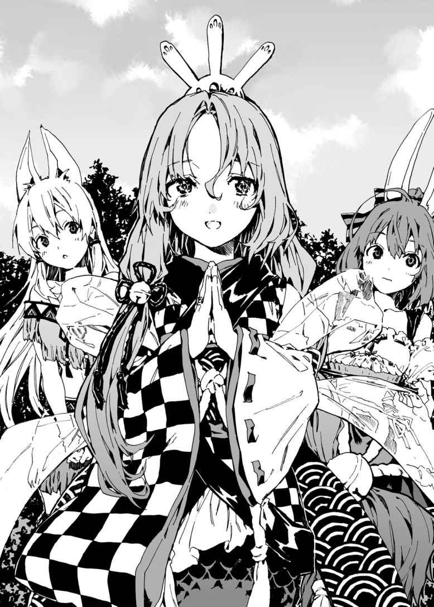

| アイテムチートな奴隷ハーレム建国記4 (HJ文庫) | |
| 猫又ぬこ | |
| ホビージャパン (2017) | |
《 序幕 続々と集 う嫁 》
クヌル平野の中心部に悠 然 と佇 む古城――。
その正門前に、三つの人 影 があった。
ひとりは不敵な面 構 えをした少年だ。弱々しさを感じさせない引 き締 まった身体 に黒いマントを羽織らせ、革 製 のブーツを履 いている。
アストラルではあまり見ない黒い髪 に黒い瞳 をした彼 ――竜 胆 翔 真 は、実のところこの世界の出身ではない。
ほんの三ヶ 月 前まで地球の日本という国で学生生活を送っていたが、アストラルを統治する最高神の勘 違 いにより異世界で過ごすことになったのだ。
翔真にとっては幸いなことにアストラルは神託遊戯 と呼ばれるカードゲームがすべてを決める世界だった。
神託遊戯は魔札 と呼ばれる魔 法 の効果が組みこまれたカードを用いて戦う決 闘 だ。その戦いに勝利した者は敗者に絶対遵 守 の命令を聞かせることができるのである。
かつて翔真が暮らしていた世界に神託遊戯は存在しなかったが――しかし、翔真は召 喚 された時点で多くの魔札を所有し、さらに神託遊戯で勝利するコツを身につけていた。
なぜなら翔真の祖父である竜胆敦 盛 は、五〇年ほど前にアストラルに住んでいたのだ。
物心ついた頃 より敦盛と魔札で遊び、多 彩 な戦術を叩 きこまれ、自ら戦略を編みだしてきた翔真は――アストラルに召喚されるやいなや、神託遊戯を用いてあっという間に成り上がってしまった。
アストラルではありえないはずの『異種族同士が共存する自治区 』を打ち立て――また『騎士門 』『獣牙門 』『死霊門 』『巨人門 』を治める全権代理者 を打ち破り、同盟を結んだのである。
同盟を締 結 するとともに四大門派 の全権代理者を嫁に迎 えた翔真。彼の治める自治区は破竹の勢いで勢力拡大を続けており、まさしく向かうところ敵なしといった状態なのだが......
「うぅ、不安じゃのぅ......」
そんな翔真に寄 り添 うようにふわふわと浮 いている娘 は、浮かない顔をしていた。
天 女 のような羽 衣 を纏 った、透 明 感 のある娘である。流れるような銀 髪 は朝日を受けて煌 びやかに輝 き、透 き通 るような白い肌 とあわさって幻 想 的 に感じられる。
あどけなさの残る顔立ちをしているものの、大きな胸やまるみを帯びたおしりは、成熟した女性の身体そのものだ。
夢でもなかなかお目にかかれないほどの神 々 しい美しさを持つ彼 女 は――アストラルの最高神にして翔真の嫁 の、アイリスだ。
「なにが不安なんだ？」
「クエストじゃよ。そなたは不安ではないのか？」
「不安どころか楽しみだぜ！ なにせ俺 は、アストラルに召喚されてからずっとこの日を待ち望んでいたんだからな！」
不安そうにしているアイリスとは対照的に、翔真は生き生きとした笑 みを浮かべている。無理もない。なにせクエストには世界中から腕 に覚えのある魔札使いが参加するのだから。神託遊戯好きな翔真にとっては最高に楽しみなイベントなのだ。
明るく語る翔真に、アイリスはうっすらと笑みを浮かべる。
「そなたは本当に神託遊戯が好きなんじゃのぅ。神託遊戯の生みの親としては嬉 しい限りなのじゃ。......じゃが、だからこそ不安なのじゃ」
アイリスは深々とため息をつく。
「なにせクエストの結果しだいでは、キルシュの手に〈神がかった交渉術 〉が渡 るのじゃからな。あれがあの女の手に渡れば、そなたの好きな神託遊戯はこの世から消えてしまうのじゃ」
キルシュはアイリスの実の姉であり、聖神門 の全権代理者を務める女である。聖神門は特 殊 な力を持っており、キルシュのそれは魔札の威 力 を高める〈強化 〉。三ヶ月ほど前、キルシュは強化に強化を重ねた〈悪天ノ種 〉で暴風雨を発生させたのだ。
その目的は異種族を殺すこと。キルシュの思 惑 通り、暴風雨はアストラルを蹂 躙 した。
暴力行 為 が禁じられているこの世界で、キルシュは不完全ながらも目的を果たしたのだ。そんなキルシュが〈神がかった交渉術〉を手にしてしまえば、今度こそアストラルは滅 ぶだろう。
なぜならクエストの景品となる〈神がかった交渉術〉は、『強制的に魔札を交 換 する』という効果なのだから。それを用いて魔札全種を集めたキルシュは〈神の間〉へ転送され、『魔素 』と呼ばれる力の源を手に入れ、圧 倒 的 に強化された『魔札の効果を打ち消す魔札』でアイリスが神託遊戯を創 る際に用いた〈空白の魔札 〉の効果を打ち消し――アストラルを暴力が許される世界に戻 そうと企 んでいるのだ。
そんな世界が訪 れようものなら、キルシュは立ち所に異種族を滅ぼしてしまうだろう。
つまるところ、明日のクエストに世界の命運がかかっているのだ。
それがわかっていながら、翔真はクエストを楽しみにしているのであった。
「まあ、それがそなたの強さの原動力なのじゃろうがな」
アイリスがため息まじりに言うと、翔真はにやっと笑った。
「よくわかってるじゃねえか」
「わしはそなたの正妻じゃからな。それくらいの理解はあるのじゃ」
アイリスは自 慢 げだ。翔真の正妻であることを誇 らしく思っている様子だった。
「そんな大事な場に、私が同席してもよろしいのでしょうか？」
翔真のそばに控 えていた娘が、静々と申し出てきた。
遠 慮 がちに話しかけてきたのは、先 端 の尖 った長い耳と蝙蝠 のような翼 を持つ娘である。柔 らかく波打つ金 髪 は絹のように繊 細 で、優 しげに垂れた瞳はまっすぐ翔真に向けられている。か弱そうな体つきだが、胸 元 は服を押 し上 げるように膨 らんでいた。
ほっそりとした首に無 骨 な首輪をはめた彼女は、翔真の奴 隷 のルメリアだ。
「仕事したいならカンナに相談してみるぜ？」
ルメリアは食事処 〈うさぎ亭 〉でウエイトレスとして働いているのだ。ここ最近連勤が続いていたため、カンナから三連休をもらったのである。
翔真の確 認 に、ルメリアはふるふると首を振 った。首輪から垂れた鎖 がカチャカチャと音を鳴らして揺 れる。
「私は、ご主人様のおそばにいるときが一番幸せです。ですが......お話されていたことは、難しくてわかりませんでしたが......ご主人様は、大事な場へと向かわれるのでしょう？ そんな場に、私などが同席しても迷 惑 にはならないでしょうか......？」
どうやらルメリアは、翔真の邪 魔 になることを怖 れているようだった。
「そんなわけないだろ」
と、不安げに瞳を揺らすルメリアの頭を翔真は優しく撫 でてやる。
「ルメリアのことを邪魔に思ったことは一度もねえよ。だから安心してついてこい。んで、ひさびさの休 暇 を楽しめ」
「ご主人様......」
ルメリアは嬉しそうに瞳を潤 ませる。翔真は微 笑 し、
「つっても、けっきょく留守番させることになっちまうがな」
精 霊 の管 轄 区 までは一 緒 に行くが、クエストの場まで同席させるつもりはない。なにせルメリアはあらゆる種族に忌 み嫌 われる混血種 なのだから。
様々な種族が集 うクエストの場へルメリアをつれていけば、彼女は悪意ある視線を浴び、悲しい思いをするだろう。翔真はルメリアの悲しむ顔など見たくなかった。かといって、城で留守番することになれば寂 しい思いをするはずだ。

そこで翔真はクエストに参加させないまでも、ルメリアを精霊の管轄区へとつれていき、別 荘 で過ごしてもらうことにしたのだ。
けっきょくは留守番することになるが、別荘にはルメリアの友達がいるのだ。翔真とは離 れることになるが、寂しい思いはしないだろう。
「少しでもご主人様のおそばにいられるなら、それだけで私は幸せです」
ルメリアが頬 を緩 ませ、嬉しげに微笑をたたえたところ、突 如 として目の前に光 り輝く穴ができた。
人間ひとりなら楽に通り抜 けることができるだろう光の穴――
「遅 くなってしまい、たいへん申し訳ないのだ！」
そこから、見 目 麗 しい娘が飛び出 してきた。
歳 の頃は一六、七ほど。凜 々 しい顔つきの、生 真 面 目 そうな娘である。豊満な胸と細い手足を覆 う白銀のアーマーが、少女の堅 物 な印象に拍 車 をかけている。
騎士門を束ねる全権代理者にして翔真の嫁の、ミスト・サージェントであった。
「よォ、早かったな」
翔真が笑いかけると、ミストはきょとんとした顔をする。
「早い？ ......言われてみれば、皆 の姿が見えぬな。てっきり遅 刻 してしまったとばかり思っていたのだが......」
「遅刻どころか、集合時間まで余 裕 があるのじゃ」
「集合時間ぎりぎりの到 着 は遅刻と同じようなものだと父に教わったことがあるのでな」
ミストは五分前どころか一〇分前行動を心がけているようだ。
「ま、早く来てくれるに越 したことはないぜ。美女と一秒でも長く一緒にいられるのは、男として嬉しいことだからな」
ミストはぴくんと震 えた。かあっと頬を赤らめ、凜 と引き締まっていた顔がふにゃっと緩む。
「い、いきなりなにを言いだすのだ。そ、そういうことは、できればふたりきりのときに言ってほしいのだが......」
太ももの前で手をもじもじさせるミスト。そんなうぶな反応をほほ笑ましく眺 めていた翔真は、ふと気づいた。
「昨日はあまり寝 てないのか？」
「な、なぜわかったのだ？」
「目の下にくまができてるからな。仕事が忙 しいのか？」
「忙しいといえば忙しいが、昨日は早めに終わらせたのだ。だが......クエストが楽しみで、なかなか寝つけなかったのだ」
ミストは気 恥 ずかしそうに頬をかく。遠足を明日に控えた子どものような気分だったのだろう。彼女は〈神がかった交渉術〉がクエストの景品になっていることを知らないのだ。もし知っていれば不安で眠 れなかったに違 いない。
なぜならキルシュが暴風雨を起こす際に利用したアルゲンは、元々は騎士門の重 鎮 ――ミストの側近だった男なのだから。
じかに接したわけではないが、ミストはキルシュの怖ろしさを知っているのだ。そんなキルシュの手に〈神がかった交渉術〉が渡ったらと思うと、楽しみとは言っていられないだろう。
「ところで翔真殿 。今回の遠 征 、宿 泊 先 はどうするのだ？ この時期、宿はほとんど満室なのだが......」
「宿の心配はいらねえよ。精霊の管轄区には別荘を持ってるからな」
「別荘を？」
「クロッカスって知ってるだろ？ これから向かう別荘はあいつから手に入れたものだ」
クロッカスとは騎士門随 一 の資産家だった男だ。翔真はクロッカスとの神託遊戯に勝利することで、彼の全財産を手に入れたのである。
「別荘についたらしばらく街をぶらつく予定だが、眠いなら寝てていいぜ。晩飯の時間になったら起こしてやるからな」
「だが迷惑ではないだろうか？ せっかく皆と遊ぶのだ。私のことは気にせず、遅くまで遊んでいてもいいのだぞ」
「ミストの寝 顔 を見るためだ、早めに帰るさ」
「じ、自分ではわからぬが、私の寝顔はあまり見られたものではないと思うのだ......」
と、ミストが恥 ずかしそうに頬を朱 に染めたところ、再び光り輝く門が現れた。先ほど同様『一日以上滞 在 したことがある場所への門を開く』効果の魔札――〈想い出の地へと続く扉 〉である。
「あら、まだ全員揃 ってなかったのね」
そこから現れたのは、黒地に赤いフリルのあしらわれたドレスを纏った娘である。
歳の頃は一五、六といったところ。ふわっとした髪は肩 のあたりで跳 ね、気の強そうな瞳で翔真たちの顔を見まわしている。
幼さの色 濃 く残る身体から甘 い香 りを漂 わせている彼女は――翔真の嫁にして死霊門の全権代理者を務めるシャーロットだ。
「よォ、相変わらず良い匂 いだな」
挨 拶 代わりに褒 めてやると、シャーロットは途 端 に顔を真っ赤にさせた。
「い、いきなりなにを言うのよっ！ そ、そんなに好きならもっと近くに来なさいよねっ。あ、あんたにだったら、好きなだけ嗅 がせてあげるんだから......！」
言いつつ、シャーロットのほうから歩み寄ってきた。翔真の腕に華 奢 な腕を絡 めると、ぴったりと寄り添ってくる。物足りなさはあるものの柔らかな感 触 が、ぐにぐにと触 れる。
「な、なにをしておるのじゃ！」
アイリスが悲鳴を上げた。慌 てふためくアイリスに、シャーロットが好戦的な眼 差 しを向ける。
「翔真はあたしの旦 那 様 だもん。こうやって腕を組むくらい、当たり前のことじゃない」
「そ、そうなのか？ ならば私も翔真殿に寄り添ったほうがいいのだろうか......？」
「好きにすればいいじゃない。ていうか、あんた翔真と結 婚 して三ヶ月目なんでしょ？ なのにまだ腕を組んだことすらないわけ？」
「ないのだ。だって、恥ずかしいではないか」
もじもじするミストに、シャーロットはあきれたような顔をする。
「その調子じゃ、あんたが翔真と手をつなぐ頃には、あたしは翔真の......あ、赤ちゃんを産んでるでしょうね」
「ならぬのじゃ！ それだけはならぬのじゃ！」
「あんたにどうこう言われる筋合いはないわ。これはあたしと翔真の問題だもの」
「ぐぬっ......！ じゃ、じゃがわしは翔真の正妻なのじゃ！ こういうのは普 通 、正妻が一番最初に産むものではないかのぅ」
「逆に言うと、一番最初に翔真の赤ちゃんを産んだら、あたしが正妻になるってことね」
「逆に言ってはならぬのじゃ！」
「ふん。そんなに正妻の座を維 持 したいならクエストで優勝することね。だって......ねえ、クエストで優勝すれば、ご褒 美 をくれるのよね？」
上 目 遣 いに見つめられ、翔真はうなずく。
「俺にできることなら、なんでも願いを叶 えてやるぜ。つっても優勝を譲 るつもりはないけどな」
「あんたの強さは認めるけど、ぜったい負けないわ。あたし、母親になる覚 悟 はできてるもん。ちゃんと育ててみせるから......む、胸は小さいけど、おっぱいもちゃんと出るはずだし......」
自分で言っていて恥ずかしくなってきたのか、シャーロットは言 葉 尻 を弱めていく。
「ミストよ。そなたはいまのままのそなたで......うぶなミストでいてほしいのじゃ」
「う、うむ。もっと翔真殿と親しくなりたいが......私には、シャーロット殿 のように振る舞 うことはできぬのだ」
「それでこそミストじゃ！」
奥 手 なミストに、アイリスはちょっとだけ安心した様子だ。
そうしてアイリスが安 堵 の表情を浮かべていたところ、目の前に大きな光の穴が現れた。城の正門を丸 呑 みにできるほど巨 大 な穴――
「お、お待たせ......」
そこから見上げるほどに大きな娘が出てきた。
はっとするほど鮮 やかな桃 髪 が目を引く、身 の丈 一二メートルほどの娘である。
長 髪 に彩 られた美 貌 は弱々しく歪 められ、穏 やかそうな物 腰 とあいまってか弱い印象を受ける。
瑞 々 しさが匂い立 つ身体は、ゆったりとしたサマーセーターとミニスカートに包まれ、ほどよく肉付いた美 脚 は太もものあたりまで黒いソックスに覆われている。
彼女は巨人門の全権代理者にして翔真の嫁の、ジュナである。
ジュナが翔真たちの数メートル手前でしゃがみこむと、ぶわっと風が吹 き、砂 塵 が舞い上がった。正座のような体勢になったことでスカートのなかは見えてしまっているが......無防備な性格なのか、ジュナは隠 そうともしなかった。
「俺がプレゼントした服を着てきてくれたのか」
「う、うん。この服、すごく気に入ってるから。で、でも、汚 れちゃわないか心配だけど......」
「汚れたら新しいのをプレゼントしてやるよ」
「い、いいの？ たくさん布を使っちゃうけど......」
「気にするな。ジュナの喜ぶ顔が見られるなら安いものだからな」
「嬉しい......。ありがとう、翔真さん......」
ジュナは美貌をふにゃっととろけさせた。うっとりとした視線を翔真に向けるジュナに、シャーロットがぽつりと告げる。
「ていうかあんた、そのサイズで来たのね。てっきり小さくなって来ると思ってたわ」
ジュナの部屋には翔真がオリジナル魔札で生み出した〈対等の門 〉が設けられている。その門をくぐることで、ジュナは翔真と同じ背 丈 になるのだ。
しかし〈対等の門〉には回数制限がある。一度目は翔真と同じ身長になるが、二度目は倍の身長になる。三度目はさらに倍になり、四度くぐると〈対等の門〉の効果はなくなる。
ジュナは一度くぐったため、小さくなるとはいえ三五〇センチほどになる。もっとも、それでも一二メートルに比べると街中を歩きやすくはなるだろうが。
「あれは使いたくないわ。だって、もったいないもの」
「もったいないって、どういう意味よ？」
「クエストに参加したらバトルフィールドに飛ばされて、効果が消えちゃうんでしょ？」
「うむ。クエストはバトルフィールドで開 催 されるのでな。神託遊戯の進行に必要のない魔札の効果は消えてしまうのだ」
このなかで唯 一 クエストに参加したことのあるミストが淡 々 と語ると、ジュナはしゅんとした。それから翔真を見つめ、
「翔真さん、あの魔札は......〈対等の門〉は、もう持ってないのよね？」
「ああ。あれが最後の一枚だったからな。けど、小さくなれないからって落ちこむことはないぜ。大きかろうと小さかろうと、俺はジュナが好きだからな」
ジュナの頬がじわじわと赤く染まっていく。さくらんぼのような色をした唇 が、笑みの形に歪む。
「わたしも、翔真さんのことが好き......大好き......。だけど、わたしはあと一回は小さくなりたいって思ってるわ。いつになるかはわからないけど......そのときのために、取っておきたいの」
「そのときというのは、いつなのだ？」
ミストが何気ない口調でたずねると、ジュナは戸 惑 うように目を泳がせる。
「わ、わたし......翔真さんの子どもがほしい、から......お、大きすぎると、赤ちゃん作れない、から......」
「そ、そうか......」
ミストは気まずそうに目を伏 せた。聞いてはならないことを聞いてしまったと後 悔 しているのだろう。まあ正直に言うジュナもジュナだが......きっといまのは決意表明も兼 ねているのだろう。
シャーロットと同じく、ジュナはクエストでの優勝を目指しているのだから。
「あんたはあたしの大切な友達よ。夢があるなら、全力で応 援 するわ。だけど、勝つのはあたしよ」
いまのを宣戦布告と受け取ったようで、シャーロットは好戦的な物腰で言い放った。
ジュナは臆 することなく、柔らかな物腰で受け入れる。
「わたし、あなたのことは好きだけど......優勝だけは譲れないわ」
「そうね。お互 いに頑 張 りましょう！」
先日まで敵対していたジュナとシャーロットは、いまではライバル関係になっている。一応これも敵対関係と言えるかもしれないが、良好な関係であることに変わりはなかった。
「わし、ジュナの気持ちが痛いほどわかるのじゃ」
と、アイリスが涙 ぐむ。
「わしだって、翔真に触 りたいのに触れない、もどかしい思いをしておるからのぅ......。じゃが、わしは諦 めぬ。必ずや翔真と触 れあってみせるのじゃ！」
「あんたって、霊体族 なのよね？」
と、シャーロットが突 っこむ。アイリスは聖神門だが、本当のことを話すとややこしくなるため死霊門の霊体族だと偽 っているのだ。
「う、うむ。わしは霊体族じゃ......」
口論することはあれど、シャーロットたちのことを好いているのだろう。アイリスは、正体を偽っていることへの罪悪感を抱 いているようだった。
「霊体族の体質を変える方法なんてないわよ。霊体族は霊体族としか触れあえないって、死霊門では常識だもの」
「そいつは初耳だが、アイリスと触れあえる方法には心当たりがあるぜ」
「方法って？」
「魔札全種を手に入れることだ。そうすりゃ〈神の間〉に飛ばされて、最高神から望みの魔札をもらうことができるからな」
「てことは、あんたはアイリスのために魔札を集めてるってこと？」
「俺が魔札を集めてるのは、ただの趣 味 だ。俺は魔札が好きだから、全種手に入れたいと思うのは当然だろ？ アイリスが実体を手に入れるのは、その副産物みたいなものだ。ま、なんにせよアイリスに触れるようになるのを楽しみにしてるがな」
「わしも翔真に触ってもらうのが楽しみなのじゃ！ まずは手を繋 いで、次にハグをして、それからキスをしてもらうのじゃ！」
楽しげに夢を語るアイリスに、翔真は笑みを向ける。
「アイリスといちゃいちゃできる日が来るのを楽しみにしてるぜ」
「わしもじゃっ！ わしら相思相愛じゃなっ！」
「ま、夫 婦 だからな」
翔真の口から夫婦という言葉が飛び出すと、アイリスは満面の笑みになった。
と、そのとき。
ジュナのとなりに光の門が生まれた。
「す、すみません遅くなりました！」
「ほらっ、やっぱり最後になっちゃったの！」
そこから、ふたりの獣 耳 娘が慌ただしく飛び出してくる。
狐 のような耳としっぽを持つ女の子――シャロンが申し訳なさそうにぺこぺこする傍 ら、虎 を彷 彿 とさせる縞 柄 の耳としっぽを持つ幼女は一直線に翔真のもとへ駆 け寄り、
「待たせちゃってごめんなさいなのっ！」
ばふっとお腹 に抱きついてきた。
彼女は獣牙門の全権代理者にして翔真の嫁の、スノウである。
「スノウに会えるのを楽しみに待ってたぜ」
オレンジがかった髪 の毛 を撫でながら言うと、スノウはがばっと顔を上げる。とろんとした目をぱっちり開き、水 晶 のような瞳でじぃっと翔真を見つめる。
「わたしが来なくて、寂しかったの？」
「おう」
スノウはぱあっと顔を輝かせると、翔真のお腹に頬ずりする。
「わたしも寂しかったのっ！」
翔真に甘えたい放題のスノウを一 瞥 し、シャーロットがアイリスを見上げた。
「この娘、翔真にべったりしてるけど......さっきみたいにおどおどしなくていいわけ？」
「スノウはまだ一〇歳じゃからな。嫁とはいえ、さすがにスノウには手を出さんじゃろ。そなたももうちょっと見た目が幼ければ、こんなに不安にならずに済んだんじゃがのぅ」
「......なによ。あたしの身体が貧 相 だって言いたいわけ？」
「わしよりは、な」
ちょっぴり得意気なアイリスに、シャーロットは悔 しそうに唸 る。この場の面々の胸を見て、ますます悔しそうにする。
「すみません。私のせいで遅 れてしまいました」
慰 めてほしかったのか、甘えるようにしなだれかかってきたシャーロットの相手をしていると、シャロンがすまなそうな顔で謝 ってきた。
ふさふさとしたしっぽは、しゅんと垂れ下がっている。
「シャロンが寝 坊 したのか？」
てっきりスノウが寝坊したのだと思っていたが。
「いえ、今朝はいつも以上に早起きしたんですけど......」
「精霊の管轄区に行くからって、おめかしされたの！」
スノウが頬を膨らませて言う。
精霊の管轄区には多くの種族が集まるため、獣牙門の全権代理者として恥ずかしくない格好をするようシャロンに言われたらしい。スノウはゴージャスなドレスを着せられたり、シックなドレスを着せられたり、ファンシーなドレスを着せられたり――とにかく、着 せ替 え人形のような扱 いを受けたのである。だが一向に服が決まらず、気づけば集合時間を過ぎており、けっきょくいつもの服装で行くことになったのだとか。
「やる気が空回りしてしまいました......」
シャロンはしょんぼりしている。
「気にするな。べつにクエストに間に合わないってわけじゃないんだからな」
クエストの受付期限は本日正午だ。あと三時間は余裕がある。受付は精霊の管轄区へと赴 き、その場に精霊を呼び、参加の署名と支 払 いをするだけだ。
翔真は〈瞬間移動 〉を使って精 霊 管 轄 区 に向かう予定なので、締 切 一分前に出発しても間に合うのである。
「そう言ってもらえると気が楽になります......。スノウ様も、申し訳ありません......」
「気にしてないのっ。だって、シャロンはわたしのために服を選んでくれたの」
「スノウ様......」
スノウに温かい言葉をかけられ、シャロンは涙ぐんでいる。
さておき、これで全員揃った。
「これからお前らを宿泊先に送り届けるぜ」
「そ、それって、わたしでも泊 まれるくらい広いのかしら？」
翔真が全員に告げると、ジュナが不安げにたずねてくる。
「実を言うと、精霊の管轄区に巨人門が寝 泊 まりできる施 設 はなくてな。いまのままだとジュナは野宿することになる」
精霊の管轄区は、精霊が統治する大都市だ。あらゆる種族が暮らしているが、巨人門は見当たらなかった。巨人門は揃いも揃って臆 病 なので、自治区の外に出たがらないのだ。それゆえ〈千里眼 〉で見まわしても、巨人門が宿 泊 できそうな施設は見つからなかったのだった。
「わ、わたし、野宿するの？」
「大事な嫁を野宿させるわけねえだろ。心配しなくても、ちゃんと手は打ってあるさ」
「翔真さん......」
嬉しげに瞳を潤ませるジュナに微笑を向け、翔真は各 々 の顔を見まわす。
「んじゃ、さっそく別荘に招待するぜ」
翔真は〈千里眼〉を使い、遠く離れた精霊の管轄区に別荘を見つける。そしてジュナを筆頭に、この場の面々を〈瞬間移動〉で別 荘 地 へと送り届ける。
「さて、あとは俺たちだけだな」
残るは翔真とアイリスだけとなった。もっとも、アイリスは翔真に取 り憑 いているため、せいぜい二五メートルしか離れることができない。それを超 えると翔真のそばへと瞬 時 に転送されるため、わざわざ送り届ける必要がないのである。
「翔真よ。なにがなんでもそなたが優勝するのじゃぞ！ キルシュにだけは〈神がかった交渉術〉を渡してはならぬのじゃからな！」
「心配すんな。俺は負けたりしないぜ。なにせこんなにすぐそばで、可愛 い嫁が見守ってくれてるんだからな」
翔真がにこやかに語りかけると、アイリスは弾 けるような笑みを浮かべた。今度こそ、不安は完全に吹き飛 んだようだ。
「うむっ！ 世界一かっこいい夫の勇姿をしかと見届けるのじゃ！」
そうしてアイリスを安心させた翔真は〈瞬間移動〉を詠 唱 し、精霊管轄区にある別荘へ向かうのだった。
《 第一幕 お人 好 しな人 魚 姫 》
精霊の管轄区はクヌル平野のじつに一五倍もの広さを誇 る大都市だ。年間の訪問者数はアストラル随 一 であり、大通りから路地裏までひとで溢 れかえっている。精霊の管轄区は隅 々 に至るまで商売をするには最高の立地なのである。それゆえ土地の価格は目玉が飛び出るほど高く、たいていは土地を買うのではなく借りて商 いを行っている。
そんななか、クロッカスは金に物を言わせて精霊から土地を買い取ったのだろう。
東西南北に分かれた精霊管轄区の北エリア。
繁 華 街 の喧 噪 を離れた静かな場所に、クロッカスの別荘あらため翔 真 の別荘――白 亜 の豪 邸 は建っていた。
四方を垣 根 に囲まれた広大な敷 地 内 にある落ち着いた雰 囲 気 の豪邸――三階建ての家は八つのベッドルームに三つのバスルームという部屋数を誇り、さらにプールを備えている。広々とした芝 生 の庭は青々としており、ぴかぴかに磨 かれたプールには透明感のある水が張られている。
もっとも、翔真が手を加える前は芝生は伸 び放 題 、プールは汚 れ放題だったが......嫁に気持ちよく過ごしてもらうため、事前に魔札 で手入れしたのである。
そのかいもあり、ミストたちは別荘に感心している様子だった。別荘に到着してすぐに庭先に精霊を呼び、いましがたクエストへの受付手続きを済ませたばかりなので、屋内はこれから見るところだが――内装に不安を感じている様子はなかった。
ただひとり、ジュナを除いては。
「わたし、どこで寝ればいいのかしら？」
楽しげな雰囲気に水を差したくなかったのだろう。ジュナはか細い声で言った。しかし、大きな身体から発せられるジュナの声は、か細いくらいでちょうどいいのだ。翔真たちは一 斉 に顔を上げ、ジュナを見上げた。
ジュナが言いたいことは全員が理解しているだろう。立派な豪邸ではあるが、ジュナの身体には小さすぎるのだ。どの角度から見てもジュナが寝泊まりできるスペースはない。
「俺の魔導指輪 には巨人門 が寝泊まりできるサイズの家が保管されてるからな。敷 地 には余裕があるし、一 軒 家 くらいなら建てられるぜ」
翔真が告げると、ジュナの顔色が明るくなる。
「わたしはそこで寝るのね？」
「ああ。ひとりだと寂しいだろうから、俺とアイリスが一緒に寝てやるぜ」
「気持ちは嬉しいけど......翔真さん、わたしと一緒に寝るの怖 くないの？ もしかしたら、潰 しちゃうかもしれないのに......」
アストラルでは暴力行為は禁じられているが、無意識下の暴力は許されるのだ。人間が無意識に虫を踏 み潰すことがあるように、巨人門は人間を踏み潰してしまうことがある。
つまるところ、ジュナは寝 返 りを怖れているのだ。
「びくびくするこたぁねえよ。いつも通りに寝ればいいさ。ジュナの寝 相 のよさは、よく知ってるからな。ま、こないだ寝たときみたいに抱きつかれると嬉しい悲鳴を上げちまいそうだがな」
翔真と寝たときのことを思い出したのか、ジュナはうっすらと頬を朱に染めた。
「あ、あのときはベッドから落ちちゃうんじゃないかって不安だったから......」
そう言うと、ジュナはじぃっと翔真を見つめた。
「......ほんとに、わたしと一緒に寝てくれるの？」
「おう。嫁 に寂しい思いをさせるわけにはいかねえからな」
「翔真さん......」
本当に嬉しかったのだろう。ジュナは表情を緩め、瞳 を潤ませた。
その大 袈 裟 な反応に翔真は思わず苦 笑 しつつ、大きな家の魔札を具現化させる。
一階建ての一部屋しかない木組みの家だが、大きさだけなら豪邸以上だ。まあ大きさのわりに家具はベッドしかないのだが......
「立派なお家 ......」
それでも気に入ったらしく、ジュナはうっとりとした顔をしている。
「風 呂 場 はないが、〈綺麗好きな風 〉を使うから問題ないぜ」
「うん。なにからなにまで本当にありがとう」
「気にするな。ほかになにか困ったことがあれば、遠 慮 なく言えよな。その場で解決してやるからよ」
翔真が微笑をたたえて告げると、ジュナは嬉しげにうなずいた。
「これからなにするの？」
そうして住居問題が解決したところで、スノウがたずねてきた。クエスト参加の受付は済ませたため、今日は特にやることがないのだ。
「スノウはどうしたい？」
「翔真お兄ちゃんとお出かけしたいのっ！」
スノウは待ってましたと言わんばかりの顔で言う。全権代理者 になってからというもの、スノウは働きづめだった。ひさしぶりの休日を翔真と満 喫 したいのだろう。
「んじゃ、昼飯でも食いに行くか。ほかについてくる奴 はいるか？」
翔真はみんなの顔を見まわしながらたずねた。
最初に口を開けたのはジュナだった。理由は聞かずともわかる。
「わたしは残るわ。街中を歩くと踏み潰しちゃうかもしれないもの」
続いてミストが言う。
「私も残るのだ。静けさの漂 うここを訪れ、眠 気 が押し寄 せてきたのでな」
「ご主人様は、お夕飯までには帰ってくるのでしょうか？」
ルメリアが静々とたずねてくる。
「そのつもりだぜ」
「でしたら、私はお夕飯の支 度 をします。いまから作り始めれば、ジュナ様の分まで用意できますから」
「ありがとう、ルメリアさん。......でも無理はしなくていいわ。わたしには、翔真さんが育ててくれたビッグビーンズがあるもの」
「では私も料理を手伝いますよ」シャロンが言う。「みなさんには美味 しいものを食べてもらって、明日のクエストに挑 んでほしいですからね！」
「シャロン様が手伝ってくださるなら、ジュナ様のお夕飯も必ず用意できます」
ふたりの好意に、ジュナは感動したように瞳を潤ませる。
「んじゃ、ふたりの手料理を楽しみにしてるぜ」
翔真がほほ笑 みかけると、ルメリアは嬉 しげに唇 をほころばせた。翔真は料理に必要な魔札をルメリアに渡 すと、スノウとシャーロットとアイリスをつれて別荘をあとにするのであった。
◆
ひとまず繁華街へとやってきた翔真は、アイリスたちをつれて大通りを歩いていた。
石 畳 を挟 むように露 店 が並び、看 板 娘 たちが競 いあうように客引きしている。さすがは精霊の管轄区なだけあり、道行く人々は多様な種族だ。押し合 いへし合いしながら通りを歩き、肩がぶつかったり足を踏んづけたりしたのだろう、忙 しなく口論が聞こえてくる。
「あ、危ないわね。どこ見て歩いてんのよ......」
シャーロットは雑 踏 と喧噪に揉 まれ、へとへとになっている様子だ。口論が響 くたび、怯 えるように身を竦 ませている。
「ね、ねえ。もしあたしが誰 かに絡 まれたら、助けてくれる？」
翔真の腕 に華 奢 な腕を絡め、甘 えるような声で言う。
「おう。神託遊戯 で追 い払 ってやるぜ。それはそうと、怖いならもっと近寄れよ」
「うん。そうさせてもらうわ」
絡める腕に力をこめ、シャーロットは翔真に密着する。一方スノウは翔真と手をつなぎ、物 珍 しそうにあたりを見ながら歩いていた。しかしスノウの視点からだと行き交 う人々の身体しか見えないようで、
「おんぶしてほしいの」
翔真を見上げ、お願いしてきた。
「浮 遊 の魔札を使ったらどうだ？」
「それだと翔真お兄ちゃんと離れちゃうの」
どうやらスノウは翔真に甘えたいらしい。クエストが終わると仕事で忙しくなるため、今日は思う存分翔真にべたべたしたいようだ。空を飛ばせると迷子になるかもしれないし、おんぶを断る理由は特にない。
「ほらよ」
「うわぁ、高いのっ」
おんぶしてやると、スノウははしゃいだ。落ちるなよ、と翔真は苦笑し、ふと路地裏へ目を向ける。大通りは店も多いがひとも多い。空いている店を見つけるのは一苦労だし、店内だって混雑しているだろう。路地裏に入ったほうが落ち着いて歩けそうである。
「ちょっと暗いわね」
路地裏に入ると、シャーロットが弱々しい声を上げる。ふたり並んで歩くのがやっとの細道には、ちらほらと人 影 が見える。左右を建物に挟まれているため日が遮 られ、薄 暗 くなっている。
「怖いのか？」
「べ、べつに怖くないわ。だって、あんたがそばにいるもん」
シャーロットは翔真の腕に頬を押 しつける。
「今日はやけに甘えるな」
「だって、別荘に戻 ったらあんたの嫁がたくさんいるじゃない。賑 やかなのは好きだけど......本音を言うと、あんたを独 り占 めしたいのよ。だけどそれは無理だから、こうしてるわけ。......べたべたされるのは嫌 だった？」
シャーロットが不安げに見つめてくる。
「相手にもよるが、シャーロットといちゃつくのは好きだぜ。良い匂 いがするしな」
シャーロットが幸せそうに目を細めるのと同時、頭上から悲鳴が響く。
「わ、わしだって翔真に甘えたいのじゃ！」
ふわふわと頭上に浮 いていたアイリスは高度を下げ、翔真の目の前へ移動する。
「ちょっと。前が見えないじゃない」
「そなたにはすまぬと思っておるが、わしは翔真に見てほしいのじゃっ！ 翔真はわしを見るのと景色を見るの、どっちが好きじゃ？」
「アイリスに決まってんだろ」
「嬉しいのじゃっ」
翔真の頭上でくるくるまわり、喜びを表現するアイリス。視界が回復する。あらためて前方を見ると、食事処 と思 しき看板が並んでいた。
シャーロットの甘い香 りに紛 れているが、食欲をそそる香りも漂っている。もっとも、スパイシーな匂いに酸 っぱい匂い、脂 っこい匂いに酒の匂いなど――様々な香りがごちゃ混ぜになっているため、どの店でどんな料理が提供されているのかは想像もつかないが。
「早くお店に入りたいのっ！」
雑多な匂いに食欲を刺 激 されたらしく、スノウが翔真の耳元で声を張り上げた。
「だな。そろそろ店を決めるか」
別 荘 をあとにして小一時間ほど経 つ。スノウはお腹を空 かせているし、シャーロットは歩 き疲 れている。どこかの店に入り、食事休 憩 を取るとしよう。
「向こうのほうまで看板が出てるの。どこにするの？」
「スノウの入りたい店でいいぜ」
「どこでもいいのっ？」
「おう。好きな店に入って、好きなものを好きなだけ食べろ」
「食べるのっ！」
「あ、あのさ、あたしはできれば生肉か、果物のあるお店がいいんだけど」
好 き嫌 いではなく、死霊門 は生肉を食べるのだ。焼く煮 る蒸すなどの加工をすると胃が受けつけないのである。
「ここにはいろんな種族が暮らしてるからな。死霊門向けのメニューもあるだろうぜ」
「それを聞いて安心したわ。それで、どこにするわけ？」
「シャーロットお姉ちゃんが気に入りそうなお店を探すのっ」
スノウはそう言うと、眉 間 に人差し指を当てた。ぎゅっと目を瞑 り、むむむ、とうなり、カッと目を見開き――
「あそこなのっ！」
びしっと三軒 先の看板を指さした。
そちらへ向かうと......怪 しげな雰囲気の店だった。
石造りの壁 はところどころが欠けており、アーチ型の入口の奥 は真っ暗になっている。入口の奥は階段になっており、壁に窓は設けられていなかった。これでは入ってみるまでどんな料理店かはわからない。
もっとも〈千里眼 〉を使った翔真の瞳には具の少ないシチューのようなスープにパンを浸 して食べている獣牙門 や飛翼門 の姿が映っているが。
「あ、あそこに入るわけ？」
なかの様子をうかがい知ることのできないシャーロットは怯 えている。
「わたしの第六感が、美味しいお店だってささやいてるのっ」
「あてになるの、それ？」
「なるの」
きりっとした顔で言うスノウを、翔真は地面に下ろす。
「スノウがこう言ってるんだし、入ってみようぜ」
「まあ、あんたが一 緒 なら怖いものはないんだけど......なにかあったら、守ってよね」
「なにもないっての。ま、そのときは守ってやるけどな」
「そ。ならいいのよ」
シャーロットは嬉しそうに頬 を緩 め、翔真に密着したままアーチ型の門をくぐる。急な階段を五段上がった先に扉 があった。
扉を開けてなかに入ると、そこは西部劇に登場しそうな殺風景な店だった。古びた丸いテーブルがいくつか置かれ、そのまわりに椅 子 が並べられている。席は六割ほど埋 まっており、顔立ちから判断するに、客層はあまりよろしくない。
とはいえ悪 巧 みをしているなんてことはなく、彼 らの話題はクエストのことで持ちきりだった。今回の景品はなにになるのだろう、優勝者は誰になるだろう、などと話している。ルールについて考察していないところを見るに、彼らは参加しないのだろう。
クエストに参加しないなんてもったいない――そんなことを考えながら、翔真は椅子に腰 かける。
「シャーロットお姉ちゃんの好きそうなものがあるか、一緒に探すのっ」
スノウは声を弾 ませ、テーブルにメニューを広げる。
「へえ、けっこう充 実 してるわね」
先ほどまで怯えていたシャーロットも、メニューを見た途端に目の色を変えた。まるで絵本でも読むように、ふたりは楽しげにメニュー表をめくっていく。
そんな姉妹のようなやり取りをほほ笑ましく眺 めつつ、ふと隣 席 に目をやると――この店の雰囲気にはそぐわない見た目をした娘 が席についていた。
歳 の頃 は一六、七といったところ。育ちの良さがうかがえる、おっとりとした印象の娘である。川のように流れる青 髪 は床 に届くほど長く、なめらかな白い肌 は店の照明を浴び、淡 く光って見える。袖 口 の広い着物のような衣 装 を纏 い、娘が真 剣 な顔でうなずくたび、胸がゆさゆさと揺 れている。
そんな見 目 麗 しい娘の下半身は――宝石のような鱗 に覆 われた尾 ひれだった。つまり、彼 女 は海妖門 というわけだ。
以前〈千里眼〉で海の底を見まわした際、ちらっとその姿を見かけたことはあるが――じかに見るのははじめてだ。
てっきり海妖門は〈擬態 〉で下半身を人間の脚 にして地上に出ると思っていたが、娘は浮遊の魔札でこの場へやってきたのだろうか。だとすると奴 隷 商人に目をつけられそうだ。なにせ海妖門はアストラルで唯一〈千里眼〉を持つ翔真ですら地上で見かけたことのない種族なのだから。
そんなにも珍 しい種族なら高値で取引されるだろうし、奴隷商人にしてみれば、彼女は垂 涎 ものの宝のようなものだろう。
「その話、ほんとうですの......？」
乙 姫 のような姿をした娘が気の毒そうにたずねると、向かいに座 るふたりの男が同情を誘 うような声を上げる。
「そうなんだよ......俺 たち、生きるか死ぬかの瀬 戸 際 なんだ......」
「あんただけが頼 りなんだよ......」
一方は豚 鼻 で、もう一方は馬 面 だ。全身獣 のような体毛に覆 われているし――ふたりは獣牙門のようだ。ふたりは娘の相手に夢中でスノウに気づいておらず、スノウはメニュー表に夢中で男たちの話など聞こえていない様子だ。
「では、わたくしがそこに署名をすれば、あなた様方は救われるのですね？」
お嬢 様 然とした見た目同様、上品な口調で問いかける。
「そうなんだよ......あんたが名前を書いてくれれば、俺たちは救われるんだ......」
「あんたの署名入りの紙を店に持っていかないと、ウィード様にお仕置きされちまうんだ......」
ふたりは同情を誘うような口調で言う。口ぶり的に、ふたりはウィード一派の残党なのだろう。ウィードは翔真との神託遊戯に敗れ、全財産を失ったのだが......ふたりの耳には、その話は届いていないようだ。オーナーが翔真に変わったとも知らず、この町にある店で働いているのだろう。
「わたくしに任せてくださいな。あなた様方に酷 い仕打ちをしないように、ウィード様を説得してみせますわ」
男たちはあんぐりと口を開いた。
「な、なんでそうなる!? 」
「俺たちの話を聞いてなかったのか!? そこに署名してくれるだけでいいんだよ！」
女の子はにこりと笑う。
「もちろん署名はいたしますわ」
「ほ、ほんとうかい？」
「ええ。ですけれど、それでは根本的な解決にはなりませんわ」
「......あんた、なにをしようってんだ？」
「お話を聞いた限りでは、あなた様方はウィード様と不仲なのでしょう？ わたくしは、その仲を改善させたいのですわ。ウィード様がどういった方なのかは存じ上げませんが、きちんと話しあえば、必ずわかってくださいますわ」
まじめな口調で語る娘の話を聞き、男たちは顔を見合わせた。一 瞬 にやりと笑ったかと思うと毛深い腕で目元を隠し、洟 をすすり始めた。
「あ、あんた、いい奴だなぁ......」
「ありがとう。ほんとうに、ありがとう......」
どう見ても嘘 泣 きだったが――娘は心を打たれたらしい。宝石のように澄 んだ瞳に涙を滲 ませ、一筋の雫 が頬を伝う。
「ご、ごめんなさい。あなた様方の力になれるのだと思うと、嬉しくて、つい......」
袖口で涙を拭 う女の子。その姿を見て、男たちはテーブルの下で握 手 を交 わす。
怪しいとは思っていたが、どうやら詐 欺 の現場に居合わせてしまったようだ。あるいは、美人局 のようなものかもしれない。正義感に駆られて助けに入ったところを、難 癖 つけて神託遊戯に持っていき、全財産を奪 い取るのが狙 いかもしれない。
そう思ってしまうくらい、男たちの手口はお粗 末 だった。そしてなにより、娘はひとが好 すぎた。
騙 すより騙されるほうが悪いとは言わないが――騙されないように用心を怠 ってはならない。でなければ借金苦の果てに奴隷となり、男の欲望を満たすための人生を送るはめになるかもしれないのだ。
娘の人生は、翔真の手にかかっている。放っておくこともできたが、メニューが決まるまでとうぶん時間がかかりそうだ。
翔真はそっと席を立ち、娘に告げた。
「お前、騙されてるぜ」
娘がきょとんとした顔で見上げてくるのと同時、男たちが鋭 い眼光を飛ばしてくる。
「よけいなこと言ってんじゃねえ！」
「部外者は引っこんでろ！」
「それ、奴隷の契 約 書 だろ」
怒 声 に臆さず指 摘 すると、男たちがびくっと震 えた。
「そんなわけねえだろ！ よく見ろ！」
「変な言いがかりつけやがって！ これのどこが奴隷の契約書だってんだ！」
男たちはこれ見よがしに紙を突きつけてくる。
翔真はアストラル語を読み書きすることができない。それゆえなにが書いてあるのかはわからなかったが――
「〈看破 〉！」
と〈擬態〉の効果を打ち消す魔札を詠唱した途 端 、文字は紙に吸いこまれるようにして消え――異なる配列の文字が滲み出 てきた。
その文字を見た娘は、はっと目を開き、潤 んだ瞳を男たちに向ける。
「わたくしのことを......騙しましたの？」
翔真の予想通り、奴隷の契約書だったようだ。これ以上は誤 魔 化 しきれないと判断したのか、男たちは開きなおるようにふんぞり返った。
「だからどうした？」
「騙されるてめえが悪いんだ！」
怒 鳴 り散 らす男たちに、娘は涙を流した。
「よかったですわ。あなた様方は、ウィード様とは喧 嘩 などされていないのですね」
驚 くべきことに、この期 に及 んで娘はふたりの心配をしていた。
同族相手でも許しがたい行 為 なのに、娘を騙したのは獣牙門――異種族だ。なのに娘は怒 るどころか、安 堵 していた。心根の優 しすぎる、あきれるほどのお人好しだ。それとも海妖門はみんなこうなのだろうか。
その話は、男たちを追い払ったあとに聞かせてもらうとしよう。
「ウィードに喧嘩してる余 裕 はないぜ。なにせあいつの全財産は、俺が奪 い取っちまったからな」
「な、なんだと!? 」
「ウィード様がてめえにやられたってのか!? 」
うろたえる男たちに、翔真は証 拠 を見せてやる。魔導指輪からウィードの経営する店の権利書を具現化させると、ふたりの眼前に突 きつけてやった。
男たちは食い入るように権利書を見たあと、〈看破〉を詠唱する。当然のことながら、文章は変わらなかった。
男たちは顔を見合わせる。じわじわと恐 怖 が湧 いてきたのか、がたがたと震え始めた。そして次の瞬間、一目散に逃 げていった。
「あんたって、ほんと人助けが好きよね」
「そこが翔真お兄ちゃんのかっこいいところなのっ」
さすがに注目を集めたようで、となりに座るシャーロットとスノウはもちろん、店中の視線が翔真に釘 付 けとなっていた。
当然、娘の視線も翔真に向けられている。彼女は椅子から降り、尾ひれを床につけると、三つ指をつき、深々と頭を下げてきた。
「見ず知らずのわたくしに救いの手を差 し伸べてくださり、本当に感謝しますわ」
まさか異種族相手に土下座までするとは思わなかった。あまりの礼 儀 正 しさに、翔真は苦笑してしまう。
先ほども見ず知らずの男たちを救おうとしていたし......彼女には異種族に対する敵意がないのだろうか。
「申 し遅れました。わたくし、ミモザと申します。あなた様のお名前をお聞かせいただけますでしょうか？」
「竜 胆 翔真だ」
ミモザはにこりとほほ笑む。嫌 味 のない、上品な笑みだ。
「素 敵 なお名前ですわね。そちらの方々は、竜胆様のお連れ様でしょうか？」
「翔真でいいぜ。こいつらは俺の嫁――シャーロットに、スノウに、アイリスだ」
「まあ、お嫁様を三人も！」
ミモザがうっすらと頬を紅潮させ、口元に手を当てて驚 く。
その指先に、シルバーリングが輝 いていた。
「......お前、海妖門の全権代理者か？」
魔導指輪は魔札のコンプリート率に応じて色を変える。シルバーリングということは、彼女の魔導指輪には三〇〇一～八〇〇〇種もの魔札が保管されているということになる。
それほどの魔札を集めるなんてただ者ではない――名のある資産家か、全権代理者しかいない。そして翔真が出会ったシルバーリングの所有者は、総じて全権代理者だった。
「どうしておわかりになりましたの？」
案の定、ミモザは全権代理者だったようだ。
「俺の嫁――スノウとシャーロットも全権代理者でな。ふたりとも、ミモザと同じく銀の魔導指輪をはめてたってわけだ」
「まあ、そうでしたのね。ですが......お恥 ずかしながら、詳 しいことはわからないのですけれど......全権代理者というのは、自治区 で一番偉 い方なのでしょう？ そんな偉い方をふたりもお嫁様にしてしまうあなた様は、いったい何者なんですの？」
「俺も全権代理者なんだよ。八大門派 とはべつの勢力だけどな」
「八大門派といいますと、たしか......」
ミモザは指折り数えながら門派を口にしていく。
世間知らずを極 めたような娘だ。
翔真のように異世界から召 喚 されたわけではあるまいに。まさかここまでアストラルに無知な娘がいるとは思わなかった。
「あなた様は、ほかの門派とはどう違 いますの？」
「まずは座れよ。話はそれからだ。立ったままだと脚が痛むだろ？」
翔真は魔導指輪から寝 椅 子 を具現化させ、ミモザに着席を促 した。翔真のテーブルには椅子が余っているが、普 通 に座ればミモザの尾ひれがはみ出 してしまうのだ。
「翔真様は、お優しい方なのですね。実を言いますと、脚がひりひりしてましたの」
ミモザは気 恥 ずかしそうに打ち明けた。ふかふかの寝椅子に座り、労 るような手つきで尾ひれをさする。
「ミモザは腹減ってねえか？」
翔真がたずねると、ミモザは「少しばかり」とお腹 を押さえて言った。
「好き嫌いはあるか？」
ミモザが首を振 ったのを見て、翔真はスノウに「多めに注文してくれ」と告げる。と、スノウはきりっとした顔で「わかったの」と言い、メニュー表との睨 めっこを再開した。一方のシャーロットはすでに食べたいものを選んだようで、翔真のほうをじっと見ている。
「なにか食いたいものがあったら、遠 慮 なく言えよな」
翔真はミモザに告げた。
「食べたいものといいますか......先ほどから甘 い香 りが漂 っているのですが、これはなんという料理の香りなのでしょう？」
シャーロットがびくっと震えた。助けを求めるように、翔真に目配せしてくる。自分の身体の匂 いのことは、あまり言いたくないのだろう。
「この香りはシャーロットの匂いだ。シャーロットは死霊門の全権代理者でな。死霊門は良い香りのする種族なんだよ」
「まあ、そうでしたの。こんなに素敵な香りがするなんて、羨 ましいですわ」
無 垢 な笑みを向けられ、シャーロットはぽかんと口を開ける。
「......あんた、異種族への嫌 悪 感 とか持ってないわけ？」
「そんな感情、抱 いたことがありませんわ。そもそも、わたくしは先日まで異種族がいることなど知らなかったのですから。お父様とお母様もそんなことは一言も口にしませんでしたし......ですので、地上に町があるなんて思いもしませんでしたわ」
海妖門自体が異種族への差別意識を持っていないというわけではなく、ミモザが世間のことを知らなさすぎるだけのようだ。
「あんた、よほど大切に育てられたのね」
シャーロットの言うように、ミモザは大切に育てられたのだろう。そんな過保護すぎる両親がミモザを地上に向かわせるとは思えないし――おそらくミモザの両親は亡 くなったのだろう。
しかし、だからといってミモザが地上に出てくる理由がわからない。
「精 霊 の管 轄 区 へはなにをしに来たんだ？」
タイミング的にはクエストに参加するためだろうが、ミモザは情報を遮 断 されて生きてきたのだ。彼女はどうやってその情報を手にしたのだろう。
「声が聞こえたんですの」
と、ミモザは言った。
「『ＳＳＳランク魔札を持って精霊の管轄区を訪 れ、クエストに参加しろ。でなければ、海妖門の奴隷を皆 殺 しにする』、と。そこではじめて、わたくしは地上に町があることを知ったのですわ。そして実際に地上を訪れ、様々な種族がいることを知ったのです」
そう語るミモザに不安な様子はない。地上に自分の知らない世界が広がっていると知り、不安になるどころかわくわくしたのだろう。なんとなく、翔真はアストラルに召喚された頃のことを思い出した。
ミモザは良くも悪くも怖 いもの知らず――好 奇 心 旺 盛 な女の子なのである。
「ＳＳＳランク魔札を持ってんのか？」
「ええ。詳しいことは存じ上げませんけれど......世界に一枚しかない貴重な魔札だと、昔お父様がくださいましたの」
「......なるほどね」
翔真がアイリスを一 瞥 すると、彼女は神 妙 な顔でうなずいた。
ミモザに〈碧落からの語りかけ 〉で指示したのは、キルシュと見て間 違 いない。
ＳＳＳランク魔札の所有者をクエストの場に呼びつけるということは――キルシュは〈神がかった交渉術 〉の効果を知っているということだ。強制的に魔札を交 換 する効果の魔札――〈神がかった交渉術〉は、結界内に隠 れられると効果を発揮できないのである。
景品の魔札はクエストの開会式――バトルフィールドにて発表される。クエスト終 了 後、参加者は〈神がかった交渉術〉の効果を広め、あっという間に世界中の人々がその脅 威 を知ることになる。強制交換を避 けるため、結界内に身を潜 める者も出てくるだろう。
キルシュはそれを怖 れているのだ。
だからこそ、ミモザにクエスト参加を命じたのである。バトルフィールドにて催 される閉会式、あるいはクエスト終了後に精霊の管轄区で強制交換しようと企 んでいるのである。結界の魔札は自分の所有する土地でしか使うことができないため、バトルフィールド及 び精霊の管轄区では使用することができないのである。
もっとも、なかには翔真のような例外もいるのだが。それに、参加を命じられたほかのＳＳＳランク魔札の所有者も精霊の管轄区に土地を持っているかもしれないが――人 質 を取られている以上、逃げることは許されないのだ。
さておき、翔真は推測を続ける。
（キルシュが〈神がかった交渉術〉のことを知ってるってこたぁ、ミリアがいたってことだよな）
ティナが翔真のもとを訪れた際、心の声を聞く能力を持つ娘――ミリアが近くに潜んでいたのだ。
あのときティナは『あなたはクエストのルールを聞き出すつもりなのですか』と翔真に告げた。その際、ティナの脳 裏 にはクエストのルールがよぎったはず。あの場にミリアがいたとすると、ティナの心の声を盗 み聞 き、クエストのルールを把 握 したはず。そして、それを余すことなくキルシュに伝えているはずだ。
つまるところ、今回のクエストは圧 倒 的 にキルシュが有利というわけだ。だとしても、翔真に負けるつもりはさらさらないが。
「そなた、もしやキルシュを説得しようと思っておるのではないか？」
「キルシュ......というのは、声の主のことですの？」
「そうじゃ」
「でしたらアイリス様のおっしゃる通りですわ。わたくしはクエストに参加し、キルシュ様とお話をするのです。キルシュ様は気難しい方のようですが......きちんとお話をすれば、必ず仲良くできると信じておりますわ」
「たしかに友達の言葉なら、キルシュも耳を貸すかもしれねえな」
翔真が理解を示すと、ミモザは明るい顔でうなずいた。
「はいっ！ ですので、わたくしは世界中の方々とお友達になりたいと思ってますわ！ そしてわたくしを架 け橋 として、みなさまに仲良くなってもらうのです。......いまはまだお友達はできておりませんし、そこかしこで口論している方々は、わたくしの言葉に耳を貸してくださいませんでしたけど......わたくしは、けっして諦 めたりしませんわ！」
おっとりとした見た目からは想像もつかない熱弁を聞かされ、翔真は笑みを浮かべた。
ミモザの理想とする世界は、アイリスが理想とする世界とまったく同じだったのだ。
「そんなミモザに耳寄りな話があるぜ。俺の自治区は『異種族共存』を謳 ってんだよ」
「異種族共存と言いますと......この町のようなところでしょうか？」
「もっと平和なところなのっ。みんな仲良くお家 とか建てて、畑とか耕してるのっ！」
スノウのセールストークに、ミモザは興味を示した。感心するように目をまるくして、翔真に顔を近づけてくる。
「そんな町がありますのっ？」
甘い吐 息 が翔真の頬を撫 でる。キラキラと瞳を輝かせ、無 邪 気 に笑うミモザは、スノウより幼く見えた。
「いま見せてやるよ」
翔真は『詠 唱 者 の見ている光景を映す』効果の魔札――〈視界の映し鏡 〉を詠唱した。翔真の手元に手鏡が現れる。翔真は〈千里眼〉を使っているため、手鏡にはクヌル平野の様子が映し出されていた。
「ここが俺の自治区だ」
手鏡を見せると、ミモザは息を呑 んだ。夢でも見るようにうっとりと鏡のなかの世界を眺めていたミモザは――
がしっと翔真の手を握 る。
「わたくし、あなた様のお力になりたいですわ！」
それこそが翔真の聞きたい言葉であった。
海妖門と同盟を結び、アイリスの夢である『差別のない平和な世界』を創 るためには、全権代理者であるミモザの協力がどうしても必要となってくる。
一時的な同盟ではなく、恒 久 的 な同盟を結び、末永く友好関係を築いていくためにも、まずは全権代理者同士が親密でなければならないのだ。
そんなわけで翔真は告げる。
「じゃ、俺と結 婚 するか」
冗 談 めいた口調で言うと、ミモザは一瞬きょとんとしたあと、かああっと顔を真っ赤にした。
赤らんだ顔を袖 で隠し、ちら、と翔真を見てくる。
「と、突 然 なにをおっしゃいますの？ わ、わたくしのことをからかってるんですの？」
「俺は本気だぜ」
笑みを向けると......ミモザは、ゆっくりと袖を下ろした。
姿勢を正し、身体をカチコチにこわばらせ、肌を火 照 らせたまま言う。
「そ、そういうことは、もっとお互 いのことを知ってからするものだと思うのですけれど......そ、それに、翔真様には三人もお嫁 様がいらっしゃるじゃありませんの」
「正しくは五人だ。騎士門 と巨人門の全権代理者も、俺の可愛 い嫁なんだよ」
「そんなにお嫁様がいらっしゃるなんて......翔真様は、よほど魅 力 的 な男性なのですね。そんなあなた様に結婚を申しこまれたことを、わたくしは光栄に思いますわ。......ですが、だからといって、あなた様と結婚することはできませんわ。だって、わたくしたちはつい先ほど知り合ったばかりではありませんの。もっとお互いのことをよく知るべきですわ」
「俺もそう思うぜ。結婚の前に、まずはお互いのことをよく知るべきだよな」
だから、と翔真はにこやかに告げる。
「俺と友達にならないか？」
その誘いに、ミモザは一瞬きょとんとした。それからじわじわと顔を明るくさせていき、翔真の手をぎゅっと握り、
「はいっ！ わたくし、あなた様とお友達になりますわっ！」
あふれんばかりの笑みを浮かべるのであった。
◆
「またいつでもお越 しくださいませ～！」
トカゲのような爬 虫 類 顔の店主に見送られ、翔真たちは食事処をあとにした。
「すっごい美味 しかったの！」
「ほんとね。あんたの第六感、やるじゃない」
「自分でもびっくりしちゃったの！ 美味しかったし、お店のひともいいひとだったし、言うことなしなのっ！」
「ま、店主の人 柄 に関しては、あんたが獣牙門の全権代理者ってのもあるでしょうけどね。あの店長、ムスッとした顔で注文を取りに来て、すごく驚いてたじゃない」
翔真たちの訪れた店は獣牙門の男が切り盛りする料理店だった。まさか路地裏の片 隅 にある自分の店に全権代理者が訪れるとは夢にも思っていなかったようで、店主はスノウを見るなり奇 声 を上げて驚いていた。
この町と獣牙門の自治区は遠く離 れているが、大勢が集まるのだ。獣牙門の自治区から訪れた人々が『全権代理者騒 動 』の噂 を流し、それが店主の耳に届いたというわけだ。
翔真と結婚したという話も聞いていたらしく、デザートをサービスしてくれたのだった。
「本当にご馳 走 になってよかったんですの？」
と、翔真の頭上から透 明 な声が降ってくる。アイリスのポジションに浮いているのは、ミモザであった。
いつも頭上にいるアイリスはというと、ミモザのさらに上にいた。切なそうな顔をして、「わしの居場所、どんどんなくなるのぅ」としょんぼりしている。
あとで慰 めてやることにしつつ、翔真はミモザの相手をすることに。
「気にするな。美女と飯が食えるんだ、金くらいいくらでも出すさ」
「まあ、お上手ですわね」
ミモザはうっすらと頬を朱 に染め、唇 をほころばせている。
「これからどこへ行くのかしら？」
と、シャーロットがたずねてきた。
「行きたいところがあればどこにでもつれてってやるぜ」
「わたし、服を見てみたいの！ シャロンにお土産 を買ってあげるの！」
「そいつはいいな。シャロンのことだ、泣いて喜ぶだろうぜ」
せっかくなので、翔真は嫁たちの服を買ってあげることにした。さすがに巨人門の服は取 り扱 っていないだろうが......ジュナの分は〈妖精の仕立て屋 〉で作ってやるので問題はない。
目的が決まり、翔真たちは広い通りに出ることにした。路地裏を抜 けてひとまず小さな通りに出ると、騎士門の子どもが涙 目 でおろおろしていた。
「まあ、たいへん。迷子ですわ」
ミモザは地べたに尾ひれをつけ、男の子と目線を合わせる。地べたは薄 汚 れていたが、ミモザにとっては尾ひれが汚 れることなど、どうでもいいことなのだろう。
「リリーの姉 御 ！ あいつです！」
「あの黒 髪 の男です！」
魔札で両親を捜 してやろうとしたところ、背後から怒声が響 いた。振り向 くと、先ほど追い返した豚鼻と馬面の男が立っていた。
「そうか、あいつが......！」
男たちのとなりには、もうひとつの人 影 があった。怒 りに満ちた眼 差 しを翔真に向けているのは、十代後半ほどの娘である。
健康的に焼けた肌に、腰まで届く赤い髪。すらりとした体型で、特 攻 服 のような衣装を纏 っている。胸 元 は大きくはだけ、一応さらしのような布が巻かれているが――あまりに胸が大きすぎるため、豊 穣 たる胸の谷間を覗 くことができた。
だが乳 房 以上に目を引くのは、頭部と背中――ヘルメットと翼 だ。彼女は頭にゴーグル付きヘルメットをかぶり、背中に立派な翼を生やしていたのである。
つまるところ彼女は飛翼門というわけだが、娘の胸より種族より、翔真はヘルメットを気にしていた。
アストラルにはバイクなど存在しないが、彼女のヘルメットはどう見てもバイク用だ。日本にいた頃によく街角で見かけたし、家に飾 られていたモノクロ写真で目にしたことがある。
リリーの姉御と呼ばれた彼女のヘルメットは、若かりし頃の敦 盛 がかぶっていたものとまったく同じデザインだったのだ。
「てめえがあのいかがわしい店の総 元 締 めか！」
リリーが怒 鳴 りながら歩み寄ってきた。翔真の手前で立ち止まり、眉 間 にしわを寄せ、ガンを飛ばしてくる。
「総元締めってのは、なんの話だ？」
「すっとぼけんじゃねえ！ あたしに隠 し事 は通じねえぞ！ てめーがいかがわしい店のオーナーだってこたぁわかってんだ！」
リリーの言う『いかがわしい店』というのは、ウィードの経営する店のことだろう。
経営方針には一 切 口を出していない――どころか店がどこにあるのかさえ知らないが、店の権利書は翔真が持っている。
「ま、たしかにオーナーといえばオーナーだな。それがどうかしたのか？」
「奴 隷 をこき使って金を稼 ぐてめーを、あたしは許さねえ！」
リリーは喧 嘩 腰 だった。その店に身内が勤めているのだろうかと思ったが......しかし、口ぶり的には『奴隷をこき使っている』こと自体に怒っている様子だ。となると、これは正義感ゆえの行動――リリーはアストラルの奴隷制度を真っ向から否定しているのである。
「ちょ、ちょっとあんた、いきなり現れて翔真のことを悪く言うんじゃないわよ！」
シャーロットが翔真を庇 う。強気な態度ではあるが、怖 いのだろう。翔真の腕 に絡 めた腕に力をこめ、小さく震えている。
「てめー、こいつの女か？ いいのか、こんな男に身体を許して。金は持ってるかもしれねえが、ひとの心は持ってねえ――てめーもいつか、奴隷にされちまうかもしれねえぜ。こいつは自分とこの店で働く奴隷に乱暴を働くような変態野 郎 だからな！」
シャーロットは目つきをつり上げた。今度こそ本気で怒ったようだ。
「翔真はそんな男じゃないわ！ そもそもあんた、ものっすごい勘 違 いしてるわよッ!? あんたが言ってる『変態野郎』って、ウィードのことでしょっ！ ウィードって男はね、死霊門の自治区で女の子を奴隷にしてたのッ！ それを翔真が助けてくれたんだから！」
「た、助けた？」
リリーはほうけたように目をまるくする。
「て、てめーはいかがわしい店の権利書を持ってる......オーナーなんだろ？」
「そうだ。お前の言う通り、俺の魔導指輪には店の権利書が保管されてるぜ」
翔真は金に輝 く魔導指輪をかざして見せた。たいていの相手はこれで怯 むが、リリーは好戦的な態度を崩 さなかった。
「ウィードを倒 したって話はマジらしいな」
「だからそう言ってるじゃない」
「だが、てめーがいかがわしい店のオーナーだってことに変わりはねえ！」
「わ、わからない女ね！ 翔真は――」
リリーに食ってかかろうとしていたシャーロットを抱き寄 せ、黙 らせる。
「俺がお前の思っているような男だったら、どうする？」
挑 発 的 に問いかけると、リリーは瞳 をぎらつかせた。
「てめーがウィードにしたように、あたしはてめーをぶっ潰 す！ 神託遊戯だ！ もしもあたしが負けたら、こいつはてめーにくれてやる！」
リリーは魔導指輪をかざして宣言した。
ほっそりとした薬指に、シルバーリングがはめられている。
荒 々 しい気 性 からは想像できないが、彼女は飛翼門の全権代理者なのだろうか。ならば神託遊戯を断る理由はない。強敵との神託遊戯は、翔真のなによりの楽しみなのだから。
「望むところだ！」
双 方 のあいだで神託遊戯の合意がなされたその瞬 間 、目の前に赤い魔 法 陣 が広がった。そこから審 判 を務める精霊――ニンファが現れる。
「ルールは決まってるですか？」
ツインテールを揺らしながら翔真とリリーを見比べ、ニンファが幼い声で問うてくる。
「ルールはこれから決めるぜ。けど、その前に――」
翔真は魔導指輪の奥 深 くで眠 っていた何枚もの奴隷の契 約 書 を具現化させる。
「そいつはなんだ！」
「奴隷の契約書だ」
「そいつをどうしようってんだ！ まさかてめーの女に譲 るつもりじゃねーだろうな！ そんなことしてみろ、あたしはてめーの女をぶっ潰すぜ！」
「こいつは誰 にも譲らねえよ。それに誰も欲 しがらないだろうぜ。なにせこれからゴミになるんだからな」
そう言うなり、翔真は奴隷の契約書を破り捨ててしまった。
「な......」
バラバラに引 き裂 かれ、風に吹 かれて飛んでいく紙 吹雪 に、リリーは唖 然 とする。
ぽかんと口を開けたまま翔真に視線を戻 し、うろたえるような口調で言う。
「て、てめー......なぜ破った？」
「なぜって、お前が言ったんじゃねえか。奴隷を解放しろって。こうしてる間にも奴隷は酷 使 されてんだ。お前はそのことに気を取られて、神託遊戯に集中できないかもしれねえ。そいつは俺の望むところじゃねえからな」
「だ、だから解放したってのか？」
「そうだ」
リリーは信じられないといった様子であとずさり、
「おい、こいつ本当に奴 隷 に乱暴したのか？ あたしにはそうは見えねえ......ぜ？」
と、男たちに確 認 を取るが、獣牙門の二人組は忽 然 と姿を消していた。リリーは『してやられた』とでも言いたげに頭を抱 え、それから翔真を振り向いた。
深々と頭を下げてくる。
「悪い！ おめーのこと誤解してたぜ！ 前々からウィードの店に乗りこんでたんだが、毎回総元締めは留守でな。さっき行ったらあいつらに新しい総元締めがいるって言われて、しかも奴隷に乱暴する変態野郎だって言うから......って、言い訳みてーになっちまったな。とにかく、本当に悪かった！」
「気にするな。お前はなにも悪くねえからな」
翔真は微 笑 をたたえて言った。悪いのは二人組の男だ。すごすごと店に引き返していた二人組は翔真に復 讐 するため、リリーの正義感を利用したのだろう。
「それより神託遊戯だが――」
「そうだっ！」
と、リリーは弾 かれたように顔を上げ、ニンファに告げる。
「わざわざ来てもらってすまねーが、神託遊戯はキャンセルだ」
「キャンセルだと？」
「ああ。あたしは悪い奴 としか神託遊戯しないって決めてんだ。おめーは悪い奴じゃねえ。むしろ良い奴だった。おめーとの神託遊戯は、あたしの正義に反する行為だ」
リリーの言葉の節々からは確固たる意思が感じられた。誰 彼 構わず神託遊戯をする翔真とは対照的に、リリーは特定の相手としか神託遊戯をしないと決めているのだ。
「りょーかいしたのです！」
ニンファは明るい声で言うと、来たときと同じように魔法陣の光に包まれて姿を消した。神託遊戯は双方の合意がない限り行うことができないため、リリーがキャンセルと言えばキャンセルされるのだ。
ニンファを見送ったリリーは、今度はシャーロットに頭を下げた。
「悪かったな。おめーの男を悪く言っちまってよ」
むっつりとしていたシャーロットは、ふんっと鼻を鳴らした。
「わかってくれたならそれでいいのよ」
「わしも気にしておらんのじゃ」
「わたしも、翔真お兄ちゃんが気にしてないなら気にしないの」
頭に血が上るとまわりが見えなくなるのだろう。リリーは、そこではじめてアイリスとスノウに気づいたようだ。
「おめーらは......？」
「わしは翔真の正妻じゃ！」
「わたしは翔真お兄ちゃんのお嫁さんなのっ」
「だったらなおさら悪かったな。もうおめーらの旦 那 のことを悪く言ったりしないぜ」
真 摯 な態度で謝罪をしたリリーは、ふと思い出したように言葉を続ける。
「名乗りが遅 くなって悪かったな。あたしはリリーだ」
「俺 は竜胆翔真だ。翔真でいいぜ」
フルネームを名乗ると、リリーは形の良い眉 をぴくっと動かした。
その顔に、親しみ深い笑 みが広がっていく。
「おめーが竜胆翔真かっ！ ったく、だったら最初からそう言えよなっ！ おめーが竜胆翔真だと知ってりゃ、さっきみたいな誤解をせずに済んだのによ！ だってほら、おめー、あれだろ？ クロッカスの奴隷を解放したんだろ？」
「まあな」
「やっぱり！ ずっと気になってたんだ！ あたしと同じことをしてる奴がいるってな！」
「同じことってのは、奴隷解放のことか？」
「ああっ！ 同族だろうと異種族だろうと、人間が人間を奴隷にするのは許せることじゃねーからな！ つーわけで、あたしは奴隷商人を片 っ端 からぶっ潰してまわってんだ！ そしたら全権代理者に喧嘩を売られてな」
「全権代理者に神託遊戯を挑 まれたのか？」
基本的に全権代理者は神託遊戯に消極的だ。負ければ全権代理者の座を奪 われることになるのだから。
「おう！ 資産家どもをぶっ潰してたら、泣きつかれたらしくてな！ なんでも『大金を支 払 う代わり、資産家の安全を保障する』とかいう契 約 を交 わしてたらしいぜ！ んで、あたしが勝ったってわけだ！」
「てことは、あんたが飛翼門の全権代理者なわけ？」
「おう！ つっても日中城にいたら奴隷を解放できねーからな！ 頭使う系の仕事は城の連中に任せてるぜ！ ま、神託遊戯にも頭は使うんだけどよ！ あたしには戦うのが性 にあってるぜ！」
質問には答えたとばかりに、リリーは「ところで」と話題を変えてくる。
「おめーさ、竜胆敦盛の親類縁 者 か？」
リリーは祖父の名を口にした。
しかし、翔真に驚きはなかった。
ヘルメットを見て、ほとんど確信していたのだ。
「そのヘルメット、やっぱりじいちゃんのだったのか」
「じいちゃんってこたぁ、おめーは竜胆敦盛の孫か！ なんつーか、運命的なものを感じちまうぜ！」
「運命的ってのは、どういう意味だ？」
「あたしのじいちゃんが、おめーのじいちゃんの知り合いなんだ。じいちゃんは人助けが生きがいみたいなひとでさ。どういうひとを助けてきたか、たまに聞かせてくれたんだ。そのなかに、言葉の通じない騎士門の男ってのがいてよ――」
リリーの祖父は、五〇年以上前に敦盛の世話をしたらしい。一月足らずでアストラルの言語をマスターした敦盛は、遠く離れた故郷へ帰るため旅に出たのだとか。その際敦盛はリリーの祖父に礼をしたいと言ったようで――リリーの祖父はヘルメットを譲り受 けたのである。
「こいつはじいちゃんから受け継 いだ、あたしの誇 りなんだ。この帽 子 を受け継いだとき、あたしは自分が正しいと思ったことを貫 き通 すと決めた――じいちゃんみたいに、異種族だろうと同族だろうと、困っている奴には手を差し伸 べると決めたんだ」
真 剣 そのものの顔で語っていたリリーは、じっと翔真を見つめる。
「じいちゃんはもういねーけど、最 期 までずっと敦盛のことを気にしてたぜ。敦盛はあのあとどうなったんだろう、ってな」
「ちゃんと故郷に帰れたぜ。お前のじいちゃんのおかげでな」
「そっか......」
リリーは頬 を緩 め、誇らしそうにはにかんだ。
「そう言ってもらえると、すげー嬉 しいぜ......」
「俺もリリーと出会えて嬉しいぜ。お前の言葉を借りるなら、運命的な出会いって奴だ。ここで別れるのはもったいねえし、これから一 緒 に街を観光するってのはどうだ？」
「悪い」
と、リリーはすまなそうに即 答 した。
「おめーらと一緒にいることはできねーんだ。これから先、ずっとな」
そう語るリリーは、寂 しそうな瞳をしていた。そんな瞳をするということは、いまのは彼 女 の本音ではないのだろう。だが彼女の性格的に、誰かに脅 されて行動を制限している、なんてことはないはずだが......
（いや、リリーの行動を制限できる奴がひとりいるな）
翔真の脳裏にキルシュの姿が思 い浮 かぶ。全権代理者ということはＳＳＳランク魔札を持っている可能性が極 めて高い。だとすると、ミモザと同じくクエスト参加を命じられているはずだ。正義感が服を着て歩いているようなリリーのことだ、一も二もなくクエストへの参加を決意したに違いない。
その際、キルシュに『竜胆翔真と接 触 すれば人質の奴隷を殺す』と脅されていたのかもしれない。しかし、だとすると翔真が名乗ったときに見せたあの笑 顔 に説明がつかない。
キルシュに接触を制限されていれば、名乗った直後に飛んで逃 げていただろう。どこにキルシュの目があるかわからないのだから。
となると、リリーが翔真を――翔真たちを遠ざけようとしているのには、べつの理由があるということだ。
その理由を突 き止 めない限り、リリーとは仲良くなれない。飛翼門の全権代理者であるリリーと仲良くなることができない限り、アイリスの夢を叶 えてやることはできないのだ。
「あっ！ ミモザお姉ちゃんがいないの！」
「ほんとね。まさかあの娘 、迷子の親を捜 しに行ったんじゃないでしょうね？」
「逆に迷子になっちゃいそうなの」
「同感だわ」
「連れが迷子になっちまったのか？ ......そいつもおめーの嫁なのか？」
「友達だ。海妖門のミモザっつー美女なんだが、良くも悪くもお人 好 しでな。早いところ保護してやらねえと、また詐 欺 被 害 に遭 っちまうかもしれねえぜ」
「んじゃ、そいつはあたしに任せとけ！ 迷 惑 かけた詫 びだ、必ず保護してやるからよ！ だからおめーは、嫁たちを楽しませてやれよな」
言うが早いか、リリーはまるで逃げるように飛び去っていった。嵐 のように現れて嵐のように去っていったリリーを見送ると、翔真たちは服屋巡 りをすることにしたのであった。
――そんな翔真の姿を、彼女は食い入るように見つめていた。
小さな通りに佇 む食事処 ――。その窓 際 の席にてサラダを頬 張 っていたところ、彼女の長い耳に怒 声 が聞こえてきたのだ。
ふと気になって店内を見まわすが、楽しげに談 笑 している人々しか見当たらなかった。不思議に思いつつ窓の向こうへ目をやると、そこに竜胆翔真がいたのである。
憎 々 しく忌 々 しい、あの竜胆敦盛の血 縁 者 と思 しき男が――
「なぜここに竜胆翔真がいるのだね......」
予期せぬ遭 遇 に彼女はわなわなと震 えた。我知らず手に力が入っていたようだ。薬指のシルバーリングとフォークが擦 れ、ぎちぎちと音が響く。
彼女は食事の手を止め、翔真の姿が見えなくなっても窓の外を睨 み続けた。
「お客様？ そろそろお席のお時間なのですが......」
と、店員が遠慮がちに話しかけてくる。
「見ての通り、お待ちのお客様がいらっしゃいますし、そろそろお会計のほうを――」
「なぜ竜胆翔真がいるのだね！」
どんっとテーブルに拳 を叩 きつけると、店員はびくっと震えて厨 房 に引っこんでいった。
客たちの視線が集まるが、彼女は気にも留めなかった。
それどころではないのだ。
なにせ、あの竜胆翔真が近くにいるのだから。
しかし翔真はクヌル平野にいるはずだ。
それがなぜ、遠く離れた精霊の管轄区にいるのだろうか。
「まさか、吾 輩 と同じくクエストに参加するつもりなのかね......!? 」
美 貌 をこわばらせ、星のように輝 く髪 をかきむしり、悩 ましげに唸 っている彼女の名はカトレア――
森棲門 の全権代理者を務める娘であった。
《 第二幕 クエスト開幕 》
精 霊 の管 轄 区 を訪 れた翌日――。
やわらかな日差しが降 りそそぐなか、翔 真 は青々とした芝 生 にレジャーシートを広げ、嫁たちと早めのランチを楽しんでいた。
ルメリアとシャロンが早起きして山盛りのサンドイッチを作ってくれたのだ。もっとも、そのほとんどはジュナの胃 袋 に収まることを想定して作られたのだが。
「ふたりの手料理は最高に美味 しいのだ！」
「あたしが食べられる具材を使ってくれて大助かりだわ」
「明日のお昼もこれにしてほしいのっ」
「わたしのためにたくさん作ってくれて、本当にありがとう......」
ミストたちに礼を告げられ、シャロンは嬉しそうにはにかんでいる。
「ご主人様......私の料理は、お口にあいましたでしょうか？」
となりでシャロンが褒 められているからだろう。ルメリアはなにかを期待するように、そわそわしながらたずねてくる。
「毎日食いたいくらいだぜ」
褒めながらサンドイッチを頬張ってみせると、ルメリアは幸せそうに唇をほころばせた。そうして山盛りのサンドイッチを平らげ、ルメリアたちが片付けを始めたそのときだ。
突 如 として翔真の手元に手紙が現れたのだ。その現象は翔真にだけ訪れたわけではなく、クエストに参加する面々――ミスト、スノウ、ジュナ、シャーロット、そしてアイリスの手元にも同様の手紙が届いていた。もっとも、ジュナの手紙は一回りも二回りも大きいが。しかし文面に差はないはずだ。
「ルールが書いてあるの！」
「わたしの手紙にも書いてあるわ」
「これ、不備があるんじゃないかしら？ スノウの手紙、見せてくれる？ ......あたしと同じね」
手紙に目を通したシャーロットは不備を疑っている。いまのままだと翔真は文章を読むことができないため、文字を解読する効果の魔札 ――〈賢者の眼鏡 〉を詠唱する。
「手紙に触 ることができぬのじゃ。読ませてほしいのじゃ」
「いいぜ」
翔真は手紙を開き、アイリスと一緒に目を通す。
手紙には二つのルールが記されていた。
【１】バトルフィールドに持ちこめる魔札は一〇〇枚まで。
【２】この手紙が届いた三〇分後、参加者は一 斉 にバトルフィールドへ転送される。
シャーロットが不備を疑いたくなる気持ちもわかる。記 載 ミスを疑ってしまうくらい、ルールはあっさりしていたのだ。
とはいえクエストのルールはこれがすべてというわけではないだろう。なにせティナは三ヶ 月 前――翔真がアストラルに召 喚 され、はじめて精霊の管轄区を訪れた頃 から、精霊たちと会議を重ね、クエストのルールを考えていたのだから。
「優勝条件すら書かれてねえし、詳 細 はバトルフィールドで発表するんじゃねえか？」
「翔真殿 の言う通りなのだ！」
ミストが深々とうなずいた。
「私は過去三回クエストに参加し、一回優勝したことがあるのでな。皆 が知らないことを知っているのだ！」
誇らしげに語るミストに、シャーロットとスノウがじっとりとした眼 差 しを向ける。
「それ、昨日も聞いたわ」
「ミストお姉ちゃん、寝 る前に同じことを三回も言ってたの」
うぅ、とミストはたじろいだ。
「た、たしかに言ったが......し、しかし翔真殿は初耳なのだ。アイリス殿 とジュナ殿もな。それに昨日は詳細までは語っておらぬ。全員揃 ったら語ろうと思っていたのだ。......も、もちろん迷 惑 になるようなら語らぬが......」
ちらっと見てくるミストに、翔真は微笑した。
「ぜひ聞かせてくれ」
「うむっ！ では語らせてもらうのだ！」
きっと翔真たちの役に立ちたかったのだろう。ミストは嬉しげに顔を輝かせると、うきうきとした口調で語りだした。
「まず、我らはバトルフィールドへと転送され、精霊の開会の挨 拶 を聞くことになるのだ。その後景品が発表され、勝利条件等の詳細なルールが語られ、クエストが幕を開けるのだ。ここまででなにか聞きたいことはあるだろうか？」
「聞きたいことっていうか、さっさと魔札を選んだほうがいいんじゃない？ だって魔札選びの時間は三〇分しかないのよ？」
「わたしもそう思うわ。だけど......ルールが謎 だと、どういう魔札を持っていけばいいかわからないわ」
「ジュナ殿が不安に思う気持ちはわかる。私も初参加のときは魔札決めに難航したのでな。しかし魔札決めで悩 むのは当然のことなのだ。なにせ手紙には具体的になにをするのかが記されていないのでな。要するにクエストの参加者全員が、ジュナ殿と同じ悩みを抱 えているというわけだ。――つまり、役立つ魔札を選 び抜くことができれば、ほかの参加者に差をつけることができるというわけだ！」
熱弁を振 るうミストに、シャーロットは納 得 顔 をする。
「あんたの言いたいことはわかるわ。問題はどの魔札が役立つのかがわからないことよ。なにせ詳細なルールはわからないんだもの」
ジュナは同意するようにうなずく。
「たった一〇〇枚しか持ちこめないし、へたにルールを予想したら役立たない魔札を持ちこむことになるかもしれないわ。だから、とにかく強力な魔札を選んだほうがいいんじゃないかしら」
「そうね。早くしないと転送されるし、さっさとデッキを作ったほうがいいと思うわ」
ジュナとシャーロットの会話に、スノウが真顔で口を挟 む。
「持ちこめる魔札一〇〇枚って、多いと思うの。そんなにたくさんあっても使わないの」
「だな。一〇〇枚ってのは多いし、デッキの構築時間が三〇分ってのは短いぜ」
一応、翔真はルール【２】にも言 及 しておく。
「そうかしら？ 時間に関してはあんたの言う通りだけど......敵は大勢いるわけだしさ、そいつらを相手に一〇〇枚ってのは少なすぎるわ。きっとあんたが強力な魔札を持ってるから、多いと感じるだけなのよ」
「お前の言う通り、俺は強力な魔札を山ほど持ってるぜ。だが、スノウとシャーロットが持ってる魔札は大差ないだろ？」
スノウはオリジナル魔札を持っていない。つまりスノウは、一 般 に流通している魔札を一〇〇枚持っていく必要はないと判断したのだ。そして翔真もオリジナル魔札を考 慮 せず、シャーロットと同じ目線で考え、一〇〇枚は多いと判断したのだ。
「ミストはどう思ったんだ？ 実際にクエストに出たとき、一〇〇枚を多いと感じたか？ それとも少ないと感じたか？」
「というより、私のときは上限五〇枚だったのだ。あのときと比べると多いと思うが――しかしクエスト経験のある者は、一〇〇枚でも少ないと感じるだろうな。なにせ私の参加した過去三回のクエストは、バトルロイヤルで勝者を決めたのでな」
ミストは詳細なルールを語りだす。
ミストの話では、最初の一時間は五〇〇〇人近い参加者同士で乱 闘 するらしい。その後、ライフポイントが最も残っている者同士（一位は一〇〇人ほどいるらしい）であらためて乱闘するのだとか。
「あたしは翔真みたいに強くないから、一〇〇枚じゃ心細いわ。どうせ上限を増やすなら、一〇〇〇枚くらいに増やしてくれればよかったのに」
「そう思うなら精霊に要望を送るといいのだ。次回以降になるが、魔札の持ちこみ上限を増やしてくれると思うのでな」
ミストは『持ちこみ上限が増えたのは多くの要望が寄せられたから』と判断したらしい。それでも筋は通っているが、翔真はそうは思わない。
一〇枚や二〇枚増えるならまだしも、上限倍増は変わりすぎだ。ミストが参加した過去三回のクエストとは違 うルールになっている――ルールが一新されたと考えるのが妥 当 な判断ではないだろうか。
ミストたちはそうは思わないらしいが、翔真はその線で考えてみることにした。そして、スノウも翔真と同じ判断をしたようだ。彼女はいつになく真剣な眼差しで手紙を見ていた。手紙に重要な情報が隠 されているのではないかと疑い、それを探しているのだろう。
（さすが獣牙門 最強の魔札使いと呼ばれるだけのことはあるぜ）
スノウは事前情報から必勝の戦略を練り、常に優位に戦いを進めるタイプの魔札使いだ。心の声を聞くことができるミリアとの神託遊戯 では事前にあれこれ考えてしまったことが災 いしてしまったが――スノウは翔真と似たタイプの魔札使いなのである。
そんなスノウと神託遊戯できる日を夢見つつ、翔真はあらためて手紙に目を通す。
多めの上限。
短めの時間。
と、翔真は二つのルールを要約した。魔札の持ちこみ上限を倍増させ、構築時間を短く設定したことには理由があるはずだ。
その理由こそが、クエスト攻 略 の手がかりなのである。
あっさりした内容なので一度しか読まない参加者がほとんどだろうが、翔真は読み返し、読み解くことにする。
もしかすると時間の無 駄 かもしれない。ミストの言うように、精霊の親切心で持ちこみ上限が増えたのかもしれない。
しかし翔真は自分の判断を信じている――主 催 者 側が手紙に隠したメッセージに気づくことができれば、クエストを有利に進めることができると信じているのだ。
「最後にひとつ、大事な話があるのだ」
と、ミストはあらたまった口調で言う。
「クエストには、毎度おなじみのルールがあるのだ。自分を対象として魔札を使うことはできない、という仲間との協力を前提としたルールがな！」
ミストがにこやかに各 々 の顔を見まわすと、ジュナとシャーロットが希望に満ちた顔をする。
「わたしたち、すごく有利だわ！」
「そうね！ あたしたちは六人チームだもの！」
「うむ！ 最終的に勝者はひとりだが、途 中 までは協力するのだ！ そうでもしないと、乱闘に生き残ることはできぬのでな。前回は最後の最後に裏切られ、勝ち残ることができなかったが......」
しかし、とミストは清 々 しく笑う。
「私は皆を信じているのだ。裏切られるとは夢にも思っておらぬ」
「あたしだってみんなのことを信じてるわ」
「ひとりだと怖いけど、みんなが一緒なら戦えるわ」
「ま、最終的には戦うことになるんだけどね。あんたらを助けるために、防 御 魔札は四〇枚くらい持っていくことにするわ」
「うむ！ あらゆる戦 闘 を想定し、役立つ魔札を選別するのだ！」
「そうするわ」
ミストの解説を聞き終えると、シャーロットたちはデッキを作り始めた。
「翔真よ、魔札を貸してほしいのじゃ」
「いいぜ。適当に渡 すから好きなのを使えよ」
翔真はアイリスの魔導指輪 に自分の指輪を近づける。互 いの指輪が淡 く光り、三〇〇〇枚もの魔札がアイリスの魔導指輪へと送られる。
「これだけあれば最強のデッキが作れるのじゃ！」
アイリスはデッキ作りを開始した。
一方で、翔真はデッキを作らない。
残り時間は二〇分といったところ。のんびりしている時間はないが、デッキ構築の前に手紙のルールを考察することにしたのだ。
制限時間は三〇分――。普 通 は刻一刻と迫 る期限に焦 り、ろくに考察をすることなく、とにかく威 力 の高い魔札を中心としたデッキを作るはず。翔真は、参加者を焦 らせるのがルール【２】の狙 いだと考えていた。
ミストは考察せずに優勝したようだが、それは彼女の戦術が優 れていたことに加えて、なにより運が良かったからだ。いかに戦術が優れていようと、戦略に劣 っていれば優勝は難しい――ミストが参加した過去三回のクエストには、ルールを考察し、きちんと戦略を立てていた者はひとりもいなかったのだろう。
（手紙に隠されたティナのメッセージに気づくことができれば、クエストを有利に進めることができるはずだ）
刻一刻と迫る期限に焦らず、クエストを有利に進めるための手がかりを見つけることができれば――優勝の可能性はぐっと高まるのだ。
翔真は手紙を読み返す。
（気になるのは『上限枚数の多さ』だよな）
バトルロイヤル形式なら五〇枚で充 分 だ。なにせミストは――代々の参加者は五〇枚で戦い抜 き、そのうちのひとりが優勝していたのだから。クエストが成立していたことが、上限は五〇枚で足りるというなによりの証 拠 なのである。
だというのに上限は増えた。
ミストの言うように参加者の『上限枚数を増やしてくれ』との要望に応 えたのかもしれないが――だったらもっと早くに上限枚数を増やしているはずだ。
つまり上限枚数の変化は『ルール変 更 』という主催者側のメッセージなのである。
（どんなルールかは知らねえが、持ちこみ上限一〇〇枚ってのは多すぎるな）
バトルロイヤル以上に魔札を必要とする種目などないと言って過言ではないが、上限は倍に増えた。では増えた分の五〇枚をどうするか。
普通はシャーロットたちのように攻 守 の魔札を余分に持ちこもうとするだろう。だが、攻守の魔札は五〇枚あれば充分なのだ。
つまるところ持ちこむべきは攻守以外――『飛行の魔札』のようなバトルフィールド外での使用を想定した魔札というわけだ。
それらの魔札を使うことで、クエストを有利に進めることができるのである。
「できたのじゃ！」
翔真が考察を終えてデッキ作りに取りかかったところで、アイリスがデッキ作りを完 了 させた。
「早かったな」
「うむ！ とにかく強力な魔札を一〇〇枚ぎりぎりまで入れてやったのじゃ！ そなたの背中はわしが守ってやるのじゃからなっ！」
明るく笑い、アイリスが魔導指輪を近づけてくる。翔真の指輪に約三〇〇〇枚の魔札が戻ってきた。
「そなたはどんなデッキにしたのじゃ？」
「これから作り始めるところだ」
アイリスがぎょっとした。
「こ、これからじゃと!? そなたのことじゃから、てっきり完成させたと思っておったのじゃが......なにゆえそんなに遅 いのじゃ？」
「いろいろと考え事をしていてな」
「考え事......」
アイリスはハッとした顔をすると、声のトーンを落とし、ささやいてきた。
「そなたの肩 に世界の命運がかかっておるのは事実じゃが、できればそなたには、純 粋 にクエストを楽しんでほしいのじゃ。楽しむことが、そなたの強さの原動力なのじゃから」
どうやら翔真がプレッシャーを感じていると勘 違 いしたらしい。まじめな顔で励 ましてきたアイリスは、一転して笑顔を見せる。
「それにそなたには、こんなにたくさんの仲間がついておるのじゃっ！ いつもそなたに助けられてばかりじゃから、たまにはわしらが助けるのじゃ！」
「おう。頼 りにしてるぜ」
「うむっ！ 翔真に頼られて、とても嬉しいのじゃ！ 夫 婦 というものは、お互いに支えあって生きていくものじゃからな！ わしらの夫 婦 仲 は深まるばかりじゃな！」
幸せそうなアイリスを見ていると、時間が経 つのも忘れてしまう。そうして残り時間が一〇分を切ったところで、翔真はようやくデッキ作りに取りかかるのだった。
◆
きっかり三〇分が過ぎたのだろう。
白 亜 の豪 邸 が望める庭先にて嫁 に囲まれていた翔真は、まばたきした瞬 間 べつの場所に佇 んでいた。
広大な草原地帯だ。
風になびく緑の草、起 伏 の緩 やかな丘 陵 、青々と葉の茂 る木、雲ひとつない快晴の空。クエストの舞 台 となるバトルフィールドには、のどかで平和的な光景が広がっている。
だが、そんな平和的な場に集まった群衆――翔真のまわりに佇む人々は、とてものどかとは言いがたい雰 囲 気 を漂 わせていた。
ざっと見まわしたところ、六〇〇人といったところか。なんとなく学生だった頃の全校集会を思い出 した。学長の挨拶が始まる前の、ざわついた雰囲気によく似ている。
ざわつきつつも彼 らの視線は一箇 所 に向けられている。視線の先にはステージがあり、そこに見覚えのある娘が佇んでいた。
ニンファである。
大衆を前にして緊 張 しているのだろうか。どうも落ち着かない様子でそわそわしている。ひょっとするとクエストの審 判 を務めるのははじめてなのかもしれない。
（ま、ニンファならなんとかなるだろ）
全権代理者 同士の神託遊戯――その審判を何度も務めてきたニンファなら、クエストの審判も難なくこなせるだろう。
翔真は内心エールを送りつつ、ニンファから視線を外した。
あらためてまわりを眺 めてみる。
群衆のなかに嫁の姿は見当たらなかった。
人 混 みに紛 れているだけかもしれないが、身長一二メートルのジュナすら見当たらず、いつも翔真の頭上に浮いているアイリスもいない。
（てこたぁ、ここと同じようなバトルフィールドがいくつかあるってことか）
今回はエリア分けがされており、翔真の嫁たちはこことは違うバトルフィールドにいるということだ。
翔真が推測していると、あたりから苛 立 たしげな声が聞こえてきた。
「あいつ、どこに行った！」
「隠れてるなら出てこい！」
「計画が狂 うじゃねえか！」
口ぶり的に、参加者のほとんどは仲間とともに参加していたらしい。仲間が見当たらず、苛立ち、戸 惑 っている様子だった。
不安に感じるのも無理はない。なにせクエストでは自分を対象として魔札を使うことができないのだから。クエストを有利に進めるには、仲間との協力が必要不可欠なのである。
利用するだけ利用して使い捨てるつもりだったのだろう、奴 隷 たちの姿も散見できた。主人の姿が見当たらず、どうしていいか戸惑っている様子だ。
とにかく参加者にとっては予想外の事態なのだ。クエストが始まる前から計画が狂い、不安そうにしているが――
しかし、翔真に不安はなかった。
こうなることは予想がついていたのだ。
（これはティナの望むところじゃねえからな）
ティナが『自分を対象として魔札を使うことができない』というルールを設けたのは、見ず知らずの相手と協力し、親 睦 を深めるための措 置 だったのだ。
ティナはクエストを通して異種族同士に仲良くなってもらおうと考えていたのである。きっとアイリスの夢を叶 えようとしていたのだろう。
最初から知り合い同士で――おまけに奴隷を連れてくるなど、ティナの本意ではない。それゆえティナは今回から、ルールに『エリア分け』を加えたのである。
振 り分 け基準は『お互いに顔見知りかどうか』といったところか。精霊は事前に調査を重ね、顔見知り同士をバラバラに振り分けたのだ。ジュナが見当たらないということは、顔見知り調査は最近まで行われていたのだろう。
どうやらティナは、翔真が思っていた以上に手のこんだことをしているようだ。きっとほかにも様々な仕 掛 けが用意されているだろうし、この先になにが待ち構えているのか、いまから楽しみになってきた。
「しょ、翔真ぁ！」
クエストの幕開けを待ち遠しく思っていると、突 如 として目の前にアイリスが現れた。
「やっと会えたのじゃ！」
泣きついてくるアイリスに、翔真は微 笑 を向けた。
「俺 も会いたかったぜ。そばにアイリスがいないと違 和 感 があるっつーか、落ち着かねえからな。――で、いままでどこにいたんだ？」
「ここと同じような草原に浮いていたのじゃ。そなたを探しておったら、急に視界が暗転して......そなたが目の前に立っておったのじゃ」
思った通り、エリア分けがされていたらしい。
バトルフィールドからバトルフィールドへの移動には六〇秒ほどの時間を要するようだ。
「どうして離 れ離 れになってしまったのじゃろうな？」
「エリア分けがされてるからだ」
「では、わしがいたあの場所は、こことは異なるエリアというわけか。どうりでジュナの姿が見えぬはずじゃ。いったいいくつのエリアがあるのじゃろうな？」
「八エリアくらいだと思うぜ」
「なぜそう思うのじゃ？」
「参加者の合計が五〇〇〇人として、ここには六〇〇人くらいいるからだ」
ミストのときが五〇〇〇人だったらしいし、今回も同じくらいの人数だろう。もっとも、事前に景品が発表されていればさらに増えていただろうが。
なにせ今回の景品は、ほかのどの魔札よりも怖 ろしい効果なのだから。
「そなたはいろいろと考えておったのじゃな。......わしがいないのに、よくそんな余 裕 があったのぅ」
アイリスは唇 をとがらせ、ちょっぴりいじけている。
しかしすぐに気を取りなおしたようで、
「もうそなたとは離れたくないのじゃっ」
甘 えるようにすり寄ってきた。
そのときだ。
『ご静 粛 にしてほしいのです！』
なんらかの力で声を大きくしたのだろう。
唐 突 にニンファが叫 んだものだから、群衆はしんと水を打ったように静まりかえった。驚 いて言葉を失っただけのようだが、ニンファは気持ちが通じたのだと勘違いしたらしい。
その幼い顔に、自信が広がっていく。
『これより開会式を始めるのです！ ここ第六エリアの審判は、このわたし、ニンファが担当するのです！』
第六エリア。
つまり、少なくとも六つのエリアに分けられているということだ。翔真にとっては予想通りだが、群衆にとっては想定外のことらしい。彼らはざわめきだした。
なぜ仲間が見当たらないのか、その理由を察したのだ。
予定が狂ったからか、苛立たしげにしている者や、うなだれている者、なかには審判のニンファに怒 声 を飛ばす者もいた。
聞こえたのか、どこか悲しげな顔をしつつも、ニンファは言葉を続けた。
『開会式は全エリア同時に行われているのです！ 一 斉 にスタートするのです！ だから、第六エリアだけスタートが遅 れるなんてことはないのです！』
心配無用とでも言いたげだが、それで安心している者はひとりもいない。
『今回は年に一度の魔札が景品になるクエストなのです！ みなさん気になってると思うのです！ さっそく紹 介 するのです！』
ニンファは前方を指さした。
群衆は、それにつられてうしろを振り向 く。
翔真は群衆のちょうどまんなかあたりにいるが、べつに整然と並んでいるわけではない。人々の隙 間 からは、草原地帯を見ることができた。
『今回景品となる魔札は、あちらなのです！』
ニンファが言った途 端 、草原に半 透 明 の壁 が現れた。空に届くほど大きな壁はしだいに色を濃 くしていき、イラストやテキストが浮き出 てくる。
『あれが今回の景品となる一〇〇五一種目の魔札――〈神がかった交渉術 〉なのです！』
魔札が完成した瞬間、ここ一番のざわめきが広がった。
参加者たちは揃 いも揃って口をあんぐりと開け、テキストに釘 付 けになっている。
翔真には読むことができないが、効果は事前に知っている――〈神がかった交渉術〉はアストラルの秩 序 を大いに乱す効果の魔札なのである。群衆が驚くのも無理はないのだ。
やがて我に返ったのか、参加者たちは顔つきを変えた。ある者は高 揚 感 を抱 いたようで、またある者は恐 怖 心 を抱いたようだ。
高揚するのも無理はない。手に入れることができたら、あらゆる魔札を手にすることができるのだから。
恐怖するのも無理はない。手に入れることができなかったら、あらゆる魔札を奪 われることになるのだから。
『まだ効果を読み終えてないってひとは急ぐのです！』
ニンファは一〇秒ほど待ち、
『消すのです！』
と言って、ホログラム映像を消した。
参加者たちの視線がニンファに戻 る。
『それではルール説明をするのです！』
ざわめきが静まり、参加者たちは真 剣 そのものの顔をする。
今回はエリア分けがされているのだ。翔真のように考察をせずとも、ルールがいつもと違うということは察しがつく。
ルールを聞 き逃 すまいと、参加者たちは前のめりになって話を聞く。
『このステージには、全部で二〇の転送装置があるのです！ それを起動させると、次のステージに進めるのです！』
エレベーターのようなものだろうか。二〇個しかないということは、このステージで、大勢が脱 落 することになるだろう。
『次のステージに進めるのは、ひとつのエリアにつき六〇人までなのです！』
ということは、ひとつの転送装置で三人まで移動できるというわけだ。必然的に、三人一組で行動することになるだろう。
翔真はアイリスのほかにあとひとり仲間を見つけなければならないということだ。
『転送装置の起動には《鍵 》が必要になるのです！ みなさん、手の甲 を見るのです！』
見ると、翔真の右手の甲に『蝶 の羽』のような紋 様 があった。
ちらっとアイリスの手の甲を見ると、そこには『渦 巻 き模様』が浮 いている。
どうやら《鍵》にはいくつか種類があるようだ。
そして、わざわざ種類を分けているということには、なにか理由があるはずだ。
「そなたの紋様のほうがかっこいいのぅ。羨 ましいのじゃ」
「アイリスの紋様もかっこいいぜ」
「そう言われると、かっこよく見えてきたのじゃ！」
アイリスはさっそく紋様に愛着が湧 いたようだ。
『このステージで転送装置を起動するには、三種類の《鍵》が必要なのです！』
それを聞き、アイリスはますます渦巻き模様に愛着が湧いた様子だ。もし彼 女 のそれが翔真と同じ模様だったら、一 緒 に行動することはできなかったのだから。もっとも彼女は翔真に取 り憑 いているため、結果的には一緒に行動することになるのだが。
さておき。
『このステージで転送装置を起動するには』ということは、ステージが上がるごとに必要となる《鍵》の種類も増えるはずだ。仲間を増やしていかないと、クリアするのは不可能なのだ。
おまけに説明はされていないが、次のステージもエリア分けされている可能性がある。このエリアで仲間になっても、次のステージで同じエリアになるとは限らないのだ。
もっとも、最終的に優勝するのはひとりなので、エリアの数は減っていくことになる。順調にステージを進んでいけば、そのうちどこかで嫁と再会できるのだ。
誰 が勝ち上がってくるか、夫として、またひとりの参加者として楽しみである。
ニンファが説明を続ける。
『対象のライフポイントを〇にすれば、《鍵》を奪い取ることができるのです！ ただし、《鍵》の強 奪 はひとりにつき一回しかできないのです！』
けっきょくのところ、最低ひとりは仲間を見つけないと次のステージへは進めないのだ。
『クエスト中、自分を対象として魔札を使うことはできないのです！ また、魔札の交 換 および譲 渡 などもできないのです！』
それに関して驚く者はいなかった。ほとんどの参加者は事前に情報を集めてきたのだ。まあ、今回はそれが裏目に出たのだが。彼らは仲間を頼りにしていたのだから。
『ルール説明は以上なのです！』
その途端、参加者がざわめいた。
彼らにとって、クエストを攻略するには情報が足りなさすぎるのだ。
「ちょっと待て！ 転送装置はどこにあるんだ！」
「どこにも見当たらないぞ！」
「せめてどんな形かくらい言え！」
ブーイングが巻き起こる。
なにせ地平線の彼方 まで草原が続いているのだ。そして目につく範 囲 に転送装置らしきものは見当たらない。もしかすると樹 が転送装置なのかもしれないが、そうであるという保証はない。
身体 ひとつで探すとなると、転送装置を見つけるのはかなりの時間がかかるのである。
もっとも、翔真はその限りではないのだが――
『さてさて、すべてのエリアでルール説明が終わったのです！』
ニンファはブーイングに耳を貸さず、素知らぬ顔で司会を続ける。
ほっそりとした右 腕 を上げ、その手をパーの形に開く。
『全エリア一斉にカウントダウンスタートなのです！ 五秒前から始めるのです！ ――五秒前なのです！』
不意打ちを怖 れたのだろうか、参加者が防 御 魔札を口ずさむ。
しかしクエスト開始はまだなので、効果は発動しなかった。
『――四秒前なのです！』
とにかくどこかに転送装置があることは間 違 いない。参加者たちは、カウントダウンの最中だというのに駆 けだした。
しかし翔真は動かない。
『――三秒前なのです！』
グループを作ろうとしているのだろう。きょろきょろと視線を彷徨 わせ、参加者の手の甲を見ている者がいる。
しかし翔真は探さない。
『――二秒前なのです！』
この頃 になるとニンファのことを見ている者はいなかった。
しかし翔真はじっとニンファを見つめている。
『――一秒前なのです！』
ニンファが大きく息を吸いこんだ。
そして。
『それでは――クエストスタートなのでーす!! 』
ついに待ちに待ったクエストの幕が上がったのだった。
◆
クエストの幕開けに伴 い魔札の使用も解禁された。しかし聞こえてくるのは自らを鼓 舞 するかのような雄 叫 びや勧 誘 目的の叫 び声 ばかり。耳を澄 ませても攻 撃 魔札による物音は聞こえてこなかった。
（そりゃそうだよな）
転送装置を起動させるには仲間を募 らなければならないのだ。
次のステージへ進むためにまずやるべきは攻撃ではなく勧誘であり――もっと言うと、このステージでは攻撃魔札を使う必要はない。
仲間がふたりしか見つからなかったときは《鍵》を強奪するため攻撃魔札を使うことになるだろうが――これだけの人数がいて仲間を見つけることができないなんてことはないだろう。
次のステージへと進むためには選 り好 みしている余裕などない。相手が異種族だろうとお構いなしに声をかけ、参加者たちは三人グループを作っていく。
「わしが翔真を守ってやるのじゃ！」
アイリスは生き生きとした顔でそう言うと、魔札を唱えた。半透明の膜 が翔真の身体をコーティングする。
それは『ダメージ一〇〇〇以下の攻撃を軽減して〇にする』効果の魔札――オリジナル魔札の〈歩く城塞 〉だった。
オリジナル魔札は一度唱えると消 滅 し、二度と使うことができないほどの貴重なものだ。だが〈歩く城塞〉はアイリスのお気に入りだったらしく、翔真の魔導指輪にはまだ何枚かストックがある。
「これでそなたは無敵じゃ！ さあ、思う存分に戦うがよいのじゃ！」
「ありがとよ。んじゃ、お返しにこいつを使ってやるぜ。――〈墓掘り人の五重層 〉！」
ふわふわと浮かぶアイリスの真下に真 紅 の魔 法 陣 が広がり、そこから五体のガイコツが姿を見せた。
それは『ダメージを五回軽減して〇にする』効果の魔札だ。
「そなた、オリジナル魔札は持ってきておらぬのか？」
アイリスはほうけている。〈墓掘り人の五重層〉は一 般 に流通している魔札のなかでは最強の防 御 力 を誇 るが、オリジナル魔札には敵 わないのだ。
なのになぜ〈墓掘り人の五重層〉を使ったのか、アイリスにはわからないのだろう。
「俺はオリジナル魔札を持ってきてねえからな」
アイリスがぎょっとする。
「な、なぜじゃ!? このクエストには世界の命運がかかっておるのじゃぞ!? なのになぜ、オリジナル魔札を持ってきておらぬのじゃ!? 」
「クエストを楽しむためだ」
「た、楽しむためじゃと？」
「そうだ。強すぎる魔札で戦ってもつまんねえからな」
「た、たしかにオリジナル魔札を使えば、戦いに負けることはないじゃろうが......しかし、どこかにキルシュがいるのじゃぞ。ここにはおらぬようじゃが、ステージを進んでいけば鉢 合 わせになるはずじゃ」
キルシュは〈強化 〉の使い手だ。それゆえキルシュの魔札はオリジナル魔札に匹 敵 するほどの強さを誇るのである。
「そのときはそのときで楽しませてもらうさ」
翔真が余裕たっぷりに言うと、アイリスは自分を納 得 させるようにうなずいた。
「そ、そうじゃな。とにかくいまは次のステージに進むことだけを考えるのじゃ！ さて、それではわしは上空から転送装置を探すのじゃ！」
「空を飛ぶ必要はないぜ」
「なぜじゃ？ それほど高くは飛べぬが、地上にいるよりは見つけやすいじゃろ」
「だったらすでにあいつらが見つけてるだろ」
翔真が頭上を指すと、大空に飛翼門 たちが浮いていた。転送装置を探している様子だが、動きがないということは見つからないのだろう。
少なくとも、肉眼で見える範 囲 に転送装置はないということだ。
「じゃ、じゃが、それでも地上にいるよりは見つけやすいはず――」
と、アイリスが言っていたところ、ふいに爆 発 音 が響 いた。
誰かが飛翼門に攻撃したのである。
さらに二発電 撃 が放たれ、飛翼門は姿を消した。敗退し、隔 離 空間へと飛ばされたのだ。
「いま目立った行動を取ると、標的にされるぜ」
転送装置は二〇個しかないため、出る杭 は打たれるのだ。空を飛んでいた飛翼門たちは標的にされぬように慌 てて地上に降りるのだった。
「そ、そなたが呼び止めてくれて助かったのじゃ」
アイリスは五回攻撃を軽減できるが、地上には六〇〇人ほどの人々がいるのだ。いくら攻撃を軽減できても、その数が相手ではあっという間に敗退する。
「しかし、空を飛べぬならどうやって転送装置を探すのじゃ？ というか、なぜそなたはそんなに落ち着いておるのじゃ？」
「作戦があるからだ。まあ見てろ」
安心感を促 すように言うと、翔真はアイリスを対象として魔札を詠 唱 した。
「まずはこいつを使うぜ。――〈痛み嫌いの妖精 〉！」
アイリスの真下に小さな魔法陣が広がり、そこから小鳥ほどの妖 精 が飛び出してきた。アイリスのまわりをふわふわ浮いている妖精には、『ダメージ以外の効果を一度だけ反射する』という効果が備わっている。
「なにゆえ〈痛み嫌いの妖精〉を使うのじゃ？」
さすがは魔札の創造主なだけあり、その名を耳にしただけで効果を把 握 した。しかし、なぜ翔真が〈痛み嫌いの妖精〉を使ったのかまではわからないらしい。
「すぐにわかるさ。――〈千里眼 〉！」
アイリスを対象として使うと、〈痛み嫌いの妖精〉がパッと姿を消した。〈千里眼〉の効果を翔真に跳 ね返 し、役目を終えて消えたのだ。
翔真の唱えた〈千里眼〉は世界を見通す魔札だ。この場においてはバトルフィールドが効果の範 囲 内 である。これで翔真は草原を隅 々 まで見通すことができるというわけだ。
「そ、そなた〈千里眼〉を持ってきておったのか!? 」
アイリスが驚 愕 している。
日常生活では便利極 まりないものの、神託遊戯では〈千里眼〉は役立たないのだ。無論、いまとなっては役立つが、アイリスはバトルロイヤルだと思いこんでいたのだ。翔真が〈千里眼〉を持ってくるとは想像すらしていなかったのだろう。
「そなた、なぜ〈千里眼〉を持ってきたのじゃ？」
不思議そうに小首をかしげたアイリスは、はっとした顔をする。
「ま、まさか、そなたには今回のルールが読めておったのか!? 」
「具体的になにをするのかまではわからなかったけどな。ま、それでも今回のクエストがバトルロイヤルじゃねえことはわかってたぜ」
「なぜわかったのじゃ？ あの手紙のどこにもそんなことは書かれてなかったじゃろ」
「直接は書かれてなかったが、ちゃんと読み解けばわかることだ。俺以外にも主催者側のメッセージに気づいた奴 はいるだろうしさ。スノウとかな」
「スノウも気づいておったのか？ そういえば、あのとき魔札の上限を多いと言ったのはそなたとスノウだけじゃったのぅ。......それで、主催者側のメッセージとはなんじゃ？」
「ざっくり言うと『魔札の上限を増やしてやった。いろんな魔札を持ってこい』っていうメッセージが隠 されてたんだ」
アイリスは感心したようにため息をつく。
「あの短い文章から、よくそこまで深読みができるのぅ......」
はっとして、声を潜 める。
「と、とにかく、これで転送装置を見つけることができるのじゃ」
ほかの参加者に聞かれないように声のトーンを落としたのだろうが、その必要はない。普通にしゃべっても聞こえないくらい、参加者は遠ざかっているのだ。
翔真のまわりには、ニンファすらいなかった。いつも通り、邪 魔 にならないように姿を消したのだろう。
「見つけたぜ」
そうして誰にも邪魔されることなく〈千里眼〉でバトルフィールドを見まわした翔真は、わずか数秒で転送装置を発見する。
それは金に輝 く台座だった。長方形型で、高さは一メートルといったところ。表面には三人分の手形がある。きっとそこに手をかざし、次のステージへ進むのだろう。
それが転送装置かどうかは実際に使ってみないとわからないが――草原にこんなものがあるのは不自然だし、転送装置と見て間違いない。
「ど、どこにあるのじゃ？」
「この方向に......一〇キロくらい進んだ先だ」
翔真はステージ側を指して言った。そちらに向かった参加者もいるし、彼らが発見する前に転送装置を起動させ、次のステージへ向かわなければ。
「早ければ一時間後には誰かが見つけるだろうぜ」
「ならば急いで誰かを倒 し、《鍵》を強奪するのじゃ！ でないと先を越 されてしまうのじゃ！」
「そう焦 るこたぁねえ。俺は〈瞬間移動 〉も持ってきてるからな。もちろん〈痛み嫌いの妖精〉もまだ残ってるぜ」
同じ魔札は三枚までしか持ちこめないため、なるべく無 駄 遣 いは避 けたいところだが。
「そなたは本当に頼 もしいのぅ。では、さっそく誰かを倒すのじゃ！」
「その前に、まずは俺たちの知り合いがいないか確 認 するぜ」
「どうやって確認するのじゃ？ いくら〈千里眼〉とはいえ、全員を確認するのは時間がかかるのじゃが......」
「目で探すんじゃねえ。語りかけるんだ。こいつでな。――〈盟友への語りかけ 〉！」
翔真はアイリスに魔札を使う。
「い、いまのはなんじゃ？」
アイリスはぽかんとしている。無理もない。これはスノウから譲 り受 けたＳＳＳランク魔札――アイリスではなくティナが生み出したものなのだから。
「いまのは『最大一〇名と同時に会話する』効果の魔札だ。クエストに参加した俺の嫁と......あとは適当に知り合いの顔を思 い浮かべて話しかけろ。このエリアにいるなら、声は届くからな」
「わかったのじゃ！」
アイリスは顔を思い浮かべるように虚 空 を見上げる。それから頭のなかで呼びかけたのだろう、翔真の脳 裏 に『わしじゃ。アイリスじゃよ。わしの声が聞こえたら、わしの顔を頭に描 いて話しかけるのじゃ』という声が響いた。
「俺も入れたのかよ」
「わしの知り合いはそんなにおらぬからのぅ......それに知り合いがいるのなら、そなたが呼びかけたほうがいいじゃろ。『最大一〇名と同時に会話する』ということは、そなたの声を届けることもできるのじゃろ？」
「まあな」
と、翔真がうなずいたところ、
『アイリス様!? 』
と、聞き覚えのある上品な口調が翔真の頭に響いた。
「ミモザか？」
翔真がミモザの顔を思い浮かべて問いかけると、すぐに返事があった。
『わたくしですわ！ お二方とも、わたくしと同じエリアにいらっしゃるのですね!? 』
「おう」
翔真はミモザを捜 しつつ、さらに応答を待つ。
ミモザがいるということは、リリーもいるかもしれないということだ。
おそらく『顔見知り調査』は受付終 了 の時点で打ち切りになったのだろう。
ミモザとリリーとはそのあとに知り合ったため、ふたりとも同じエリアにいる可能性があるのである。
もしこの場にリリーがいれば、アイリスには『取 り憑 き』の効果で次のステージへ来てもらおうと思っていたが......しかしリリーからの応答はなかった。
あのとき『あたしに関 わるな』と言っていたし、無視しているだけかもしれないが......返事がない以上、勧誘することはできない。
「ミモザ。お前の《鍵》はどうなってる？」
『わたくしの《鍵》はハート型ですわ』
「おおっ！ これで条件は揃 ったのじゃ！ このペースならキルシュにも勝てるのじゃ！ さっそくミモザと合流して、次のステージに進むのじゃ！」
開始早々《鍵》が揃い、アイリスは嬉 々 としている。翔真としては腕 に覚えのある魔札使いと戦いながらステージをクリアしたいところだが......楽しみは次のステージに取っておくことにする。
次のステージでは新たにルールを考察することになるだろうし、強力な魔札使いと転送装置の奪 いあいをすることになるかもしれないのだから。
クエストでの戦いは、いつもの神託遊戯とは違 う――審判の合図で戦いが始まるのではなく、いつどこから襲 ってくるかわからないのだ。
つまり翔真は、常に臨戦態勢でなければならない――常に神託遊戯のことを考えないといけないのだ。
そのことが、翔真はたまらなく楽しかった。
「ミモザ、そこを動くなよ」
さておき、ミモザを発見した翔真はそう告げると、〈瞬間移動〉を詠唱した。続けて、翔真はアイリスに〈痛み嫌いの妖精〉を使い、再び〈瞬間移動〉を詠唱する。効果が跳ね返り、翔真の視界が一変した。
「翔真様っ！」
台座の前で、ミモザがふわふわ浮いていた。あの手紙を読み解いたわけではなく、移動するために浮 遊 の魔札を持ってきていたのだろう。
自分を対象として浮遊の魔札を使っているということは、〈痛み嫌いの妖精〉を持ってきたということだ。
ほかの参加者と同様、ミモザもクエストの事前情報を手に入れていたのである。
「よかった。今回はすぐに翔真と再会できたのじゃ」
と、アイリスが安 堵 の表情を浮かべて現れる。
バトルフィールド間の移動には時間がかかるが、同じフィールド内ならいつもと同じくすぐに移動できるようだ。
「翔真様、アイリス様。昨日はご挨 拶 もせずに突 然 いなくなってしまい、たいへん申し訳ありませんでしたわ」
「気にするな。それより迷子の親は見つかったのか？」
「はいっ。あのあとリリー様とおっしゃる方が来て、すぐに見つけてくださいましたの。正義感にあふれていて、とっても親切な方でしたわ。ですが......」
ミモザは悲しげに目を伏 せた。
「わたくし、リリー様とお友達になりたかったのですが、もう関わるなと言われてしまいましたの......。わたくし、無意識に失礼なことをする癖 でもあるのでしょうか？」
「安心しろ。ミモザと話してて不快に思うことはねえからな。それに俺たちも同じことを言われたしさ。だからミモザと友達になりたくなかったわけじゃなくて、友達になれない事情があるんだろ」
「事情......ですの？」
「ああ。どういう事情かはわからねえが、俺もリリーとは仲良くしたいと思ってるからな。今度会ったらなんとしてでも事情ってやつを解決して、リリーと仲良くなってみせるぜ。そしたらミモザのことも紹介してやるよ。俺の大切な友達だってな」
「はいっ！ ぜひともよろしくお願いしますわ！」
嬉 しげなミモザに翔真は微笑を向け、ところで、と続ける。
「念のため訊 いておくが、俺たちと組んでくれるよな？」
「もちろんですわっ。だってわたくしたち、友達になったじゃありませんの！ 翔真様が勧誘してくださって、わたくしとっても幸せですわっ！」
「んじゃ、一緒に次のステージに行こうぜ！」
翔真は台座に手をかざした。ミモザが続き、そのあとにアイリスが続く。
アイリスの手は台座にめりこむようにすり抜 けてしまったが、転送装置はちゃんと《鍵》として認 識 したようだ。
ふいに転送装置が明るく輝き、その光が翔真たちを包みこんだ。
そして――
第六エリア最速で、翔真たちは次のステージへの進出を決めたのだった。
《 第三幕 強化奴 隷 》
転送装置を起動させた翔 真 は、手 狭 な空間に佇 んでいた。
赤 絨 毯 敷 きの小部屋だ。部屋の中央にはテーブルが置かれ、そのまわりに三つの椅 子 が並んでいる。
部屋にあるものといえばそれくらいだ。赤 煉 瓦 造りの壁 に窓はなく、おまけにドアすら見当たらない。
完全なる密室に閉じこめられてしまったが......ここからの脱 出 が今回のステージの攻 略 条件というわけではなさそうだ。
なぜならテーブルの上に、ふたつの魔札 が置かれていたのだから。
「翔真が一 緒 なのじゃ！」
ふいにアイリスの明るい声が響き渡 った。おまけにミモザも一緒である。ミモザは床 に尾 ひれをつけ、嬉 しげに翔真たちを見上げていた。
「今回も翔真様とご一緒できて嬉しいですわ！ アイリス様ともご一緒できて、わたくしとっても嬉しいですわ！」
「うむっ！ てっきり別々のエリアになると思っておったが、これなら《鍵 》を見つける手間も省けるのじゃ！ さっそく次のステージに進むのじゃ！」
「はいっ。ですが......いったいなにをすればいいのでしょう？」
「転送装置を起動させればよいのじゃろうが......見当たらぬな。翔真よ、そなたの目に、転送装置は映っておらぬか？」
「アイリスとミモザしか映ってないぜ。〈千里眼 〉の効果が切れてるからな」
ステージが変わるごとに、魔札の効果はリセットされる仕組みなのだろう。
「どうりでわしのガイコツたちが消えておるわけじゃ。防 御 の魔札ならまだ余っておるが、それでも毎回効果が消えるのは困るのぅ」
「ですわね。浮 遊 の魔札はあと二枚しかありませんのに、困りましたわ......」
ふたりとも困り顔をしているが、ミモザからは緊 迫 感 が漂 ってこない。彼女にとっては『夕飯の材料が足りない』くらいの感覚なのだろう。
「床に座 りっぱなしだと脚 が痛いだろ。座らせてやるよ」
「まあ、助かりますわ」
翔真はミモザを抱 えると、椅子に座らせてやった。ミモザはうっすらと頬 を朱 に染め、不安げに翔真を見つめる。
「......わたくし、重くありませんでした？」
「軽かったぜ」
ミモザは安 堵 したように頬を緩 ませた。
「よかったですわ。わたくし、男の方に抱えてもらったのははじめてですもの。ちょっとどきどきしましたわ」
過保護に育てられたミモザは、ミスト以上にうぶかもしれない。
「いいのぅ。わしも翔真に抱 っこしてほしいのじゃ」
「そのためには優勝しないとな」
アイリスの身体を元通りにするには魔札全種を集めて〈神の間〉へと赴 かなければならない。そのためにはクエストに優勝し、景品となる一〇〇五一種目の魔札を入手しないといけないのだ。
「うむ！ 翔真に抱っこしてもらうためにも、次のステージに進むのじゃ！ きっと転送装置はこの部屋の向こうにあるのじゃ。この部屋を出ることが、このステージの攻略条件なのじゃろう。どうやって突 破 するかはさておき、まずは壁の向こうを見てみるのじゃ」
アイリスは幽 体 だ。翔真に触 れることができず、壁に触れることもできない。そのため、アイリスの上半身は容易に壁をすり抜けた。
しかし。
「ど、どうなっておるのじゃ!? 」
アイリスの上半身が反対側の壁から飛び出 してきた。下半身は壁に突 き刺 さったままだ。すり抜けてきたということは、『壁の向こう』は存在しないのだろう。
「この部屋からは出ることができねえようだな」
「そのようじゃな。しかし......こうして自分のおしりを見るのって、なんか不思議な気分じゃ。......自分ではわからぬが、変ではないじゃろうか？」
「魅 力 的 だぜ」
「そ、そうかっ。魅力的じゃったか！ 恥 ずかしいが、そなたにならいつでも見せてやるのじゃ！」
アイリスはおしりを振 って喜びを表現すると、完全に壁をすり抜けた。そして、翔真の頭上にふわふわ浮かぶ。
それを見ていたミモザは、顔を真っ赤にしていた。
「どうした、熱でもあるのか？」
「い、いえ。おふたりは、たいへん仲がよろしいのですね。おしりを見せるだなんて......とても親しい間 柄 でないとできませんわ」
「昨日言ったじゃろ。わしは翔真の正妻じゃとな。正妻なら、おしりを見せるくらい当然じゃ」
「そういえば、おふたりは結 婚 なさっているのでしたわね。お子様はいらっしゃるのですか？」
「残念ながら、まだおらぬのじゃ。じゃが、早く翔真の子どもを産みたいと思っておる。そのためにはクエストで優勝しないといけないのじゃ！」
「でしたら、わたくしはおふたりを応 援 しますわ！」
「応援してくれるのは嬉しいが、ミモザは優勝したくないのか？」
ミモザも開会式に参加しただろうし、〈神がかった交渉術 〉の効果を知っているはずだ。あれを見て欲 しいとは思わなかったのだろうか。
「わたくしがクエストに参加した目的は、キルシュ様とお話をするためです。ですので、必ずしも優勝する必要はないのですわ」
「そっか。まあ、ミモザが〈神がかった交渉術〉を欲 してようと欲してまいと、俺 が優勝することに変わりはないけどな」
「はい。わたくしは翔真様を応援しておりますわ。ですが......なにをすれば次のステージへと進めるのでしょうか？」
「なにもしなくても勝手に次のステージに飛ばされるぜ。なにせこいつがあるからな」
翔真はテーブルを指さした。そこには二枚の魔札が置かれている。それぞれ『水入りのグラス』と『山盛りのクッキー』が描かれていた。
アイリスが小首を傾 げる。
「なぜこんなものが用意されておるのじゃろうな？」
「こいつは主 催 者 側からのメッセージだ。『草原ステージを突破した仲間同士でお菓 子 を食べながら談 笑 して、さらに仲良くなってくれ』っていうな」
「まあ、素 敵 なメッセージですわね。わたくし、もっとお二方と仲良くなりたいと思ってましたの」
「んじゃ、食うか」
翔真がテーブル上に水とクッキーを具現化させると、ふわりと甘 い香 りが漂ってきた。そわそわするミモザにクッキーを勧 めると、彼女はさっそく一口囓 る。
「甘くて美味 しいですわっ」
頬に手を添 え、表情をとろけさせるミモザ。食事処 でも甘い匂 いに興味を示していたし、彼女はお菓子が好物なのだろう。
幸せそうなミモザを眺 めつつ冷水でのどを潤 していると、アイリスが不安げな顔を近づけてきた。
「こうしている間にもほかの参加者がステージをクリアしておるかもしれぬというのに、なぜそこまで落ち着いていられるのじゃ」
「精 霊 は誰に対しても平等だからな。参加者全員が同じ時間休 憩 することになるわけだし、俺たちだけが不利になることはないってわけだ」
「言われてみればそうじゃな。すっかり忘れておったのじゃ」
アイリスが精霊を生み出した張本人なのだが......きっと焦 るあまりまともな思考ができないのだろう。なにせキルシュがいまどこでなにをしているのかわからないのだから。
「心配しなくても、最終的に〈神がかった交渉術〉を手に入れるのはこの俺だ。だから、お前は安心して俺のそばにいろ」
翔真が励 ましてやると、アイリスは顔に笑 みを滲 ませた。
「ほんと、そなたは頼 もしいのぅ」
「ですわね。わたくしも翔真様がそばにいてくださると安心できますわ。だって翔真様、とっても頼もしいんですもの。本当に、わたくしを勧 誘 してくださって助かりましたわ」
「気にするな。助けられたのは俺も同じだからな」
ミモザはきょとんとする。
「わたくしが、翔真様を......？」
「ああ。転送装置を起動させるには三種類の《鍵 》が必要だったわけだからな。ミモザがいてくれたから、俺たちはここに来ることができたんだ」
「わたくしはただ手をかざしただけですわ。それに、わたくしのほうこそ、翔真様が声をかけてくださらなかったらここにはいませんわ」
「ミモザは勧誘されなかったのか？」
「勧誘はされましたわ。ただ......争 っている方々を見かけたので、仲 裁 に入ったのですわ。そしたら、捨てられてしまいましたの」
無理もない、と翔真は思う。参加者たちは早く転送装置を見つけなければと焦っていたのだから。ミモザにつきあっている暇 はないのだ。
「ミモザみたいな美女を見捨てるとか、もったいないことする奴もいるもんだな」
翔真の言葉を聞き、ミモザは頬をほころばせた。
そして、真 剣 な眼 差 しを向けてくる。
「おふたりとも、わたくしのことを迷 惑 に感じたら、見捨ててくださって構いませんわ。わたくしは、おふたりに迷惑をかけたくありませんもの。だって、おふたりはわたくしの大切なお友達なのですから」
「安心しろ。俺は友達を見捨てるような薄 情 者 じゃねえからな。ミモザとは、一生仲良くしたいと思ってるぜ」
「......翔真様は、本当にお優 しいんですのね」
ミモザは嬉しげに瞳 を潤 ませ、凜 とした顔をする。
「どこまでお力になれるかはわかりませんけれど。わたくし、翔真様のお役に立てるよう頑 張 りますわ」
「頼 りにしてるぜ。つっても、次も同じエリアに飛ばされるとは限らないがな」
「そうですか......」
翔真と別れることになると知り、ミモザは表情を曇 らせた。不安というより寂 しそうだ。きっと友達と離 れるのが悲しいのだろう。
「ま、お互 いに攻略を続けていけば、そのうちどこかで再会するだろ。そのときは手助けしてくれると助かるぜ」
その一言に、ミモザはぱあっと顔を輝 かせた。
「わたくしなんかでよければ、喜んでお力になりますわ！ だって翔真様は、わたくしの大切なお友達なんですもの。もちろんアイリス様のことも大好きですわっ。もっともっとおふたりのことを知りたいですわ！」
「じゃ、じっくり話すとするか。クッキーもまだまだ余ってることだしな」
「はいっ。実を言うとわたくし、こうやってお菓子を食べながらお友達とお話をするのが夢でしたの。夢が叶 って本当に嬉しいですわっ」
「そんなに友達と話すのが好きなら、今度パーティに招待してやるよ。俺の嫁 にミモザのことを紹 介 してやるから、一気に友達が増えるぜ！ もちろんリリーも一 緒 だ。そのときまでに、なんとしてでもあいつと友達になってやるぜ！」
「はいっ！ わたくし、その日が訪 れるのを楽しみに待ってますわっ！」
大勢の友達に囲まれて楽しく食事している光景を思い描いているのか、ミモザはとても幸せそうに目を細めるのであった。
◆
休憩エリアで楽しく談笑していた翔真は、ふいに殺風景な荒 野 に飛ばされた。
見 渡 す限りの赤茶けた大地――バトルフィールドには不自然な形をした岩山が四つある。高さ二〇メートルほどの円柱だ。円 錐 ではなく円柱であるため、頂上は平らになっているはずだ。
ほかに目立ったものはないし、きっと岩山の頂上に転送装置があるはずだ。もっとも、それを確かめるためにはアイリスの協力が必要になってくるのだが。
「......ん？」
と、岩山から視線を落としたところ、翔真は五〇メートルほど前方に黒い影 を捉 えた。
狼 のような姿をした物体だ。どす黒い陽 炎 をゆらゆらと漂わせ、鮮 血 のような赤い瞳でまっすぐ翔真を見 据 えている。
一 瞬 、先行者が岩 陰 に隠れており、そこから攻 撃 を仕 掛 けてきたのかと思ったが、狼の頭上には『一〇〇』とライフポイントらしき数値が浮 いていた。かといって参加者というわけでもなさそうだが――
「っと、悪く思うなよ。――〈炎王の抱擁 〉！」
大地を蹴 って襲 いかかってきたため翔真はすかさず魔札を唱えた。疾 駆 する狼の真下に魔法陣が広がり、直後に噴 火 の如 き火柱が上がる。螺 旋 状 に渦 巻 く火柱によってあたりは熱気に包まれた。押 し寄 せる熱風がちりちりと肌 を灼 く。
火柱が消 滅 したとき、荒野に狼の姿はなかった。代わりに、青白く輝く長方形の物体が――魔札が地上五〇センチの高さに浮いていた。
手に取って確かめてみると、それは『対象に一〇〇ダメージを与 える』効果のＥランク魔札――〈風竜の雄叫び 〉であった。
「これ......倒したら魔札がもらえるってことか？」
そう考えた途 端 、翔真はわくわくしてきた。
狼がドロップした〈風竜の雄叫び〉は何十枚も持っているが、重要なのはそこではない。
狼を――魔 物 を倒し、アイテムを手に入れるというゲーム的要素である。
さすがにＳＳＳランク魔札を落とすことはないだろうが――なにが手に入るかは実際に倒してみないとわからないのだ。もしかすると魔札化された金品や家具などを落とすかもしれないし、早いところ次の魔物と戦いたい。
「翔真っ」
翔真が新たな魔物を探していたところ、静けさの漂う荒野にアイリスの声が響き渡った。やはりバトルフィールド間の移動には一分ほどの時間を要するようだ。
「待ってたぜ、アイリス。そっちはどうだった？ 誰 かいたか？」
魔物探しを中断し、アイリスに笑みを向ける。
「ひとは見当たらなかったのじゃが、黒い怪 物 がいたのじゃ！ 急に襲いかかってきて、びっくりしたのじゃ――って、また出たのじゃ！」
アイリスは翔真のうしろを指さし、悲鳴を上げる。一五メートルほど向こうに先ほどと同じ姿をした魔物が佇んでいた。
「俺に任せとけ！ ――〈土葬させる槌 〉！」
翔真は嬉々として魔札を唱えた。次の瞬 間 、コンテナと見 紛 うほどに巨 大 なハンマーが魔物を粉 砕 する。
対象に六〇〇ダメージを与える魔札が炸 裂 し、魔物は姿を消した。再び青白いカードが現れ、翔真はわくわくしつつ手に取った。
「見ろよアイリス、〈世界樹の盾 〉が手に入ったぜ！」
得意気に見せてやると、アイリスはさほど興味を示していない様子だった。
「それ、Ｅランク魔札じゃろ？ そなたは大量に持っておるではないか」
「わかってねえな。魔物を倒して手に入れるってところが面白 いんじゃねえか。そっちのエリアにも魔物はいただろ？ 倒さなかったのか？」
「倒したのじゃ。一度使えば消 滅 するオリジナル魔札でのぅ。その結果、Ｅランク魔札が手に入ったのじゃよ。正直、もったいないと思ったのじゃ」
「だから一体しか倒さなかったのか？」
「一体しかいなかったのじゃよ」
アイリスのエリアには一体しか魔物がおらず、翔真のエリアには二体の魔物が出現した。二体目はアイリスが転送されてきた直後に出現したし......きっと魔物はフィールドにいる参加者と同じ数だけ出現する仕組みなのだろう。
「して、このステージではなにをするのじゃ？ ルール説明はなかったのか？」
再び魔物が現れるのを待ち遠しく思っていると、アイリスがたずねてきた。
アイリスが飛ばされたエリアでもルールの説明はなかったらしい。精霊がルールを説明するのは最初だけ。そこから先は自分たちで考察し、攻略しないといけないのだ。きっとティナは参加者たちに知 恵 を出しあってステージを攻略してもらい、互いに親 睦 を深めてもらおうと考えていたのだろう。
「ルール説明はなかったぜ。つまり基本ルールは変わらないってことだ」
「となると、どこかに転送装置があるのじゃな？」
「そういうこった。あるとしたら岩山の上だろうな。つっても〈千里眼〉で確認したわけじゃねえけどさ」
「ならば......どうするのじゃ？ まだ〈千里眼〉は余っておるのか？」
「あと一枚あるが、高さ的にアイリスでも確認できるだろうからな。ここでは使わないでおくぜ」
アイリスは岩山を見上げ、うなずいた。
「そなたがぎりぎりまで岩山に近づいてくれたら、なんとか頂上を見通せそうなのじゃ」
翔真は一番近くにそびえ立っていた岩山のほうへ向かった。三分ほどかけてたどりつき、アイリスが頭上に飛んでいったのを見届けると、じっくりと岩山を観察してみる。
岩山の表面は不自然なくらいでこぼこしていた。考察をしていない参加者たちは、身体ひとつで岩 壁 をよじ登ることになるだろう。
とっかかりになりそうなところは多いため、頂上にたどりつくこと自体はできそうだ。しかし時間はかかるし、疲 労 が溜 まる。きっと転送装置を使った先には休憩エリアがあるだろう。
（ジュナがいてくれたら、楽に頂上までたどりつけるんだがな）
ジュナにとってこの岩山はタンスよりちょっと大きいくらいだ。無事に草原ステージをクリアしていれば、荒野ステージは楽に突 破 できるだろう。
嫁たちは無事に草原ステージをクリアできただろうか。翔真が嫁のことを思っていると、アイリスが舞 い降 りてきた。
「頂上に転送装置があったのじゃ！」
嬉しそうに報 せてくる。
「手形はいくつあった？」
「四つじゃ！」
「てことは、四種類の《鍵》が必要ってことか」
「このエリアから次のステージに進めるのは最大一六人というわけじゃな。全部でいくつエリアがあるかはわからぬが、次のステージに進めるのは合計一〇〇人もおらぬじゃろう。いよいよ優勝が近づいてきたのじゃ！」
アイリスは早くもうかれている。
「優勝は俺がいただくが――その前に、まずは次のステージに進むことを考えねえとな」
「うむっ！ わしらと異なる《鍵》の持ち主があとふたり来てくれればよいのじゃが......せっかく早く到 着 したのに待たねばならぬとは......もどかしいのぅ」
アイリスはちらっと岩山を見上げ、
「誰にも邪魔されぬうちに登っておいたほうがよいかもしれぬぞ。普 通 に登れば最低でも一時間はかかるじゃろうからな」
「普通にやったらそれくらいかかるだろうが、魔札を使えば一瞬だぜ」
アイリスは怪 訝 そうな顔をする。
「しかし〈瞬間移動 〉はあと一枚しかないのじゃろ？」
「まあな」
同じ魔札は三枚しかデッキに入れることができないのだ。翔真は草原ステージで二枚の〈瞬間移動〉を使ったため、残りは一枚しかないのである。
「そなたが〈瞬間移動〉を使えば、あとのふたりは時間をかけて登ることになるのじゃ。先に頂上に登り、ひとりから《鍵》を強 奪 し、もうひとりを頂上に瞬間移動させてやれば、無 駄 な時間を過ごすことなく次のステージに進めるのじゃ」
「だが、そいつの《鍵》が俺たちと被 っていたら、その作戦は破 綻 するだろ。仲間に勧 誘 するのは、そいつの《鍵》を確かめてからだ」
「《鍵》の確認なら〈千里眼〉を使えばよいじゃろ。頂上からでも確認できるのじゃ」
「〈千里眼〉は、あと一枚しかねえからな。次のステージで必要になるかもしれねえし、念のため温存しといたほうがいいだろ」
それに、と翔真は微 笑 した。
「俺には飛行の魔札があるからな」
アイリスは感心したようにため息をつく。
「そなたは本当に用意がいいのぅ。では、そなたは飛行魔札で頂上に向かうのじゃな？」
翔真は首を振る。
「俺は飛翼門 に抱 えてもらうぜ。なにせ俺が飛ぼうと思ったら、反射の魔札を使わなきゃならねえからな」
前回のステージで使用した〈痛み嫌いの妖精 〉はあと一枚しかないのだ。つまり自分を対象として魔札を使うことができるのは、あと一度限りということだ。
「ふむ。たしかに飛翼門が仲間になってくれれば魔札を無駄遣いせずに済むのぅ」
「だろ？ 飛翼門なら待ってりゃすぐに来るだろうしな」
出る杭 は打たれるとはいえ、草原ステージは飛翼門が一番有利だったのだ。中 途 半 端 な高さだと見つかってしまい、標的にされるが――目に見えないほどの高さを飛べば標的にされることなく転送装置を見つけることができるのだから。
その場合は飛翼門同士でチームを組んでいるだろうし、そのうちのひとりは翔真のいるエリアに飛ばされるはずだ。
とにかくいま翔真にできることは、誰かがこの地にやってくるのを待つことだけなのだ。
「それにしても、こうしてそなたとふたりきりになるのはひさしぶりじゃな」
アイリスがうっとりとした顔で翔真を見つめ、甘えるような声で話しかけてきた。
「そうだな。アストラルに召 喚 された三時間後には、もうルメリアがいたからな」
さらにミストを嫁にし、スノウを嫁にし、シャロンとカンナが料理を作るようになり、ジュナとシャーロットを嫁にしたのだ。翔真のまわりには常に誰かしらがいるのである。
「そなたのまわりには続々とおなごが集まってきておる。もちろんいろんな種族と仲良くするのはよいことじゃ。じゃが、わしだってそなたと触れあいたいのじゃ！」
「俺もだ。思う存分いちゃつくためにも、まずはクエストに勝たねえとな」
まずは一〇〇五一種目の魔札を手に入れる。
そして残るＳＳＳランク魔札を手に入れるのだ。
「クエストが終わったら、ミモザに勝負を挑 むのじゃな？」
「神託遊戯 で勝ち取るのが理想だが、ミモザのことだ。俺に譲 るとか言いだしそうだぜ」
翔真が残念そうに肩 をすくめると、アイリスはおかしそうに笑った。
「ありえるのじゃ。ミモザは優しいからのぅ。なにせ、あのキルシュと話しあおうとしておるのじゃからな」
キルシュの名前を口にした途 端 、アイリスは顔を曇らせた。
「キルシュは話しあいに応じるような女ではない。キルシュの野望を挫 き、二度と悪事を働かせぬようにするには、神託遊戯で倒 すしかないのじゃ。そして――」
と、アイリスが真剣そのものの眼差しで見つめてくる。
「キルシュを倒せるのは、そなたしかおらぬ。あの女は、ほかの誰にも倒せぬのじゃ」
翔真は力強くうなずいてみせた。
「キルシュとの神託遊戯は俺に任せとけ。あいつもＳＳＳランク魔札を持ってるだろうし、互いにコンプリートを目指す者同士、いつかは神託遊戯をすることになるからな。ほんと、楽しみだぜ」
キルシュがどういったルールを設け、どういった戦略を立て、どういったデッキを作り、どういった戦術で挑んでくるか――
想像するだけで心が躍 り、胸が騒 ぐ。
キルシュの立ててきそうな戦略を予想し、その対 抗 策 を講じる――それだけで、翔真は時間が経 つのを忘れるほど夢中になれる。実際の神託遊戯はイメージトレーニング以上に白熱するだろうし、興奮するに違いない。
「そなたを見ていると安心するのじゃ」
キルシュとの神託遊戯すら楽しみにしている翔真を見て、アイリスは安心した様子だ。しかし次の瞬間、ふとなにかに気づいたように眉 根 を寄せた。
「あそこに人 影 が見えるのじゃ！」
前方を指さして報せてくる。
そちらを見ると、小さな娘 が佇んでいた。きょろきょろとあたりを見まわしていた娘は翔真に気づいたようで、ぶんぶんと手を振りながら駆 け寄ってくる。
スノウである。
無事に勝ち上がってきたスノウの姿を見て、翔真は笑 みを浮かべる。と、そのうしろに狼のような黒い影が現れた。
「翔真お兄ちゃん！ アイリスお姉ちゃん！」
スノウは翔真に夢中で魔物に気づいていないようだ。
「〈がさつな墓職人 〉！」
スノウに襲いかかろうとしていた魔物を対象として翔真は魔札を詠 唱 する。その瞬間、隕 石 の如 く降 ってきた墓石が魔物を押し潰 した。
「わっ」
突然の地 響 きにスノウは驚 いたように振り返 る。すぅーっと透 き通 るようにして消える柱型の墓石を見て、戸 惑 っている様子だった。
「なにが起きたの？」
スノウのもとへ歩み寄ると、不思議そうにたずねてきた。倒したら消滅する仕組みなのだろう、へこんだ大地に魔物の死体は残されていなかった。
「このステージには魔物がいてな。誰かが来るたびに新たな魔物が出現する仕組みなんだ。で、倒したらこいつがもらえるってわけだ」
翔真は青白いカードを手に取り、スノウに見せてやる。今回の魔札は〈氷獣の爪 〉――対象に一五〇ダメージを与 えるＤランク魔札である。
「倒したら魔札がもらえちゃうのっ？ それって、クッキーの魔札もあるのっ？」
アイリスと違 い、スノウは興味を示した。
ただし、普通の魔札には興味がないようだが。
「いまのところ三枚手に入れたが、クッキーは出てきてねえな。クッキーが手に入るまで魔物を倒し続けてみるか？」
翔真が冗 談 めいた口調で提案すると、アイリスがぎょっとした顔を向けてくる。
「せっかく一番乗りできたのに、クッキー欲しさに後 れを取るのはもったいないのじゃっ。それにクッキーなら休憩エリアで食べたじゃろ！」
「食べたのっ。ジュナお姉ちゃんが、全部食べていいよって譲 ってくれたの！」
ジュナとスノウは同じエリアに飛ばされていたようだ。ふたりが知り合ったのは翔真と同じ日だが、仲良くなったのはつい最近だ。きっと顔見知り認 定 はされなかったのだろう。
「スノウはジュナと一緒にクリアしたのか。あのステージをどうやって突破したんだ？」
「ジュナお姉ちゃんに走ってもらったの！ すっごい速かったの！」
「そいつは目立っただろうな。いろんな奴 に狙 われなかったか？」
スノウはノーダメージだった。ジュナと協力して攻 撃 を防いだとしても、多 勢 に無 勢 だ。すべての攻撃を捌 ききることはできないだろう。
「狙われたの！ だけど、たくさんの獣牙門 のひとたちが守ってくれたの！」
スノウは嬉しそうに言った。獣牙門の人々が援 護 してくれたのは、スノウが全権代理者 だからではなく、彼 女 に人望があるからだ。そんなスノウを嫁にしていることを、そして彼女がこの場にたどりつけたことを、翔真は嬉しく思う。
「転送装置は岩山の上なの？」
スノウはきょろきょろとあたりを見まわし、たずねてきた。
「そうだ。転送装置の起動には四種類の《鍵》が必要でな。――っと、スノウの《鍵》を見せてもらえるか？」
「これなの！」
スノウの小さな手の甲 には、ハート型の模様が浮いていた。ミモザと同じ《鍵》だが、この場に彼女はいないため問題はない。
「これで三種類揃 ったのじゃ！ あとはわしらとは違う種類の《鍵》を持つ飛翼門が来るのを待つだけじゃな！」
アイリスが待ち遠しそうに叫 んだところで、荒野に新たな人影が現れた。
見知った顔の飛翼門だ。
あちらも翔真たちに気づいたようで、翼 をはためかせて飛んできた。
リリーである。
そしてリリーの真下には、四体目となる魔物がいた。
どうやら魔物は肉体的に接 触 することでダメージを与えてくるらしい。空を飛んでいるリリーには目もくれず、翔真のもとへ猛 然 と迫 ってくる。
「〈氷獣の爪〉！」
先ほど手に入れた魔札を詠唱すると、翔真の頭上に魔 法 陣 が生まれた。そこから一本の巨大な氷柱 が生み出され、勢いよく放たれる。ズン、と氷柱の直 撃 を受けた魔物は消滅し、その場には冷気と魔札だけが残されていた。
翔真とスノウは互いにうきうきしつつ、魔札のもとへ駆 け寄った。
「クッキーなのっ？ クッキーなのっ？」
「残念ながらクッキーじゃねえぜ」
魔物がドロップしたのは〈遠慮がちな伝令 〉――『半径五〇メートル圏 内 にいる知人と三〇秒間会話ができる』Ｅランク魔札だったのだ。
「なにはしゃいでんだ？ つーか、さっきの黒い獣はなんだ？」
舞い降りてきたリリーに、翔真は魔物について話して聞かせた。
話を聞き終えたリリーは、目を細めて笑う。
「おめーって、案外子どもっぽいんだな。けっこうかわいいとこあるじゃねーか」
「お前ほどじゃねえさ」
「そ、そういう意味で言ったんじゃねえっ！」
かあっと顔を赤らめたリリーは、気を取りなおすように咳 払 いすると、警 戒 するようにあたりを見まわした。
「......このステージにいるのは、おめーらだけか？」
「そうだ」
翔真がうなずいた途端、リリーは安心したように笑みを浮かべた。
この場に翔真たちしかいないことが、そんなに嬉 しいのだろうか。
「ところで、誰かに攻撃されたのか？」
翔真はリリーの頭上を一 瞥 してたずねた。
リリーのライフは、六〇〇しか残されていなかったのだ。
「まあな」
リリーはバツが悪そうに頬をかく。あまりこの話題には触れてほしくないらしい。
「とにかく、これで条件は揃ったな」
「次のステージに進むには四種類必要なのか？」
「ああ。見たところ《鍵》はバラバラのようだしな」
先ほど頬をかいた際、リリーの手の甲が見えた。そこには四つ葉の模様が浮かんでいたのだ。あとは転送装置のもとへ向かうだけである。
「転送装置は岩山の上にあるからな。俺が飛行の魔札をスノウに使うから、リリーは俺を抱えて飛んでくれ」
リリーは顔を曇らせた。
「わりぃ。おめーを抱えて飛ぶのは無理だ」
「安心しろ。お前の胸は魅 力 的 だが、揉 んだりはしないぜ」
リリーはかあっと顔を赤らめる。
「ばかっ！ んな心配しちゃいねーよ！ おめーを抱えて飛ぶ力はねえって言ってんだ！ ま、そっちの小さいのなら運んでやれるけどな」
「それでも問題ないぜ。できれば温存しておきたかったが、反射魔札は余ってるからな」
「その必要はないの！」
と、スノウが元気な声を響 かせる。
「わたし、飛行の魔札を持ってきてるの！」
「おお！ そなたもルールを考察しておったのじゃな！」
「考察って、なんの話だ？」
不思議そうに小首を傾げるリリーに、アイリスは自分の手 柄 であるかのように得意気に言う。
「あの手紙には、主催者側のメッセージが隠 されておったのじゃよっ！ 『魔札の上限を増やした、いろんな魔札を持ってこい』というな！」
「マジかよ。まったく気づかなかったぜ」
リリーはミストと同じくその場その場で作戦を考える戦術タイプの魔札使いのようだ。
「攻 守 の魔札しか持ってきておらぬのに、どうやって草原ステージを突破したのじゃ？」
「上空を移動したんだ。あたしを慕 ってくれる連中は大勢いるからな。そいつらが仲間になってくれたってわけだ」
そう語るリリーは嬉しげだ。多くの奴 隷 を解放した彼女は大勢に慕われているのだろう。
「標的にならぬほどの上空を飛んだのに、なぜ攻撃を受けておるのじゃ？」
「あたしを狙 った奴も飛翼門だからだ」
リリーは投げやりに言った。
「そなた、飛翼門の全権代理者なのじゃろ？ なぜ同族に狙われたのじゃ？」
「あたしにもいろいろあるんだよ。それより、さっさと頂上に行こうぜ。......それとも、おめーは魔 物 狩 りをしてーのか？」
暗い雰 囲 気 を吹 き飛 ばそうとしているのか、リリーは明るく冗談めかした口調で言った。
「魔物狩りも魅力的だが、ここを攻 略 すれば休憩エリアに飛ばされるだろうしな。そこでリリーとお茶するほうが魅力的だぜ。つーわけで、飛行魔札を頼 むぜ」
「任せるのっ」
と、スノウが元気よく返事をした、そのときだ。
一〇〇メートルほど向こうに何者かが転送されてきたのだ。はっきりとは見えないが、体つきからして若い娘のようだ。特 徴 らしい特徴は見当たらないし、騎士門 と見て間 違 いあるまい。
まるで荒野に飛ばされることがわかっていたかのように落ち着いた態度で近くの岩山を見上げた娘は――視線を落とし、翔真たちに気づいたようだ。静かに歩み寄ってくる。
「揉 め事 が起こらぬうちに先へ進むのじゃ！ スノウよ、翔真に飛行魔札を――」
ふいに爆 音 が響き渡 った。
爆 弾 が炸 裂 したかのような閃 光 がまき散らされ、一 瞬 遅 れて爆 風 が襲 いかかってくる。スノウとリリーはしりもちをつくように転び、アイリスは翔真のうしろに隠れてしまう。
「な、何事じゃ!? 」
「あいつが魔札で魔物を消し飛ばしたんだろ」
爆 発 で巻き上げられた土 砂 が降り注ぐなか、翔真は落 ち着 き払 って爆 心 地 を指さした。スプーンでアイスをすくったかのように赤茶けた大地はえぐれており、そこに青白く輝 く魔札が浮いていた。
あの爆発で魔物が消し飛んだのは間違いない。
気になるのは、娘に一 切 の迷いがなかったことだ。魔物が現れた直後に撃 退 したということは、娘はこうなることがわかっていた――事前にルールを把 握 していたということだ。
「あいつ......奴 隷 か？」
敵意と警 戒 心 の織り混ざった眼差しで少女を見据えていたリリーは、戸惑うように声を震 わせた。
娘の首には無 骨 な首輪がはめられていたのだ。
「翔真よ。あやつ、ひょっとして......」
不安げに目配せしてくるアイリスに、翔真は肯 定 の意をこめてうなずいた。
あの娘は奴隷という身分でありながら、凄 まじい破 壊 力 の魔札を持っている。さらに、事前にルールを把握していたとしか思えない態度を見せてきた。
そんな奴隷の主人に、翔真はひとりしか心当たりがなかった。
「――四人いますね」
と、奴 隷 娘 は五メートルほど手前で立ち止まり、翔真たちを見まわしながらつぶやいた。そして手の甲を向けてくる。
そこにはアイリスと同じ渦 巻 き模様が浮かんでいた。
「あなたたちのなかに、これと同じ《鍵》を持っている方はいますか？ もしいるのなら、おとなしく名乗り出なさい。いないのであれば、適当にひとりを消します」
奴隷娘は次のステージに進むための条件を知っていた。やはり翔真の思った通り、娘はルールを把握しているのだ。
翔真はアイリスを庇 うように一歩前に出る。
「あなたですか？」
「残念ながら、俺 は違うぜ」
翔真が手の甲を見せてやると、奴隷娘は不 愉 快 そうに眉 をひそめた。
「だったら下がってなさい。おとなしくしていれば、私とともに次のステージへ進ませてあげますから」
「いいや、お前はここで敗退するぜ。俺はこいつらと次のステージに進むからな！」
奴隷娘は苛 立 たしげに舌打ちする。
「だったらあなたを消して、《鍵》を奪 い取 ってあげます！」
「いいぜ、望むところだ！」
「翔真はわしが守るのじゃ！ ――〈歩く城塞 〉！」
アイリスがオリジナル魔札を詠唱すると、翔真の身体は薄 い膜 にコーティングされた。てかてかと輝く翔真を見て、奴隷娘は目の色を変える。
「翔真って――まさか竜 胆 翔真ですか!? 」
「そうだと言ったら？」
好戦的に問いかけると、娘は顔に笑みを広げた。翔真のような好戦的な笑みではなく、それは喜びに満ちた笑みだった。
「あなたには消えてもらいます！ ――〈火焔の砲撃 〉！」
再び爆音が響き渡った。
翔真の視界が紅 い閃光に埋 め尽 くされる。
土の焦 げる匂 いが鼻をつき、むせ返るような熱気が纏 わりついてきた。
視界が晴れたとき――翔真の足場だけを残し、あたりはドーナツ状にえぐれていた。
爆風に煽 られたスノウとリリーは紙切れのように吹き飛ばされてしまったが、ふたりのライフは減っていない。
奴隷娘の詠唱した〈火焔の砲撃〉は対象一名にダメージを与える魔札だ。彼女の狙いは翔真だけであるため、それ以外の面々はダメージを受けないのである。
「無事か!? 」
アイリスが焦 燥 感 に満ちた声を上げる。幽 体 のアイリスは爆風の影 響 を受けず、翔真の頭上に浮いたままだった。
「見ての通りぴんぴんしてるぜ。お前のおかげでな」
安心感を促 すように告げてやったが、アイリスは不安そうにしたままだ。無理もない。いまの攻撃で〈歩く城塞〉の効果が切れてしまったのだから。
本来の〈火焔の砲撃〉はダメージ二一〇だが――奴隷娘のそれは一〇〇〇を超 えている。なにもしなければ、一 撃 でやられてしまうのだ。
「もういっちょ頼むぜ、アイリス！」
「任せるのじゃ！ ――〈墓掘り人の五重層 〉！」
翔真のまわりに真 紅 の魔法陣が広がり、そこから五体のガイコツが這 い出 てくる。そのガイコツを見て、攻 撃 魔札だと思ったのだろうか。奴隷娘はびくっと震えて身構えたが、すぐに防 御 魔札だと察したようだ。
気を取りなおすようにかぶりを振 り、目つきを鋭 くさせた。
「おとなしく消えなさい！ ――〈狙い澄ました白羽の矢 〉！」
それは防御無効化の特性を誇 るＳＳランク魔札であった。もっとも、強力な特性の代 償 として威 力 は一〇〇と低めに設定されているが。
だが奴隷娘の主 は〈強化 〉の使い手――キルシュだ。奴隷娘が自力でＳＳランク魔札を手に入れたとは考えにくいし、キルシュを経由して彼女のもとに渡ったのだろう。
つまるところ彼女の〈狙い澄ました白羽の矢〉は、一〇〇〇を超える威力を誇っているということだ。
もっとも、強化に強化を重ねたところで新たな効果を加えることはできない。ゆえに、手の打ちようはいくらでもあるのだ。
「〈うかつな失敗 〉！」
翔真は『直前に使われた魔札の効果を打ち消す』魔札を詠唱した。
奴隷娘の頭上に広がっていた魔法陣は矢を放つことなく消滅する。
「なっ」
予想していなかったのか、奴隷娘の顔に戸惑いの色が浮かぶ。〈墓掘り人の五重層〉のときも思ったが、いまの反応を見て確信した。
彼女は魔札の知識に疎 いのだ。
だとすると、この魔札が効果的である。
「〈冥府への道連れ 〉！」
先手を打つ翔真に、奴隷娘は焦 ったように叫んだ。
「〈爆発する槍 〉！」
その瞬間、奴隷娘のライフが瞬 時 に〇になり、バトルフィールドから姿を消した。そのあっけない幕切れに、アイリスはしばし呆 然 とする。
「......あ、危ないところじゃったな......。そなたが〈冥府への道連れ〉を使わなかったら、どうなっていたかわからぬのじゃ......」
アイリスは顔を青ざめさせたまま安 堵 の息をつく。
決め手となった〈冥府への道連れ〉は、『対象が攻撃魔札を使うたび、その人物は使用した半分のダメージを受ける。ただし、あなたは攻撃できない』という効果だ。
一撃でライフが〇になったということは、〈爆発する槍〉の威力は二〇〇〇以上だったということだ。つまり本来の一〇倍以上に強化されていたのである。
それほどまでに強力な魔札を奴隷に分 け与えるということは、キルシュはさらに強力な魔札をごまんと持っているのだろう。
おまけに奴隷娘と違い、キルシュには魔札の知識がある。
そう考えた途端、翔真は震えてきた。
恐 怖 ではない。
これは武 者 震 い――キルシュとの神託遊戯が楽しみでしかたがないのである。
「な、なんだったんだ、いまの......？」
「翔真お兄ちゃん、無事なの？」
爆風に吹き飛ばされていたふたりが駆け寄ってくる。
「ああ。見ての通り無傷だぜ」
「じゃ、じゃが、いまの戦いでわしとそなたの魔札は減ってしまったのじゃ。あんなのが大挙して押し寄せてきたら、手の打ちようがないのじゃ。いまのうちに次のステージへと進んだほうがよいじゃろ」
アイリスは不安げに声を震わせている。翔真のように武者震いをしているのではなく、純 粋 に怖 いのだろう。
翔真としては奴隷娘と戦いたいところだが――一番の楽しみはキルシュとの神託遊戯だ。そのためには先へ進まなければならないのだ。
そうしてスノウに飛行の魔札を使ってもらい、翔真は岩山の上にある転送装置のもとへたどりついたのだった。
◆
転送装置を起動させた翔真は、休 憩 エリアに佇 んでいた。
第二ステージを攻略した褒 美 だろうか。休 憩 室 は明らかにグレードアップしていた――部屋は二回りほど広くなり、がっしりとしたテーブルには純白のテーブルクロスが敷 かれ、座 り心地 のよさそうな肘 掛 け椅 子 が並んでいる。
「クッキーがあるのっ！ ジュースもあるのっ！ うわあっ、ケーキまであるの！」
テーブル上の魔札を手に取り、スノウがはしゃいでいる。
「こんなにあったら食べきれないのっ！」
嬉しい悲鳴を上げるスノウに、翔真は思わず笑 みを浮 かべる。
「食べきれなかったら、持って帰ればいいぜ」
スノウは嬉 々 としてうなずく。それから翔真たちを見上げると、わくわくとした口調で言った。
「みんなでパーティするのっ！」
「だな。せっかく主 催 者 が用意してくれたんだ、存分に飲み食いしようぜ」
翔真はさっそく魔札を具現化させる。テーブル上に色とりどりのスイーツやジュースが次々と現れ、スノウは待ちきれない様子だ。
はち切れんばかりの笑みを浮かべ、きらきらと輝く瞳 でリリーを見つめた。
「リリーお姉ちゃんもパーティするのっ！」
明るい笑みを向けられ、リリーはぷいとそっぽを向いた。
「......あたしのことは放 っといてくれ」
壁 を見つめ、寂 しげに答える。
そんなリリーの顔を、アイリスが不思議そうに覗 きこんだ。
「なにを見ておるのじゃ？」
「なにも見てねえっ。パーティでもなんでも好きにしろ」
突 き放 すような態度を取るリリーに、アイリスは悲しげな顔をする。そんなやり取りを見ていたスノウは、クッキーを手に取り、リリーに差し出 した。
「このクッキー、さっき休 憩 所 で食べたのっ。甘 くて美味 しかったのっ。だから、リリーお姉ちゃんもぜったいに気に入るの！」
無 邪 気 な笑みを向けられ、しばらく無視していたリリーだったが......しかし、スノウが一向に目をそらさないため、根負けしたようにため息をついた。
「おめーらとべたべたするのはこれが最後だからな」
スノウからクッキーを受け取り、椅子に腰 かけると口のなかへ放 りこむ。
「......甘いな」
こわばっていた表情が、わずかに緩 んだ。どうやらリリーは甘いものが好きらしい。
「クッキーもケーキも山ほどあるからな。好きなだけ食っていいぜ」
「そうさせてもらうぜ。......実を言うと、ちょっと腹減ってたからな」
リリーは気 恥 ずかしそうにそう言うと、クッキーを頬 張 った。
「そなたは食べぬのか？」
「食べるさ。頭を使うには糖分が必要だからな」
「うむっ！ 世界の命運はそなたの頭にかかっておるからのぅ！ たくさん食べて、優勝して、キルシュの悪事を挫 くのじゃ！」
リリーがむせた。
「こいつを飲むといいぜ」
翔真がジュースを勧 めると、リリーはぐいと飲み干した。いい飲みっぷりなの、と笑うスノウに言葉をかけず、リリーは翔真に詰 め寄 った。
「おめーら、キルシュを知ってんのか？」
「知ってるぜ」
「つーことは、おめーもあいつに人 質 を取られた口か？」
翔真は首を横に振る。
「俺はあいつに脅 されたんじゃねえ。自主的にクエストに参加したんだ」
「自主的に？ じゃあどこでキルシュのことを知ったんだ？」
「キルシュとはちょっとした因 縁 があってな。お前、三ヶ 月 前の嵐 を知ってるか？」
「あ、ああ。うちの自治区 にもかなりの被 害 が出たからな。......って、まさか」
はっと目を開くリリーに、翔真はうなずいた。
「お察しの通り、あの嵐はキルシュの仕 業 だ」
「翔真が嵐を鎮 めてくれたのじゃ！」
アイリスが誇らしげに言うと、リリーの顔から険しさが消える。
「不自然な消え方だと思っていたが、おめーが消してくれたのか......。ほんとありがとな。自治区を代表して礼を言うぜ」
翔真はリリーにほほ笑みかけた。
「気にするな。困ったときはお互 い様 だ。ところでキルシュのことを知ってるってことは、お前はＳＳＳランク魔札を持ってるのか？」
気になっていたことをたずねると、リリーが戸惑うような顔を見せてきた。
「なんで魔札のこと知ってんだ？ 人質を取られたわけじゃねえんだろ？」
「ミモザから聞いたんだ。ＳＳＳランク魔札を持ってクエストに参加しないと奴隷を殺す。そう脅されたってな。あいつは海妖門 の全権代理者なんだよ」
「そっか。あいつも全権代理者だったのか。......とてもそうは見えなかったぜ」
翔真は苦 笑 する。
「同感だ」
翔真とリリーは自力で全権代理者に成り上がったが、ミモザは地位を与 えられただけだ。おまけに超 がつくほど過保護に育てられたため、一度も神託遊戯をしたことはないだろう。リリーが言うように、とても全権代理者には見えないのだ。
もっとも、強そうには見えないだけで、ミモザは全権代理者として重要な要素を備えている――民 を思いやる優 しい心を持っているのだ。
「ちなみに人質は何人くらいいるんだ？」
「わかんねえ。けど、数じゃねえよ。あいつは奴隷を道具扱 いしてやがるんだ！ 絶対にぶっ潰 してやる！」
リリーは憤 っているようだ。声を荒 げ、テーブルに拳 を叩 きつける。
「気持ちはわかるが、そなたひとりではキルシュには勝てぬのじゃ。あやつは、そなたが思っておる以上に強いのじゃからな。さっきの奴隷も、キルシュの手下のひとりに過ぎぬからのぅ」
「あ、あいつはキルシュの奴隷だったのか？」
「そうだ。キルシュは奴隷に強力な魔札を与えて、大勢を参加させてるんだ。自分を優勝させるためにな」
事前にルールを把握していたキルシュは、エリア分けのことも知っていた。キルシュは大勢の奴隷を参加させ、人海戦術で乗り切ろうと考えたのだ。
「なんであんな奴におとなしく従ってんだよ。参加を命じられたにしたって、あそこまで全力で潰しに来るこたぁねえだろ......」
リリーはうつむきがちに言った。
リリーにとって、奴隷とは守るべき相手だ。そんな奴隷に牙 を剥 かれたことを、彼女は悲しんでいるのだろう。
「奴隷だから命令には逆らえないってのもあるが――あいつらはあいつらで、キルシュに人質を取られてるのかもしれねえな」
奴隷娘は翔真を見て、喜びに満ちた笑みを浮かべていた。おそらく『竜胆翔真を倒せば人質を解放する』とキルシュに告げられていたのだろう。
今回のクエストで魔札全種を手に入れようと企 てているキルシュにとって、翔真は最も邪 魔 な存在なのである。
翔真の話を聞き、ますます憤りを見せていたリリーは――心を落ち着かせるように吐 息 した。
そして、冷ややかな眼 差 しを向けてくる。
「キルシュがただ者じゃねえってことはわかった。けど、だからっておめーらと共 闘 する気はねえからな！ あたしは馴 れ合 いは好きじゃねーんだ！ さっきは仕方なく協力してやったが、ここを出たら二度とあたしに話しかけたりすんじゃねーぞ。......じゃないと、おめーらに迷 惑 がかかっちまうだろ」
か細い声でつぶやくリリーだったが、その声は翔真の耳にしっかり届いていた。
「お前、優 しすぎるぜ」
翔真が言うと、うつむいていたリリーは弾 かれたように顔を上げた。
「あたしが......優しい？」
「そうだ。お前、俺たちを守ろうとしてくれてんだろ？ お前には敵が多いから、仲良くすると目をつけられるかもしれない――だから俺たちを遠ざけてるんだ」
街中で関 わるなと告げてきたのは、あの場にリリーを敵視している人物がいたかもしれないからだ。
リリーは多くの奴隷を解放した。同族異種族問わず、大勢に慕 われているのだ。しかし、その一方でリリーを敵視する者も多い。多くの資産家を敵にまわしたリリーは、賞金首になっているのだ。草原ステージでリリーに襲いかかったのも、賞金稼 ぎなのだろう。
翔真の指 摘 に、リリーは観念したようにため息をつく。
「おめーらは良い奴だ。あたしのせいで危険な目に遭 わせるなんざ死んでもごめんだぜ。だから、あたしとは関わらないほうがいいんだ」
あたしの言ってることの意味、わかるだろ？ とリリーが見つめてくる。
翔真は首を振った。
「わかんねえな」
「な、なんでだよ!? あたしの話を聞いてなかったのか!? あたしに関わると、おめーは損をするんだよ！」
「損をするどころか得するぜ。なにせお前みたいな美女と仲良くできるんだ。大勢を敵にまわしてもおつりがくるさ」
リリーは顔を真っ赤にした。
「ば、ばかかお前は!? あたしと仲良くするのが得って......お前には嫁 がいるだろうが！ そいつらに迷惑がかかっちまうぞ！」
「心配いらねえよ。こいつらには俺がついてるからな！ 誰 が襲ってこようと返 り討 ちにしてやるぜ！」
堂々とした態度の翔真に、リリーはおどおどする。
「で、でもよ、いちいちそいつらの相手をしてたら、満足にデートもできねーんだぜ？」
「こいつらとのデートも好きだが、神託遊戯はもっと好きだからな。神託遊戯ができて、おまけにリリーみたいな美女と仲良くできるんだ。俺にとっては良いこと尽 くめだぜ！」
翔真がほほ笑みかけると、リリーが探 りを入れるような眼差しを向けてきた。そして、なにかを期待するような口調で言う。
「......おめー、そんなにあたしと仲良くしたいのかよ？」
「ああ。俺はリリーと仲良くしたい。心の底からそう思ってるぜ」
にこやかに告げると、リリーの瞳にじんわりと涙 がにじむ。顔から険しさが消え去り、じわじわと笑みが広がっていく。
そしてぐしぐしと涙を拭 い、にかっと笑うのだった。
「しょうがねーな！ だったら仲良くしてやるぜっ！」
《 第四幕 五つの鍵 》
スノウたちとパーティを楽しんでいた翔 真 は、静 寂 の漂 う暗 闇 のなかに佇 んでいた。
ふたり並んで歩くのがやっとの細道だ。左右は風の通 り抜 ける隙 間 もないくらい分厚い生 垣 に挟 まれており、五メートルほど頭上にはいばらが絡 み合うようにしてできた天 井 があった。
天井の上に光源があるのだろうか。いばらの隙間からは頼 りなげな灯 りが漏 れ、まるで星空のように感じられる。あまりにも弱々しい灯りであるため一五メートルほど先は闇 に覆 われ、うしろも暗闇に支配されていた。
どうやら今回は迷 宮 フィールドのようだ。
どちらに進めば転送装置に行き当たるのか、まるで見当がつかない。どこに転送装置があるかわからないという意味では最初の草原ステージと同じだが、見晴らしのいい草原と迷宮とでは精神的な疲 労 が違う。
とはいえ翔真は〈千里眼 〉を持っているのだ。世界を見通す〈千里眼〉を使えば迷宮は迷宮ではなくなり、精神的に追いこまれることもなくなる。
もっとも、自分を対象として使うことはできないため、誰かが来るのを待つしかないのだが――
「翔真ぁ！」
ふいに静寂が吹き飛ばされた。考察をしている間に一分が過ぎたようで、翔真の頭上にアイリスが現れたのだ。
「お前のエリアに知り合いはいたか？」
肉体を持つ翔真は垣 根 を越 えることはできないが、アイリスは幽体だ。壁をすり抜け、迷宮内を自由に移動することができる。
優勝を目指しているのはアイリスも同じだ。ステージ突 破 の手がかりを得るため、迷宮内を動きまわったはず。その最中にスノウやリリーと鉢 合 わせていたかもしれない。
「あ、あいつがいたのじゃ......」
アイリスは不安げに翔真を見つめ、震える声で言った。
「うしろ姿をチラッと見ただけじゃし、そのあとすぐにここへ転送されたから、向こうはわしに気づいておらぬじゃろうが、わしはたしかに見たのじゃ。見 間 違 いなどではないのじゃ」
「落ち着け。誰を見たって？」
アイリスはいまにも泣きだしそうな顔をした。
「キルシュがいたのじゃ！」
「へえ。そっか」
翔真が軽く相 槌 を打つと、アイリスがほうけた。不安に満ちていた顔に、戸 惑 いの色が上 塗 りされていく。
「へえ、そっか、って......キルシュじゃぞ？ キルシュがいたのじゃぞ!? 」
「そりゃいるだろうぜ。なにせキルシュは今回のクエストで魔札 をコンプリートしようとしてるわけだしな」
そのためにキルシュは綿密な計画を立て、周 到 な準備をしていたのだ。ミリアの能力でルールを事前に把握し、強化に強化を重ねた魔札をごまんと持ってきているはず。
だというのに早々に敗退するとは思えない。
キルシュが勝ち残っているのは、当たり前のことなのである。
「キルシュのライフはどうだった？」
「一 瞬 じゃったから無傷かどうかは確かめておらぬのじゃ。じゃが、あやつはじきに次のステージへと進むじゃろう。なにせ条件を揃えておるようじゃったからな」
「奴隷を引き連れてたってことか」
アイリスはうなずく。
「キルシュのエリアに奴隷がいるということは、このエリアにもいるかもしれぬということじゃ。おまけに魔 物 がおるかもしれぬし......まさかとは思うが、戦いたいなどと言うのではあるまいな？」
「そのまさかだぜ。つってもお前を不安にさせるのは望むところじゃねえからな。いまは攻略を優先させてもらうぜ。――〈千里眼〉！」
翔真は〈痛み嫌いの妖精 〉を使わず、アイリスを対象として〈千里眼〉を詠 唱 した。
アイリスは戸惑うように目をぱちくりさせる。
「な、なぜわしに使ったのじゃ？」
「〈痛み嫌いの妖精〉がラスト一枚だからだ。俺を対象として〈千里眼〉を使っちまうと、ほかの連中に道案内ができなくなっちまうからな」
「どういう意味じゃ？」
「ルールを把握しているキルシュが奴隷を引き連れてたってこたぁ、このステージでも、数種類の《鍵》が必要になるってことだ。俺たちだけが転送装置のもとにたどりついても起動させることはできねえだろ」
「なるほどのぅ。つまり〈碧落からの語りかけ 〉でほかの参加者を転送装置まで誘 導 するということじゃな？」
「そういうこった。誘導は〈千里眼〉を使ってる奴 じゃねえとできねえからな」
反射の魔札はあと一枚しかない。〈千里眼〉と〈碧落からの語りかけ〉を併用するには、アイリスを対象にするしかないのだ。
「理由はわかったのじゃ。じゃが、ひとつ問題があるのじゃ」
「わかってるさ。――〈碧落からの語りかけ〉は、顔見知りにしか声を届けることができねえからな」
キルシュとミモザは顔見知りではない。そんなキルシュがミモザに声を届けられたのは、彼 女 の〈碧落からの語りかけ〉が強化されていたからだ。
キルシュの強化では魔札に新たな効果を付 与 することはできないが――『顔見知り』を『全人類』にすることは強化に含 まれるのだろう。
「このエリアに顔見知りがひとりもいなかったらどうするのじゃ？」
「そのときはそいつと合流して、転送装置のところに連れていくしかないな。もっとも、そいつがキルシュの奴隷だと抵 抗 されるのがオチだろうがな」
「じゃな。わしらに協力するどころか、嬉々として戦いを挑 んでくるじゃろうな。無 駄 な争いは避 けたいところじゃし、安全なルートで道案内をするのじゃ！」
アイリスは気合い充 分 に叫び、ややあって眉 根 を寄せた。
「見つけたか？」
「い、いや、転送装置は見つかっておらぬが......参加者をひとりだけ見つけたのじゃ」
「その様子じゃ、顔見知りってわけじゃなさそうだな」
「う、うむ。かといって奴隷というわけでもないのじゃ。......にしても妙 じゃな。この女、〈千里眼〉を使っておるのじゃろうか？」
「どういう意味だ？」
「歩みに迷いがないのじゃ。まるで転送装置の場所がわかっておるかのような歩き方なのじゃ」
「そいつ、ひとりなんだよな？」
「うむ。じゃから妙なのじゃ。自分を対象として〈千里眼〉を使うには、反射対象が必要じゃし――そもそも〈千里眼〉は、そなたが独 占 しておるわけじゃしな」
アストラルには一〇〇枚の〈千里眼〉が存在するが、その一〇〇枚すべてが翔真の魔導指輪 に保管されているのだ。
となると適当に歩いているだけか、あるいは誰かから誘導を受けているのか――
「ま、なんにしてもそいつひとりじゃ転送装置は起動できねえだろ」
「奴 隷 でもないし、わしらの仲間候補というわけじゃな」
「ああ。つっても、そいつの《鍵 》にもよるがな。見てくれ」
「うむ！ ええっと......こやつのは『星型』じゃな」
「ひとつだけか？」
「うむ。誰からも《鍵》を奪っていないところを見るに、好戦的な娘 というわけではなさそうじゃ。わしらとは被 っておらぬし、仲間に勧 誘 しても問題はないじゃろ」
「だな。んじゃ、引き続き転送装置を探してくれ......って、どうした？」
わなわなと震えるアイリスに、翔真は怪 訝 な顔を向けた。
「こ、こやつ――魔導指輪が銀色なのじゃ！」
手の甲 を確 認 した際に目についたのだろう。シルバーリングということは、ただ者ではないということだ。
いままで出会ったシルバーリングの保持者はすべて全権代理者 だったことを考えると、その娘の正体は......
「森棲門 の全権代理者ってことか」
「うむ。そなたの言う通り、こやつには森棲門の特徴が――長い耳があるのじゃ」
「てことは、そいつもキルシュに脅 されてクエストに参加した可能性が高いな。――で、転送装置はまだか？」
「い、いま探すのじゃ！」
アイリスは焦 るように叫び――間もなくして顔を明るくさせた。
「見つけたのじゃ！ さっきの娘が向かっておる先に、転送装置があるのじゃ！」
「適当に歩いてたわけじゃねえってことか。ここからは近いのか？」
「ええっと......ちょ、ちょっと待つのじゃ！ 道が複雑じゃから時間がかかるのじゃ......。ええっと、ここがこうじゃから......」
アイリスは空中に指を踊 らせて道順を辿 る。
「み、道順がわかったのじゃ！」
「でかした。さっそく道案内を頼 むぜ」
翔真が褒 めると、アイリスはご機 嫌 そうな顔をする。
「うむっ。歩いて一五分くらいの距 離 じゃし、さくっとたどりつけるのじゃ！」
直線距離にすると二キロくらいというわけか。
翔真はアイリスの案内を受け、生垣に囲まれた狭 い道を歩いていく。
いつもなら道すがらにとりとめのない話をするところだが、いまは道案内でそれどころではないのだろう。
話しかけた途 端 、頭に思 い描 いた地図が弾 け飛んでしまうかもしれない。
いまは道案内に集中してもらうとしよう。
そうして黙 々 と歩き続けること一五分――
「到 着 じゃあ！」
アイリスがやりきったような顔で叫 んだ。
狭い道を抜けた先に、サークル型の空間が広がっていた。テニスコート半面分ほどだが、細道を通ってきたためとても広く感じられる。ここに至るルートはいくつかあったようで、広場からは複数の通路が確認できた。
「しかも一番乗りじゃ！ どんなもんじゃい！」
アイリスの雄 叫 び通り、広場は無人だった。森棲門の全権代理者らしき娘のほうが先行していたようだが、途 中 で道に迷ったのだろうか。
「っと、そうだ」
翔真は転送装置を確かめる。と、台座の表面に五つの手形を見つけた。次のステージに進むには五種類の《鍵》が必要というわけだ。
「いやぁ～、順調じゃなっ！」
生き生きとした顔のアイリスに、翔真は告げる。
「これからアイリスには、ほかの参加者の道案内をしてもらうぜ」
その途端、アイリスの顔から血の気が引いた。
「ま、また道案内をするのじゃな。しかも今度は声だけで......」
「できねえか？」
「い、いや、できるのじゃ！ やってみせるのじゃ！」
アイリスは自分を鼓 舞 するように叫び、きりっとした顔で続ける。
「まずは人 捜 しをするのでな。見つけたら〈碧落からの語りかけ〉を頼むのじゃ！」
「おう。知り合いが見つかることを祈 るばかりだぜ......って」
「どうしたのじゃ？」
小首を傾 げるアイリスに、翔真は生垣を指さした。
翔真たちが通った道とはべつの通路――その出入り口に、煌 びやかな金 髪 が見えたのだ。そっと覗 きこんでみると、そこには身を隠すようにしゃがみこんでいる娘がいた。
「さっきのおなごではないか！ くぅう、一番乗りではなかったのかぁ......！」
アイリスの悔 しげな叫 び声 に、娘はびくっと震 えた。そして観念したように立ち上がる。
長い耳が特 徴 的 な、ミステリアスな印象の美女である。
背中にかかるほどの金髪は星のように輝 き、古風なドレスが陶 器 のように滑 らかな肌 を包みこんでいる。歳 の頃 はルメリアと同じくらいに見えるが、どこか老 獪 さを感じさせる雰 囲 気 を纏 っているため、実 年 齢 は定かではない。
その細長い指先には――アイリスの報告通り、シルバーリングが輝いていた。
「お前、森棲門の全権代理者だな？」
翔真の問いに、娘はぴくっと長い耳を動かした。長いまつげに縁 取 られた切れ長の目をぎらつかせ、怒 りを押し殺すような低い声で言う。
「いかにも。吾 輩 はカトレア――森棲門の全権代理者なのだよ」
厳 かな口調のせいか、ますますカトレアの実年齢がわからなくなる。
「カトレアはどうやってここにたどりついたんだ？」
「質問の意図がわからないのだがね」
「お前、ここに来るまでに一 切 道に迷ってねえだろ」
カトレアの瞳に戸惑いの色が浮かぶ。
「なぜそれを知っているのだね？ まさか、垣根の外から見ていたとでも言うのかね？」
「垣根の外からじゃねえが、お前の動向は監 視 してたぜ」
カトレアの頬 が薄 紅 色 に染まる。感情を抑 えるように奥 歯 を噛 みしめ、ぎろりと翔真を睨 みつけてくる。
「吾輩を覗き見していたのかね」
「ま、そういうことになるな」
「おのれ、破 廉 恥 な......！」
怒りと恥じらいの織り混ざった眼 差 しで睨まれ、翔真は肩 をすくめて見せた。
「誤解すんな。べつに〈透視 〉を併 用 したわけじゃねえからな。それにお前を見ていたのは俺 じゃねえ、ここにいるアイリスだ」
「そ、それくらい知っているのだよ」
カトレアは誤魔化すように咳 払 いした。子どもっぽい仕草だ。ますます彼女の実年齢がわからなくなる。
「で、さっきの質問だが――お前、どうやって転送装置を見つけたんだ？」
「吾輩の耳は、草木の声を聞き取ることができるのだよ」
意外にも素 直 に種明かしをしてくれた。
先ほどから言葉の節々に怒りを滲 ませているが......翔真に敵意を向けているというわけではないようだ。まあ、そもそもカトレアに嫌 われることをした覚えはないのだが。
「そいつは便利な力だな。森棲門ってのはみんなそうなのか？」
ルメリアにも森棲門の血が流れているのだ。翔真に言わなかっただけで、クヌル平野の城の庭園に咲 き誇 る花々の声が聞こえているのかもしれない。
「この力は吾輩の種族――仙人族 にしか備わっていないのだよ」
「へえ。んじゃカトレアの種族が特別すごいってことか」
「そういうことなのだよ。森棲門の民 は、草木の声を聞き取る仙人族を崇 めているのだ。それゆえ森棲門の全権代理者は、仙人族のなかから投票で選ばれるのだよ」
「てこたぁ、お前はすごいってわけだ」
武力をもって成り上がったわけでも、血 縁 者 から地位を受 け継 いだわけでもなく、民に支持されて全権代理者の座についたのだ。人望に優 れているのか、政治手 腕 に優れているのかはわからないが、カトレアが優れていることに変わりはない。
だがカトレアは自分が優れているとは思っていないようで――全権代理者に選出されたことを誇らしく思うどころか、恥じているように目を伏 せた。
「吾輩はすごくなどないのだよ。......おこぼれに過ぎぬのだから」
ぼそっと言うカトレア。独り言のようなか細い声だったが、このあたりは真夜中の森のように静まりかえっているため、カトレアの声は翔真の耳にしっかり届いた。
ゆえに問う。
「おこぼれってのはどういう――」
「見つけたのじゃ！」
と、アイリスが声を響 かせて翔真の言葉を遮 ってきた。やけにおとなしいと思ったら、カトレアとしゃべっているあいだに人捜しをしていたらしい。
「誰を見つけたんだ？」
明るい顔をしているし、奴隷というわけではなさそうだが......
「ミモザじゃ！」
嬉 しげな報告に、翔真は口の端 をつり上げて笑う。
「あいつ、やるじゃねえか」
「うむ！ まさかミモザがここまで残っておるとはのぅ。こう言っては悪いが、意外なのじゃ」
「ま、考えてみりゃミモザは浮 遊 の魔札を持ってるわけだしな。岩山を登るのなんざ朝飯前だぜ」
「じゃな。しかし、いまは浮いておらぬし......このステージでは誰とも会っておらぬようじゃな。これでは動きにくいじゃろうに。わしが〈瞬間移動 〉を持っていれば、この場に転送してやれるのじゃが......」
翔真のデッキには〈瞬間移動〉が余っているが、それは〈千里眼〉と併用してはじめて役に立つ。対象を視 認 した上で移動先を鮮 明 に思い描かなければ、飛ばすことができないのである。
「ミモザの近くには誰かいるか？」
「ええっと..................おおっ！ いるのじゃ！ リリーがいるのじゃ！」
「あいつも同じエリアに来てたのか」
「そのようじゃな。では、さっそく〈碧落からの語りかけ〉を頼むのじゃ！」
翔真はアイリスに〈碧落からの語りかけ〉をかけてやる。
「どっちに話しかけるのじゃ？」
「リリーだ。まずはリリーをミモザのところに案内して、それからふたりをここまで誘導するんだ」
「わかったのじゃ！ ――リリーよ、わしじゃ、アイリスじゃ」
と、アイリスは道案内を開始する。
それを横目に、翔真は先ほどの質問を口にした。
「待たせて悪かったな」
「べつに待ってなどないのだよ」
待ってないと言いつつも、カトレアはすぐに返事をした。素直ではないだけで、翔真と話すのを嫌 とは思っていないのだろうか。
「さっきの続きだが――おこぼれってのはどういう意味だ？」
「森棲門の全権代理者は、元々吾輩の姉――ダリア姉様が務めていたのだよ」
「へえ。そのダリアさんはいまどこでなにをしてるんだ？」
カトレアが憎 々 しげに目つきを鋭 くさせた。
「ダリア姉様は、竜 胆 敦 盛 のせいで失 踪 したのだよ！」
「じいちゃんのせいで？」
ここで敦盛の名が出るとは思わなかった。
リリーの祖父が知り合いだったように敦盛のことを知る者はいるのだろうが――敦盛がアストラルにいたのは五〇年以上前のことなのだ。
失踪に敦盛が関わっているとなると、ダリアは五〇歳以上ということになる。
ではその妹のカトレアは、いったい何歳 なのか......
「思った通り、きみは竜胆敦盛の血縁者なのだね。〈竜胆翔真の帝 国 〉という名を聞き、もしかしてとは思っていたが......」
カトレアが警 戒 するような眼差しを向けてきた。
その視線を気にすることなく、翔真はたずねる。
「ひとついいか？」
「なんだね？」
「お前、歳は？」
かあっと顔を赤くするカトレア。
「吾輩の歳など関係ないのだよ！ ......ひとつ言えるのは、仙人族はきみの三倍は長生きするということなのだよ」
「なるほどね。ま、ぶっちゃけカトレアの歳はどうだっていいんだ」
「ならばなぜ訊 いたのだね!? 」
カトレアは混乱している。
「ちょっと気になってな」
翔真はあっけらかんと笑って言う。
するとカトレアはぷるぷると拳 を震わせて......疲 れたようにため息をついた。疲労感が怒りの感情を上回ったのか、水 晶 のような瞳 からは警戒の色が消えていた。
「ところで、じいちゃんが失踪に関わってるってのはどういうことだ？」
翔真はあらためて質問を口にした。
ミモザほどではないが、敦盛は温厚な性格だ。よほどのことがない限りは怒 らないし、ましてや誘 拐 に手を染めるとは思えない。
「ダリア姉様は不 埒 な男どもに絡 まれていたところを竜胆敦盛に救われたのだよ。そして、こ、恋 をしたのだよ！」
まるで『恋』という言葉そのものを怖 れているかのようにカトレアは声を震わせていた。
「そいつは叶 わぬ恋だろうぜ」
「ダリア姉様が不 細 工 だとでも言いたいのかね！」
「んなこと思ってねえよ。カトレアは美女だからな。その姉も美女だったに違 いないぜ」
「わ、吾輩が美女だと!? 」
カトレアの頬が赤く染まった。ちょっと外見を褒めただけなのだが......カトレアは男に口 説 かれたことがないのだろうか。
「ま、カトレアの外見はさておき、だ。――じいちゃんは結 婚 してたし、ばあちゃん一筋だったからな。お前の姉がどれだけ美人だろうと、ばあちゃん以外は眼中になかったってわけだ」
だから翔真は『叶わぬ恋』と言ったのだ。
「きみのようにハーレムを作っていたわけではないのだね」
「俺のことをよく知ってるようだな。さっきの意 趣 返 しってわけじゃねえが、お前、俺を覗き見してたのか？」
からかうように言うと、カトレアはあたふたした。視線を彷徨 わせながら、
「べ、べつにきみに興味などないのだよ！ 吾輩の自治区 はクヌル平野のそばにあるのだからね。きみが誰々と結婚したという情報はすぐに流れてくるのだよ！」
「そっか。ま、とにかく話を整理すると――つまるところお前の姉は、じいちゃんを追いかけて自治区を去ってしまったってことか」
敦盛が誘拐したわけではないとなると、それしか失踪の理由は思いつかない。
「そうなのだよ。ダリア姉様は全権代理者でありながら失踪したのだ。魔導指輪と手紙を残して、な。あのときの民の騒ぎようは、三ヶ 月 前の暴風雨に匹 敵 するのだ」
「だろうな」
投票で選んだ全権代理者が忽 然 と姿を消したのだ。民が戸惑い、不安に感じるのも無理からぬ話である。
「で、カトレアが全権代理者に就任したってわけか」
カトレアはうなずく。
「吾輩は投票で二位だったのでね。全権代理者決めで揉 めることはなかったのだよ。......というより、誰も全権代理者にはなりたがらなかったのだよ。あのときのことを思い返すだけで頭痛がするのだよ......」
深々とため息をつくカトレア。よほど事後処理が大変だったのだろう。カトレアにしてみれば厄 介 ごとを押しつけられたようなものなのだ。
それでもきっちり職務を果たすあたり、カトレアは責任感が強い娘なのだろう。
「お前には同情するぜ。けど、それでじいちゃんを恨 むのはお門 違 いもいいところだ」
翔真の指摘に、カトレアは黙 りこむ。逆 恨 みということは理解しているようだ。
「きみに言われずともわかっているのだよ。悪いのは竜胆敦盛ではない。職務を放 棄 したダリア姉様なのだ」
「それでもじいちゃんのせいにしてたってことは――お前は、よほど姉のことが好きなんだな」
カトレアは力なくうなずく。
「吾輩は清く正しく美しいダリア姉様のことを、心から尊敬しているのだよ」
しかし、とカトレアの声に覇 気 が宿る。
「職務を放棄したことだけは、どうしても許せないのでね。吾輩は姉のようになるまいと心に誓 った――絶対に恋をしないとかたく決意したのだよ」
カトレアは自分に言い聞かせるように宣言する。
「男は女を惑 わせる敵なのだよ。おまけにきみは、ダリア姉様が恋をした竜胆敦盛の孫。よって吾輩は、きみとは口を利 きたくないのだよ」
これで話は終わりとばかりに、ぷいっとそっぽを向く。彼女が通路の出入り口に隠 れていた理由がやっとわかった。カトレアは生垣の声を聞き、翔真が近づいていることを知り、出入り口に隠れたのである。
さておき、翔真は指摘する。
「それ、遠回しに俺に惚 れるかもしれねえって言ってるようなもんだぜ？」
「そんなこと一言たりとも口にしていないのだよ！」
にやりと笑って告げると、カトレアはすぐさま反応を返してきた。よほど興奮しているのか、はぁはぁと肩で息をしている。
「お前みたいな美女に惚れられるのは光栄だぜ」
「だから言ってないのだよ！ 惚れるどころか、きみとは口を利きたくないのだよ！」
顔を真っ赤に染め上げて叫ぶカトレアに、翔真は肩をすくめて見せた。
「そいつは残念だ。俺はお前と仲良くしたいと思ってるんだがな。......けど、お前は俺を恨んでるんだろ？」
カトレアはうっと息を呑 む。
太もものあたりで手をもじもじさせながら、
「べ、べつに恨んでなどないのだよ」
「安心したぜ。なら俺に協力してくれねえか？ 転送装置を起動させるには、カトレアの協力がどうしても必要だからな」
真 剣 な眼 差 しで見つめると、カトレアは恥じらうように目を背 けた。
「転送装置を起動させたいのは、吾輩も同じなのだよ。吾輩はクエストに優勝しなければならないのだからね」
「お前は〈神がかった交渉術 〉が欲 しいのか？」
「あんなものいらないのだよ。ただ......きみはキルシュを知っているかね？」
「おう。知ってるぜ。もちろん話したこともある。つっても、嵐 のときにちょろっと会話したくらいだけどな」
「自然現象とは思えなかったが......あの嵐は、キルシュが起こしたものだったのだね」
カトレアは怒りを押し殺すように唇 を噛みしめ、翔真に真剣な眼差しを向ける。
「ならばきみにもわかるはず。〈神がかった交渉術〉があの女の手に渡 るのが、どれほど危険なことなのかがね。だから吾輩が優勝するのだ」
「けど、お前が優勝しちまったら人 質 が危険な目に遭 うんじゃねえか？」
カトレアは意外そうに目をまるくした。
「なぜ人質のことを知っているのだね？」
やはりカトレアも人質を取られていたようだ。ということは彼女の魔導指輪にはＳＳＳランク魔札が保管されているということだ。
「これからここに来る海妖門 と飛翼門 の全権代理者――ミモザとリリーも人質を取られていてな。人質のことはそいつらに聞いたんだ」
「あの女、どこまで性 根 が腐 っているのだね......！」
カトレアは憤 っている。異種族を嫌っていればこんな反応はしないだろうし、カトレアには差別意識がないのだろう。まあ、男のことは毛 嫌 いしているようだが。
「ところで、人質はどうやって助けるつもりだ？」
「吾輩が優勝すれば、〈神がかった交渉術〉が手に入るのだよ。それをちらつかせれば、神託遊戯 に持ちこめるのだよ」
「そっか。ま、そうするしかないわな」
問題はカトレアがキルシュに勝てるかどうかだが、翔真はカトレアに神託遊戯をさせるつもりなどなかった。
キルシュと神託遊戯をするのは翔真なのだから。翔真はキルシュとの神託遊戯を心から楽しみにしているのだ。この楽しみは誰 にも奪 わせない。
「話を戻すが、転送装置の起動に協力してくれるってことでいいんだな？」
「協力するのだよ」
「そっか。ありがとな。助かるぜ」
翔真がにこやかに礼を告げると、カトレアはしおらしい態度になる。
「べ、べつに感謝することはないのだよ。そ、そもそも礼を言いたいのは吾輩――」
「やーっと着いたぜ！」
「お待たせしましたわ！」
と、リリーとミモザがやってきた。尾 ひれを引きずるミモザを見かねたのか、リリーはミモザを抱 きかかえている。
翔真を抱きかかえるほどの力はないと言っていたが、ミモザは小 柄 だ。疲れはするが、抱 えて移動することはできるのだ。
「ふぅ。任務完 了 じゃ！」
アイリスが一仕事終えたあとのような清 々 しい笑 顔 を浮 かべる。
「お疲れさん。おかげで助かったぜ」
「いつもそなたにおんぶに抱 っこじゃからな！ そなたの役に立てて嬉しいのじゃっ！」
嬉 々 とするアイリスに微 笑 を向けていると、ミモザがたずねてくる。
「翔真さん、そちらの方は？」
「こいつはカトレア――森棲門の全権代理者だ」
「まあ、全権代理者様でしたのね。はじめまして、わたくしミモザと申します。海妖門の全権代理者を務めておりますわ」
「あたしはリリー。飛翼門の全権代理者だ」
「きみたちのことは竜胆翔真に聞いたのだよ。......きみたちもキルシュに人質を取られているのだろう？」
にこやかだったリリーの顔から笑 みが消える。
「おめーも人質を取られた口か」
「そうなのだよ」
「言っておくが、あいつを神託遊戯でぶっ潰 すのはあたしだからな」
「きみが？」
カトレアは品定めでもするようにリリーを見る。
「きみが負けたら、人質が危ない目に遭うのだよ」
「あたしがキルシュに負けるってのか!? あたしはな、いままでに両手じゃ数えきれねえくらいの資産家をぶっ潰してきたんだ！」
「だからといって、きみが吾輩より強いとは限らないのだよ」
「んだと!? 」
「おふたりとも、喧 嘩 はいけませんわ」
ミモザになだめられ、火花を散らすように睨みあっていたふたりは機嫌が悪そうに目をそらす。
ミモザは安心したようにため息をつき、
「争いが起きるのは、お互 いのことをよく知らないからですわ。じっくりとお話をして、お互いのことを理解しあえば――キルシュ様ともわかりあえる日が来ますわよ」
持論を唱えるミモザに、リリーとカトレアがあきれたような顔をした。
「あいつとわかりあえる奴なんざいねーよ」
「キルシュの気持ちなどわかりたくもないのだよ」
「わたくしはそうは思いませんわ」
「ええい、落ち着くのじゃ！ いまは言い争 っておる場合ではなかろう！ そなたからもなにか言ってやるのじゃ！」
「キルシュと神託遊戯をするのはこの俺だ」
「なぜ火に油を注ぐのじゃ!? 誰が戦うかはあとでゆっくり話せばよいじゃろ！ いまはとにかく転送装置の起動が先じゃ！」
アイリスの提案に異論を唱える者はいなかった。
◆
転送装置を起動させた翔真は、絨 毯 敷 きの部屋に飛ばされた。
「さて、休 憩 じゃな」
最初はアイリスの言うように休憩エリアかと思ったが、今回はテーブル上に魔札はなく、代わりにドアが設けられていた。
ドアがあるということは、その先があるということだ。
つまりここは休憩エリアではなく――
「第四のステージか」
翔真の推測に、リリーとカトレアが警戒するようにあたりを見まわす。
みんなとパーティがしたかったのだろう、テーブルの下にもぐりこんでお菓 子 の魔札を探していたミモザは驚 いたように頭を上げ、ごんっと打ちつけた。
「......だいじょうぶかね？」
「心配をおかけして申し訳ありません。わたくしなら平気ですわ。......それより、ここが新たなステージというのは本当ですの？」
「断言はできねえが、その可能性は高いぜ。なにせドアがあるからな」
「ドアがありましたのね。気がつきませんでしたわ。でしたら、転送装置はこの向こうにあるのですね？」
「今回の休憩エリアは二部屋あるってオチかもしれねえがな」
「だな。そっちのほうがまだ納 得 がいくぜ。いくらなんでも、こりゃ簡単すぎるからよ」
「吾輩もそう思うのだよ」
これまでのステージも楽に突 破 してきたが、それは便利な魔札を数多く持ってきていたからだ。
しかしドアの向こうに転送装置があるとすると、身体 ひとつで楽に突破できてしまう。疑うことを知らないミモザは喜んでいるが――安心はできない。どころか警戒してしかるべき状 況 なのだ。
とはいえ警戒はするにせよ、行動しなければなにも始まらない。
「とにかくドアの向こうになにかがあるのは間 違 いないからな。確かめてみるぜ」
翔真はドアノブに手をかけるが......ドアが開くことはなかった。
どうやらドアを開けるには、なんらかの条件をクリアする必要があるようだ。
「開かぬなら、わしがドアの向こうを調べてみるのじゃ！」
勇 ましく言うなり、アイリスはドアに突っこんだ。次の瞬間、反対側の壁 から勢いよく飛び出 してくる。
「きゃあ!? 」
突 然 壁から飛び出してきたアイリスに、カトレアが悲鳴を上げる。
「可愛 い悲鳴だな」
「ちゃ、茶化さないでほしいのだよっ」
カトレアは恥じらうように頬を染める。
そのときだ。
「きゃあ!? 」
床 に真 紅 の魔 法 陣 が広がり、カトレアは翔真に抱きついた。はっとして翔真から離 れ、ますます顔を赤くする。
「こ、ここはびっくり屋 敷 かなにかかね？」
非難がましい目つきで魔法陣を見 据 えるカトレアをなだめつつ、翔真は魔法陣を見る。
部屋全体を赤く染め上げるように光 り輝く魔法陣――。そこから飛び出してきたのは、見慣れた娘であった。
金色のツインテールを揺 らし、赤を基調とした衣 装 を纏い、頭上で天使の如 き輪っかを輝かせているのは――
「わたしは第二エリアの審 判 を担当するニンファなのですっ！」
翔真の神託遊戯の審判を担当し、第六エリアの司会進行を務めた精 霊 のニンファだった。
「さっそくですが、これより第四ステージのルール説明をするのですっ！」
「だったら最初からここに待機していたまえよ」
明るい声を弾 ませるニンファに、カトレアがむすっとした顔で言う。
「ルール説明の前に、一分間の休憩時間が設けられているのです」
「ちっとも休憩できなかったのだよ......」
納得がいかない様子のカトレアに声をかけることはなく、ニンファはルールを口にした。
「次のステージに進めるのは、このなかからひとりだけなのですっ！」
明るい声とは裏腹に、酷 なルールが告げられる。第四ステージのルールはつまるところ、『仲間同士で争え』ということなのだから。
もっとも、翔真にとっては望むところである。
なにせこの場の面々は、翔真の理想とする対戦相手――全権代理者なのだから。
「ひとりだけってこたぁ、代表は神託遊戯で決めるってことか？」
翔真が期待をこめてたずねると、ニンファは首を横に振 る。
「このステージでは、魔札を使うことができないのです。そのため戦うことはできないのです！」
それゆえ休憩時間を設けつつも休憩用の魔札は用意されていなかったというわけか。
神託遊戯ができないのは残念だが、納得はできた。この部屋は、戦うにしては狭 すぎるのだ。それになにより『仲間同士で争え』というルールをティナが設けるとは思えない。
となると、代表を決める方法はひとつだけだ。
「翔真と神託遊戯せずに済んだのは良いことなのじゃが、ではどうやって代表を決めるのじゃ？」
「神託遊戯できねえってことは、話しあいで決めるってことだろ」
翔真が予想を口にすると、ニンファはうなずいた。
「翔真さんの言う通りなのです！ 代表は話しあいで決めてもらうのですっ！」
ニンファいわく、このひとを代表にすると決めたら握 手 をするらしい。そうすることで、相手に《鍵 》を譲 ることができるのだとか。全員分の《鍵》を手にした人物にしかドアを開くことはできず、それ以外の参加者は敗退扱 いになるらしい。
神託遊戯よりは平和的なルールだが、攻 略 難易度は話しあいのほうが高い。神託遊戯を得意とする翔真にとっては、最難関とも言えるステージだった。
「それ、制限時間はあるのかね？」
「制限時間はあるのです」
「どれくらいだね？」
「言えないのです」
「......言えない？」
カトレアは不安げに眉 を寄せた。リリーも顔を曇 らせている。無理もない。制限時間があるということは、それを過ぎると全員揃 ってゲームオーバーになってしまうのだから。
ふたりともキルシュを倒 すのは自分だと息巻いていたのだ。次のステージに進みたいと強く思っているだろう。話しあいが難航するのは目に見えている。
せめて制限時間がわかれば落ち着いて話しあいができるのだが、いつゲームオーバーになるかわからない以上、冷静ではいられない。
そして、それこそがティナの狙 いなのだろう。
ひとは焦 ったときに本 性 を出す生き物だ。ティナはこの場の面々に本性をさらけ出してもらい、本音で語りあってほしかったのだろう。本音でぶつかり、互いのことを深く知り、本心から代表に相応 しいと思える人物を選んでほしいと――ティナはそう考えていたのだ。
もっとも、そんなティナの気持ちをあざ笑うかのように、キルシュは奴 隷 を引き連れてこのステージを突破しようと計画し――話しあうことなく次のステージへ進もうと企 んでいるのだろうが。
「ルール説明は以上なのです！」
ニンファは明るい声を響かせると、魔法陣とともに姿を消した。
ニンファを見送った翔真は、さっそく議論の口火を切る。
「じゃ、ちゃっちゃと決めようぜ。じゃねえとほかのエリアの奴 が優勝しちまうからな」
ニンファは第二エリアの審判だと自己紹 介 していた。全部でいくつエリアがあるのかはわからないが、少なくとも第一エリアはあるということだ。翔真たちがここで全 滅 すれば、キルシュが優勝することになるだろう。
それだけはなんとしてでも阻 止 しなければならないのだ。
しかし、翔真がそう思っているのと同じように、この場の面々は次のステージへと進みたがっている――キルシュと対面したがっているのだ。
もっとも。
「話しあうまでもなく、わしは翔真に譲 るのじゃ！ さあ、わしと握手じゃ！」
アイリスだけは、翔真にすべてを託 しているが。
「ありがたくいただくぜ」
アイリスの手に自分の手を交わらせると、彼 女 の手の甲 に刻まれていた渦 巻 き模様が、ぺらりとめくれるようにして宙を舞 った。翔真の手の甲に張りつき、肌に浸 透 するように薄 れていく。
「いまのでよいのじゃよな？」
翔真の手の甲に渦巻き模様が見当たらず、アイリスは不安げにしている。
「ああ、いまのでいいぜ。ありがとな、アイリス」
「気にすることはないのじゃっ。わしがここまで来ることができたのは、そなたのおかげなのじゃからなっ！」
「アイリス様のおっしゃる通りですわ」
張りのある声を響かせ、ミモザが上 目 遣 いに翔真を見つめてくる。
「わたくしがここにこうして立っていられるのは、翔真様が助けてくださったからですわ。奴隷にされそうなところを助けてくださり、草原のステージでも助けてくださいました」
いつになく真剣な口調で語り、ミモザは柔 和 な笑みを浮かべる。
「ですので、わたくしは翔真様に《鍵》をお譲りしますわ」
そして、透 き通 るような白い手で翔真の手に触 れる。ミモザの体温が、じかに伝わってくる。
「いいのか？ ここを突破すれば、キルシュと話しあえるかもしれねえんだぜ」
「キルシュ様とは、いつでもお話しできますわ。ですけれど、わたくしが翔真様に恩返しできる機会は、これが最後かもしれませんもの」
ミモザは申し訳なさそうにリリーを見つめる。
「リリー様にも先ほど助けていただきましたが......あなた様への恩返しは、またの機会にさせていただきますわ」
そう言うと、ミモザはなにかを思い出したように悲しげな顔をした。
「それとも......昨日おっしゃっていたように、リリー様とは関わりあいにならないほうがよいのでしょうか？」
期待と不安の織り混ざった眼 差 しを向けられ、リリーは気まずそうにそっぽを向いた。
「......そうだ。あたしは、おめーと仲良くしたくねえ」
「リリー様は、わたくしのことがお嫌 いなのですか......？」
「べ、べつに嫌いってわけじゃねえ」リリーは慌 てた様子でミモザを振り向 く。「むしろ、おめーのことは気に入ってるぜ。なにせおめーは、異種族の迷子を助けるようなお人 好 しだからな」
けど、とリリーは再び目をそらした。
「......あたしには敵が多いからよ。あたしと関 わると、ろくなことになりゃしないんだ。あたしは、おめーに迷 惑 をかけたくねえんだよ」
「けどさ、お前は俺と仲良くしてくれるんだろ？」
翔真が口を挟 むと、リリーがたじろいだ。
「そ、そりゃ、翔真は強い上に神託遊戯が大好きだから......けど、ミモザは違うだろ？ だからあたしはミモザとは仲良くできねーんだ。あたしと仲良くなっても、すぐに嫌いになっちまうだろうしな」
それを聞き、翔真は苦 笑 した。
「お前はミモザのことをなにもわかってねえな」
「なにもわかってない？ こいつはおめーより強いってのか？」
「さあな。ミモザとは知り合ってまだ間もねえし、こいつとは神託遊戯をしたことがねえからな。俺 より強いかどうかはやってみなけりゃわからねえぜ」
だが、と翔真はミモザを一 瞥 する。
「ミモザの意思の強さは俺以上だぜ」
翔真の言葉に、ミモザは朗 らかに笑う。
「翔真様のおっしゃる通りですわっ！ なにがあろうと、わたくしの『リリー様と仲良くしたい』という気持ちは変わりませんわ！」
リリーは戸 惑 うように唇を震 わせた。
「......あ、あたしと仲良くしたら、町を出歩くたびに絡 まれることになるんだぞ？ 神託遊戯を受け入れないにしても、罵 倒 は受けることになる。あたしと仲良くしたら、すごく嫌 な思いをすることになるんだ。......おめーは、それでもいいのかよ？」
ミモザはにこりと笑う。
「誰かに絡まれることがあれば、そのときはリリー様と仲良くするよう伝えますわ。そうすれば、リリー様は友達作りをためらわずに済みますものね」
優 しく語りかけると、ミモザはリリーの手をそっと握 った。
「ですので、わたくしはリリー様とお友達になりたいのですわ」
リリーはうろたえるように目をまるくしたあと......小さく吹 き出した。
「......ほんと、翔真の言った通りだな。こいつの意思の強さは一級品だぜ。......ここまで言われたら、気持ちを受け取らないわけにはいかねーよ。ま、それでも恩返しは受け取れねーがな」
「恩返しは迷惑でしたでしょうか？」
ミモザが不安そうに瞳を覗きこむと、リリーはぷいと顔を背けた。
「そんなんじゃねーよ。ただ、恩返しって、よそよそしい感じがして『友達』って感じがしないからな」
照れくさそうにはにかむリリーに、ミモザはとびきりの笑みを見せた。
「はいっ！ リリー様と友達になれて、わたくしとっても嬉しいですわっ！ ......ですが、わたくしは翔真様に《鍵》をお譲りしますわ。恩返しとしてではなく、プレゼントとして。友達にプレゼントをお贈 りするのは、自然なことですもの」
翔真はミモザに微笑を送る。
「ありがとな。こいつは最高のプレゼントだぜ。お礼に、今度俺からもなにかプレゼントしてやるよ。ミモザの好きな甘 いお菓子とかな」
「まあっ。それは楽しみですわっ！」
嬉 しげに声を弾ませたミモザは、そっと翔真の手を握った。ハート型の紋 様 が剥 がれ、翔真の手の甲に吸いこまれるようにして消えていく。
「これで翔真が三つの《鍵》を手に入れたのじゃ！ あとは二つじゃな！」
アイリスが物 欲 しそうにちらっとリリーを見る。
「わし、頑張ってそなたを転送装置まで誘 導 したのじゃ」
アイリスが恩着せがましい物言いをすると、リリーは苦笑した。ミモザと友達になったことで、表情が柔 らかくなっている気がする。
「それって、翔真じゃなくておめーに《鍵》を譲れってことか？」
「ち、違うのじゃ！ あ、でもそれでも問題ないのかのぅ？ そのときは、わしが翔真に譲ればいいだけじゃし......」
「ま、どっちにしろ、あたしはおめーに《鍵》を譲るつもりはねえよ」
「じゃ、じゃが、このままじゃと、わしら全員敗退することになるのじゃ」
「わかってる。あたしらが敗退しちまうと、キルシュが優勝するかもしれねえ。あいつが優勝したら、人質がどうなるかわかったもんじゃねえ。人質を助けるためにはキルシュをぶっ潰すしかねえんだ。クエストじゃなく、神託遊戯でな」
クエストでキルシュに勝利しても、命令を聞かせることはできない――人質を解放することはできないのだ。
人質を助けるためには〈神がかった交渉術〉を勝ち取り、それを賭 けて後日キルシュに神託遊戯を挑 むしかないのである。
「あたしはこの手でキルシュをぶっ潰したい。あいつと神託遊戯するために、どうしても〈神がかった交渉術〉を手に入れなきゃならねーんだ！」
力強く拳 を握 りしめて叫 んだリリーは......弱々しくため息をつく。
「......けど、あたしは優勝できねえ。キルシュの奴隷があれだけ強かったんだ。キルシュ本人の強さは計り知れねえし、いまのあたしじゃ勝ち目はねえ」
このなかで唯 一 、リリーだけがダメージを負っているのだ。
次のステージでなにをするかは明かされていないが、残り人数はごくわずかだ。魔札を使った決 闘 で優勝者を決めることになるかもしれない。
ライフポイントが六〇〇しか残されていないリリーは圧 倒 的 に不利なのだ。キルシュに勝てる見 込 みは薄 いのである。
「できることならこの手でキルシュをぶっ潰したいが――いま優先するべきは、あたしの感情じゃねえ。人命救助が最優先だ。人質を救うには、強い奴に優勝してもらわなくちゃならねえんだ」
だから、とリリーは翔真を見つめた。
「キルシュをぶっ潰すのはおめーに任せるぜ、翔真！」
翔真に《鍵》を託すことに一 切 の迷いを感じていないのだろう。清々しい笑みを向けてくるリリーに、翔真は力強くうなずいてみせた。
「ああ。俺に任せとけ！」
リリーが差 し伸 べてきた手のひらを、翔真はぎゅっと握った。リリーの四つ葉模様が、翔真の手の甲に吸いこまれていく。
「よーし！ ついに残すところあと一つじゃっ！」
アイリスは自分のことのように嬉しそうに声を弾ませ、じぃっとカトレアを見つめた。
カトレアはアイリスから目をそらし、
「......最後になってしまったが、本当は最初に《鍵》を譲ろうと思っていたのだよ。――きみにな」
翔真を見つめた。
「ミモザの言葉を借りるわけではないが――吾 輩 は、ずっときみに恩返ししたいと思っていたのだよ」
「そなた、カトレアに会ったことがあるのか？」
「今日が初対面だぜ」
「会うのは今日がはじめてなのだ。しかし、きみにはとても大きな恩があるのだよ。――三ヶ月前の暴風雨、と言えばわかるだろう？ あのとききみが消し去ってくれなかったら、ガンドラ川は氾 濫 していた――数えきれないほどの死者が出ていたのだよ。きみに会うとダリア姉様のように恋をしてしまうかもと思い、遅 くなってしまったが......いまこそあのときの恩返しをするときなのだよ」
カトレアは凜 とした顔つきで翔真を見つめ、手を向けてくる。
翔真は、その手をがしっと掴 む。
「ありがとな。恩に着るぜ」
「礼を言うのは吾輩のほうなのだよ。荒 々 しい風 音 に、鳴り響 く雷 音 に、滝 のような雨に、立ち上る火 煙 に、民 たちの助けを求める叫 び声 ......本当に、あのときはどうしたものかと頭を抱えたのだ。吾輩には為 す術 もなく、頭がまっしろになったのだ......」
「だったら、これからはなにか困ったことがあったら俺に相談しろよ。そうしてくれたら、全力で悩 みの種を吹っ飛ばしてやるからよ！」
「だ、だが、きみも全権代理者で......忙 しいのだろう？」
「気にするこたぁねえ。美女の相談は大 歓 迎 だからな。せっかく近くに住んでるわけだし、気軽にいつでも遊びに来いよな」
翔真がほほ笑みかけると、カトレアは耳の先まで真っ赤にする。いつの間にか、彼女の手の甲からは星の紋様が消えていた。
急に恥 ずかしくなったのか、カトレアは慌 ただしく手を離す。
「これですべての《鍵》が揃ったのじゃ！ さあ翔真よ、さっそくドアを開くのじゃ！ こんなところで制限時間が切れてしまったら目も当てられぬぞ！ みんなの想 いを無 駄 にしてはならぬのじゃ！」
「おう。ちょっくら行ってくるぜ」
「翔真様。少しだけでも構いませんので、キルシュ様とお話をしてみてくださいな」
「ま、俺としてもあいつにはいろいろと言いたいことがあるからな」
「話すのに夢中になって負けたら承知しねーぞ！」
「わかってるさ。最終的に勝つのは俺だ」
「絶対に無事な姿で戻 ってきてほしいのだよ」
「カトレアみたいな美女が待ってんだ、必ず戻るぜ」
四人のエールに笑って応えると、翔真はドアノブに手をかけた。
そして――......
《 第五幕 余命一ヶ 月 の世界 》
ドアを開けると、そこは砂 漠 だった。
かんかん照りのなか、翔 真 は目を細めてあたりを見まわす。日差しが強く、乾ききった砂が白く光っているように見える。遠くのほうには砂 丘 のなだらかな曲線が確 認 できた。その自然美に目を奪われずに済んだのは――砂漠のなかに絶世の美女が佇 んでいたからだ。
豊 穣 たる胸と色気に満ちた褐 色 の肌 を持つ、妖 美 な若い女だ。長く柔らかそうな銀 髪 は肩 に腰 に絡みつき、切れ長の目を笑みの形に歪 めて翔真のことを見 据 えている。
ここが本物の砂漠であれば熱にうなされ幻 影 を見ているのだと思うところだが――あの女は幻 などではない。
ここは精霊が生み出したバトルフィールドであり、クエストの第五ステージなのだから。この場に佇んでいるということは、彼女は四つのステージを勝ち抜 き、五つの鍵を用いてドアを開け、おそらくは最終決戦の場であるこの地へやってきたということだ。
翔真がここへ来る際に使用したドアはいつの間にか消えていたが――それを気に留めることなく、翔真は絶世の美女を見つめ返した。
翔真と視線が交わると、女は花びらのような唇をつり上げ、妖 艶 にほほ笑みかけてきた。
「ひさしいね、竜 胆 翔真」
「よォ、キルシュじゃねえか。ひさしぶりだな」
穏 やかな物 腰 で語りかけてくる美女――キルシュに、翔真は落 ち着 き払 って言い返した。
翔真にとって、この場にキルシュがいるのは予想できたことなのだ。
なにせキルシュはミリアを使って事前にルールを把 握 し、さらに大勢の奴隷を引き連れ、おまけに強化に強化を重ねた魔札 を持ちこんでクエストに参加したのだから。
ノーダメージでこの場に佇んでいることに、なんの違 和 感 もないのである。
「アイリスは一 緒 じゃないのかい？」
「じきに来るさ。それまではふたりきりで楽しくおしゃべりしようぜ」
「それは魅 力 的 な提案だね。おしゃべりしようじゃないか。もっとも、きみがつまらない話題を振るようなら、途 中 で打ち切らせてもらうけどね」
「俺に話題を振ってほしいっていう気持ちはわかるぜ。お前はアイリスと違って話し下手だろうからな。いつもひとりでいるから、話し方がわかんねえんだろ」
「お生 憎 様 。僕 はひとりでいる時間より、ふたりでいる時間のほうが多いのさ。もっとも、あの娘 はおしゃべりが大好きだから、僕は聞き手に徹 しているけどね。あの娘の楽しげな顔を見ているだけで、僕は満ち足りるのさ」
「ま、聞き手に徹したくなる気持ちはわかるぜ。俺のそばにもおしゃべりな女がいるし、あいつの話す顔を見てると幸せになるからな。つっても、お前の連れと違って、俺の女は――アイリスは、顔も体型も性格もいいけどな」
「ミリアがアイリスに似なくてよかったよ。おかげで僕は不快な思いをせずに済んでいるからね」
と、薄ら笑いを浮かべるキルシュ。その近くには大きな砂時計が浮かんでいた。高さは一メートルほどで、砂は八割ほど落ちている。
翔真は砂時計をあごで指した。
「そいつは制限時間か」
キルシュはちらと砂時計を見る。
「そうさ。これは第四ステージの制限時間さ」
砂は勢いよく落ち続けている。
あの砂が落ち終えたとき、第五ステージの勝負が幕を開けるということか。
「お前、いつからここにいるんだ？」
「五四分四二秒前さ」
「秒単位で覚えてんのかよ」
「きみに会えるのが楽しみでね。指折り数えて待っていたんだよ」
「そいつは光栄だぜ。てこたぁ、砂の量からして制限時間は一時間ってところか」
「そうさ。あと五分きみが来るのが遅ければ、〈神がかった交渉術 〉は僕のものになっていたんだけどね」
「事前にルールを把握しておきながら勝てねえとか......お前、たいしたことねえな」
「結果的に〈神がかった交渉術〉が手に入れば僕の勝ちさ」
キルシュは余 裕 の笑みを崩 さない。
翔真を前にして心理的に追い詰 められているわけでも、精神的に焦りを感じているわけでもなさそうだ。
キルシュにとって、この地で翔真と邂 逅 することは想定通りだったのだ。
「そいつを手に入れて、この世界を滅 ぼすつもりか」
「滅ぼすのは世界じゃないよ。ただ虫けらどもを根絶やしにするだけさ」
「気に入らない奴を殺すってのか」
「きみのことも殺してあげるよ。もっとも、僕に媚 びるなら、奴隷として愛 でてあげてもいいけどね」
「美女の寵 愛 を受けるのは悪くねえが、お前の心は醜 いからな。性格がクソ以下のお前に愛でられるなんざごめんだぜ」
キルシュは演技臭 く肩を落とした。
「残念だよ。きみのことは特別扱いしようと思っていたのにね。なにせミリアは、きみにご執 心 だからさ」
「あいつ、俺に惚 れてんのか？」
「きみは本当に面白 いね。逆だよ。きみのことを恨 んでいるのさ。毎日毎日、僕はきみの悪口を聞かされているんだよ」
「そいつは同情するぜ。で、そのミリアはどうした？ 負けちまったのか？」
「ミリアは宮 殿 で留守番さ。あの娘にとって、ここは虫けらが多すぎるからね」
ミリアは心の声を盗 み聞く〈読心 〉の能力者だ。力の制 御 ができず、まわりにいる者の声が勝手になだれこんでくるのだろうか。
「きみの思考は読めるよ。ミリアの能力は制御可能さ。ただ、可愛 い妹を虫けらに近づけたくないだけさ」
「そいつはお優 しいことで」
「どこぞの妹と違って、ミリアは可愛いからね。ついつい甘やかしてしまうのさ」
と、キルシュがちらっと目線を上げる。
そこにはアイリスがいた。
バトルフィールドを訪 れて一分が過ぎ、第四ステージから第五ステージへと転送されてきたのである。
「しょ......キルシュ！」
さっそくキルシュを発見したのか、アイリスは目つきを鋭 くさせ、憎々しげに唸 った。いまにも飛びかからんばかりの剣 幕 だが、キルシュのことを警 戒 しているようで、彼女は翔真のそばから離れようとはしなかった。
キルシュがほほ笑 む。
「やあ、アイリス。新婚生活は順調かい？」
「そなたに教えるわけがなかろうがッ！」
「つれないなぁ。僕はきみの実の姉なのにさ」
「そなたとは縁 を切ったのじゃ！」
「縁を切っても、血の繋 がりは消せないよ。だから、仮にきみが子を孕 めば、その子には僕の血も混ざっているのさ」
「じゃ、じゃが、わしの子どもであることに変わりはないのじゃ！ たとえそなたの血が混ざっていても、わしは可愛がるのじゃ！」
「そうかい。ま、きみが子を孕むことはないけどね」
「新婚生活は順調じゃ！ そう遠くない未来、わしは親になるのじゃ！」
キルシュはあきれたように笑う。
「そういうことを言いたいわけじゃないんだけどね。ま、順調そうでなによりだよ。竜胆翔真には大勢の嫁 がいるから、捨てられたんじゃないかと心配していたんだよ」
「翔真がわしを捨てるわけがないじゃろ！ 正妻じゃぞ!? 」
くわっと目を見開き、アイリスが怒 鳴 る。かたく拳を握りしめ、いまにも殴 りかからんばかりの勢いだ。
「お前、俺にアイリス以外の嫁がいることを知ってるのか」
「当然さ。僕にとって、きみは最も警戒すべき存在だからね。きみの動向は逐 一 監視していたよ」
「覗き見が趣 味 ってわけか」
「いちゃいちゃするわしらを見て嫉 妬 してたに違 いないのじゃ！ ハンカチを噛 みしめて、悔 し涙 を流しておったに違いないのじゃ！」
アイリスの小 馬 鹿 にするような物言いに、キルシュはくすりと笑う。
「悔し涙はきみのほうだろう？ 嫁が増えるたびに慌てふためくさまは、見ていて同情を禁じ得なかったよ」
アイリスは顔を真っ赤にした。
「あ、焦ってなどおらぬ！ 翔真はわしをめちゃくちゃ愛しておるのじゃ！ じゃろ!? 」
「めちゃくちゃ愛してるぜ、アイリス」
「ほれ見たことか！」
キルシュは愉 快 そうに口の端をつり上げる。
「きみは実に滑 稽 だね。僕の妹だなんて信じられないよ」
ぐぎぎと歯を食いしばっていたアイリスは、吐 き捨てるように言った。
「強がっていられるのもいまのうちじゃ！ なぜなら〈神がかった交渉術〉は翔真が手に入れるのじゃからな！」
「寝 言 は寝て言うんだね。あの魔札は僕のものになるよ。そしてこの世界をあるべき姿に戻してあげるんだ。異種族同士が殺しあう、素 敵 な世界にね」
「異種族同士が殺しあうじゃと!? そなたこそ寝言は寝て言うのじゃ！ なぜなら世界は翔真の手によって平和になるのじゃからな！」
「夢物語は寝ているときに見るものだよ」
「夢などではない、現実じゃ！ 現に翔真は異種族の長 を嫁にした――騎士門 のミストを、獣牙門 のスノウを、死霊門 のシャーロットを、巨人門 のジュナを嫁にしてみせたのじゃ！ 翔真を架 け橋 に、世界は平和になるのじゃ！」
「じゃあ、僕がその橋を壊 してあげるよ。竜胆翔真の嫁を殺して、ね」
「暴力で殺すことはできぬ！ わしはそういうふうに世界を作り替 えたのじゃからな！」
「そうだね。だから僕がしたことは、予行練習みたいなものさ」
「予行練習じゃと!? ま、まさか――」
うろたえるアイリスに、キルシュは切れ長の瞳 を細めた。
「竜胆翔真の嫁は、みんな消えたよ。最初に消したのは臭 い女だったかな」
「臭い女ってのは俺の嫁にいねえな。人違いじゃねえか？」
「そうかい。じゃあ、僕は聖神門 の贋作 を――騎士門の女を消したけど、あれも人違いだったのかな？」
騎士門と聖神門の見た目は似ている。
違うのは、聖神門には特 殊 な力が備わっていることだ。
それゆえキルシュは能力を持たない騎士門を贋作呼ばわりしたのだろう。
「俺がお前に勝てば、お前は贋作以下ってことになるな」
「妄 想 は自由だよ。それと......ふふ、そうだ。家 畜 女も消してやったよ。きみはずいぶん信 頼 されているようだね。最 期 まで〈神がかった交渉術〉を手にするのはきみだと信じていたよ」
「家畜女ってのは心当たりがねえが、どうやらそいつには予知能力があるみてえだな」
キルシュはあきれたように肩をすくめる。
「もっとも、巨人門に関しては僕の奴隷が消したけどね」
「その巨人門は、お前の手には負えなかったらしいな」
「僕が手を下すまでもなかったのさ。それに、練習も兼 ねているんだよ。世界をあるべき姿に戻したら、僕の奴隷は虫けらを駆 逐 する兵隊になるからね」
「自分の手は穢 さぬつもりか！ この卑 怯 者 め！」
「奴隷になにを命じようと、それは僕の勝手だろう？ そもそも奴隷制度を設けたのは、きみじゃないか。僕はきみのルールに従っているだけだよ」
「た、たしかに勝者はなんでも命令を聞かせることができるというのは、やりすぎたかもしれぬ。じゃが、じきに奴隷はいなくなる――翔真が作り替えるのじゃ！」
「竜胆翔真に任せるまでもないよ。すべてが終わったら、僕が奴隷を消してあげる――姉として、妹の望みを叶 えてあげようじゃないか」
ついにアイリスは我 慢 の限界を迎 えたようだ。話を打ち切るようにかぶりを振った。
「もうよい！ そなたを見てると虫 酸 が走る！ 口を利きたくないのじゃ！」
「そうかい。僕はもっとおしゃべりしたいんだけどね。――だけど、時間が来てしまったようだよ」
キルシュが砂時計を一瞥する。
そのとき、砂時計の最後の一粒が落ちた。
景色に溶 けこむように砂時計が消え去り――真 紅 の魔 法 陣 が広がった。そしてそこから、ふたりの娘が浮 かび上がってくる。
ひとりは長い金 髪 をふたつにくくった幼子。アイリスが一〇〇〇〇番目に創 った精 霊 のニンファである。
もうひとりは怜 悧 な顔立ちの娘であった。透 明 感 のある白い肌に清 楚 な衣装を纏わせ、青みがかった髪 を肩まで伸ばしているのは――最高神代理にしてアイリスとキルシュの妹、ティナだった。
ティナは顔を陰 らせ、期待と不安の織り混ざった眼 差 しで翔真とキルシュを見比べる。
「......やはり残ったのはおふたりでしたか」
「おう。約束通り勝ち残ってやったぜ」
翔真がいつもの調子で語りかけると、ティナはどことなく安心した様子だ。
「今回はそなたが審 判 を務めるのじゃな？」
「いえ、審判はニンファが務めます。わたしは......勝負の行く末を見届けたかったのです。こうなったのは、わたしの〈融合 〉が原因ですから」
「そうだね。きみのおかげで僕は虫けらを駆 除 できる――やっと夢が叶うんだよ。なんの取 り柄 もない妹だと思っていたけど、はじめて役に立ったね」
ティナは恐 怖 心 を押し殺すように、ぎゅっと拳を握りしめる。
「あなたの役に立ってしまったことを、わたしは生 涯 の恥 とします」
「そうじゃ！ もっと言ってやるのじゃ！」
やれやれ、とキルシュはため息をついた。
「ほんと、きみたちは可愛げのない妹だ。世界をあるべき姿に戻したら、真っ先に会いに行ってあげるよ」
「......っ」
と、ティナはぞっとしたように顔を青白くさせる。キルシュが会いに来るということは、つまり殺すということなのだ。
「そうはさせねえぜ。ティナみたいな美女を消すのは世界の損失だからな。俺がしっかり保護してやるぜ」
ティナの頬 に朱 が差した。
「な、なにを言ってるんですか!? アイリス姉様が見ているのですよ......！」
青白かった顔に、血の気が戻っていく。
「心配しなくても、アイリスのことも守ってやるぜ。俺の大事な嫁だからな」
「翔真......！ わし、そなたの嫁になれて幸せじゃ！」
アイリスは瞳を潤 ませ、感 涙 しそうになっている。
「あのぅ......。そろそろルール説明してもいいです？」
と、ニンファが遠 慮 がちにたずねてきた。
ニンファにとってアイリスは親であり、ティナは上司であり、キルシュはふたりの姉なのだ。おどおどするのも無理はないのである。
「おう。いつも通り、いい感じに審判してくれると助かるぜ」
翔真が緊 張 をほぐしてやると、ニンファは顔を明るくさせた。
「はいなのです！ それではルール説明をするのです！」
翔真とキルシュの顔を見まわしながら、声を弾 ませる。
「これから、おふたりには神託遊戯 をしてもらうのですっ！ このステージでは、自分を対象として魔札を使うことができるのですよ！」
「デッキはどうするのじゃ？」
「余ってる魔札で戦ってもらうのです！」
それを聞き、アイリスが不安げに見つめてくる。
「そなた、便利な魔札は数多く持ってきておるようじゃが......攻 守 の魔札はどうじゃ？ まだ余っておるのか？」
「余ってるぜ」
「ならよいのじゃ」
アイリスは安 堵 したように吐 息 した。
ニンファがルール説明を続ける。
「今回の神託遊戯では、ルールを設けることはできないのですっ！ つまり魔札と魔札のぶつかりあいなのです！ おふたりの持ってるすべての魔札をぶつけあうとよいのです！ 泣いても笑ってもこれが最後ッ！ この戦いの勝者がクエストの勝者となるのですッ！」
ルール説明をするうちに盛り上がってきたのか、ニンファは金色のツインテールを振 り乱しながら熱く叫んでいる。
カッと目を見開き、翔真とキルシュを一瞥する。
「以上でルール説明を終えるのです！ いよいよクエストの決勝戦なのです！ さあ――おふたりとも準備はいいですね!? 」
ニンファは大きく息を吸いこみ。
そして――
「だめだ」「だめだよ」
ごくん、と息を呑む。
翔真とキルシュがまったく同時に待ったをかけたのだ。まるで示し合わせたかのようなタイミングで声をかけられ、ニンファは戸惑うように黙りこむ。それから、
「え、えぇ......始めちゃだめなのです？」
困り顔で、ちらっと主 催 者 へ目を向けた。
「だめって......おふたりとも、どういうつもりですか？」
「ルールに不備があったようには思えぬが......」
ティナとアイリスは戸惑っていた。
平静を保っているのは、翔真とキルシュだけである。
翔真は、キルシュが待ったをかけることがわかっていたのだ。
そしてキルシュは、翔真が待ったをかけることがわかっていたらしい。
「きみは本当に神託遊戯が好きなんだね」
キルシュが落ち着き払った口調で語りかけてくる。
「ああ。特に強い奴 との神託遊戯は大好きだ。そして俺は、お前を強い奴だと思っている。ま、俺の見込み違いかもしれねえけどな」
「きみの目に狂 いはないよ。僕は強い――きみよりね」
翔真はにやりと笑う。
「そう思うのはお前の勝手だが――それはお前の思いこみかもしれねえぜ」
「わかっているさ。きみが強いのは事実だ。だから、確実に勝つために、きみとは万 全 の態勢で戦いたいのさ。きみと戦うための戦略を練って、きみと戦うための魔札を用意して、そして――アイリスの目の前で、きみを八 つ裂 きにしてあげるよ」
「なら俺は、お前のために戦略を練って、お前のためにデッキを構築して、お前のために戦術を考えて、そして――お前とじっくり遊んでやるぜ」
「きみが僕のために時間を割 いてくれるなんて光栄だよ。僕がきみを警戒しているように、きみは僕のことを警戒してくれているんだね」
「べつにお前を警戒してるわけじゃねえけどな。俺が時間をかけて戦略を練りたいのは、そうしたほうがより一層神託遊戯を楽しむことができるからだ」
翔真はキルシュとの神託遊戯を極限まで楽しむために。
キルシュは翔真に完全勝利するために。
そのために、ふたりは待ったをかけたのである。
「これ、どうすればいいのです？」
予定外の事態に陥 り、ニンファはおどおどしながらティナに確認を取る。
「ど、どうするって......おふたりは、どうするつもりなんですか？」
「どうするもなにも神託遊戯するに決まってんだろ。こいつは――キルシュは俺の可愛 い嫁たちを虫けら呼ばわりしやがったからな。神託遊戯で落とし前をつけてもらうぜ」
「ふふ。これは意外だよ。きみでも怒 ることがあるんだね。いつもへらへらしているから、なにをしても怒らないと思っていたよ」
「お前こそいつもへらへらしているが――神託遊戯が終わったあと、どういう顔を見せてくれるか楽しみにしてるぜ」
「楽しみにするまでもないさ。神託遊戯が終われば僕の夢は叶うんだ。だから当然、僕は笑みを浮かべているよ」
「と、とにかく、おふたりは神託遊戯をするのですね？」
翔真はうなずき、キルシュを見据える。
「問題は、いつ戦うかだ」
「そうだね。きみは僕といつ戦いたいんだい？」
「お前こそ、俺 に勝てる作戦を考えつくのは何年先だ？」
「何年も必要ないさ。それともきみは、僕との戦いを楽しみにしながら寿 命 を迎えたいのかい？」
「さすがに死ぬまでは待てないぜ。お前こそ、俺が死んだあとに〈神がかった交渉術〉を手に入れようって腹づもりじゃねえだろうな」
「僕はいますぐにでも虫けらどもを駆逐したいと思っているからね。何年も待てないよ。だけどきみが逃 げ続けるなら、虫けらを消すのは何十年も先になってしまう。――だから、きみには誓 約 書 にサインしてもらうよ」
「望むところだぜ」
誓約書は神託遊戯の命令と同程度の強制力がある。神託遊戯の約束を交 わせば、互 いに合意しない限り取り消すことはできないのだ。
つまりは決勝戦の延期である。
「誓約書を作るのです？」
ふたりの話をおとなしく聞いていたニンファがたずねてきた。
「頼 むぜ」
「りょーかいしたのです！」
ニンファの手元に一枚の紙切れが現れる。誓約書だ。
「神託遊戯はいつするのです？」
翔真はキルシュを見る。
「一ヶ月以上は待てないぜ」
「僕としても、一ヶ月以内には虫けらを葬 りたいと思っているよ」
ニンファはふたりの顔を見比べた。
「一ヶ月後の......この時間で決まりです？」
翔真とキルシュはうなずいた。
ニンファは誓約書とペンを持ち、ふたりの顔を見上げる。
「それでは誓約書にサインを書いてほしいのです！」
キルシュは首を振った。
「僕が名前を記すのは、そこにとある文章が追記されたのを見届けてからだよ」
「......なにを書き加えるのです？」
「『竜胆翔真は〈千里眼 〉と二四枚のＳＳＳランク魔札を持ってキルシュとの神託遊戯に臨 む』を追記してくれるかな」
キルシュは翔真との神託遊戯が終わってすぐに魔札全種を集め、〈神の間〉へ赴 こうとしているのだ。
「てことは、お前は二六枚のＳＳＳランク魔札を――一〇〇二五種の魔札を持ってるってわけか」
今回の景品である〈神がかった交渉術〉を除き、収集対象は一〇〇五〇種存在する。〈千里眼〉を持っていないのに一〇〇二五種を集めたということは、キルシュは二六枚のＳＳＳランク魔札を持っているということだ。
つまりキルシュが欲 しているのは翔真が独 占 している〈千里眼〉と九枚のＳＳＳランク魔札。そしてミモザとリリーとカトレアが持つ、一五枚のＳＳＳランク魔札というわけだ。
キルシュと神託遊戯をするには、三人から魔札を譲り受けなければならないのである。
「いまのところは一〇〇二五種だけど――一ヶ月後には、一〇〇五一種になっているよ」
「残念ながら、そうはならないぜ。一〇〇五一種を集めるのは俺だからな。――とにかく、その条件は呑 んでやる。その代わり、俺も文章を追加させてもらうぜ」
ニンファがペンを構える。
「なにを追加するのです？」
翔真が口を開こうとした矢先、キルシュが言う。
「きみが追加したい文章はわかっているよ。ニンファ、そこに『竜胆翔真が〈千里眼〉と二四枚のＳＳＳランク魔札を持ってキルシュとの神託遊戯に臨んだら、キルシュは奴 隷 を解放する』を追加してくれるかな」
「待て。そうじゃねえだろ」
「なにか違ったかい？」
と、キルシュがとぼけるように訊 いてきた。
「『キルシュは奴隷を解放する』じゃねえ。――『キルシュはすべての奴隷を無事な姿で安全な場所に解放する』だ」
キルシュはにんまりと唇 をつり上げた。
「僕はね、きみのそういうところを警戒しているのさ」
「そいつは光栄だぜ。――書けたか？」
ニンファはうなずき、誓約書を見せてくる。
不備がないことを確かめた翔真は、そこにサインした。続いてキルシュがサインする。
「これできみに逃げ場はないよ」
「お前がな」
楽しげに口の端をつり上げるふたりをよそに、ニンファはティナを見上げた。
「あのぅ、ティナ様......。このあとの閉会式はどうするのです？ この状況を、わたしはどうやって参加者のみなさんに説明すればいいのです？」
閉会式はニンファが取り仕切ることになっていたらしい。前 代 未 聞 の幕引きに参加者がどういう反応を示すか、不安に感じているようだ。
「ありのままを説明するしかないでしょう」
「決勝戦は一ヶ月後に延期になったと、わたしが説明するのです？」
「そうですね」
「表 彰 式 は中止です？」
「優勝者は出ていませんからね。ただ、表彰式とは違いますが、おふたりにはステージに立っていただきます。そうしてくれたら、あとのことはニンファがなんとかしますから。頼 みましたよ、ニンファ」
ティナは代理とはいえ最高神だ。表 舞 台 に立つことはできないのだろう。代理とはいえ最高神であるティナに頼まれ、ニンファは俄 然 やる気になったようだ。
「なんとかするのです！」
不安感を吹 き飛ばすように雄 々 しく叫び――翔真とアイリスとキルシュは、ニンファの魔法陣に包まれて砂漠ステージをあとにしたのであった。
◆
砂漠をあとにした翔真は、草原を訪 れていた。ステージに立ち、そこに集まった大勢の人々を見下ろしている。
クエストに挑 み、敗れた参加者たちだ。遠くのほうにジュナが見えるし、間 違 いない。
ジュナは翔真を見て安心している様子だったが、同時に戸 惑 ってもいるようだ。翔真のとなりに立つキルシュを見て、不安に感じているのだろう。
クエストに勝利して〈神がかった交渉術〉を手に入れたのはどちらなのか――。そんな不安を抱 えているのだ。
そして、そう感じているのはジュナだけではないようだ。目につくすべての人々が困 惑 顔を浮かべていた。
ステージにはニンファのほかに、翔真とアイリスとキルシュが佇んでいるのだ。三人のうち誰 が優勝したのか、早く知りたそうにしている。
『クエストが終わったのです！』
そんな参加者の思いに応えるように、ニンファが声を張り上げた。開会式のときと同様、なんらかの力で声を大きくしているようだ。
参加者全員に声を届けるための措 置 なのだろうが――ニンファは翔真の目の前に立っているのだ。
あまりの声量にアイリスなど頭をくらくらさせているが、いつも間近でアイリスの叫 び声 を聞いている翔真にしてみれば全然たいしたことはなく――ミリアの叫び声を耳にしているキルシュもまた、涼 しい顔を浮かべていた。
『さて。結論から言うと、今回のクエストで優勝者は出なかったのです！』
草原にざわめきが広がった。
それに負けじと、ニンファは声を張り上げる。
『だけど景品は――〈神がかった交渉術〉は、ここにいるふたりのどちらかが手に入れることになるのです！』
再びざわめきが広がった。
三人いるだろ！ というヤジがステージに投げこまれる。
『真の決勝戦は一ヶ月後の同時刻――つまりは三〇日後の夕方に行われることになったのです！ 戦うのは――』
ニンファが翔真を指さす。
『ここにいる竜胆翔真さん！ 対するは――』
ニンファがキルシュを指さす。
『ここにいるキルシュさんなのです！』
ニンファはのどの調子を整えるように咳 をする。
『それでは最後におふたりに挨 拶 をしてもらうのです！ まずはキルシュさんから頼むのです！』
そう言うと、ニンファは一歩うしろに下がり、
『小声で言っても、大きな声になるのですよ』
とささやいた。
きっと会場中に聞こえただろうそのささやきに応じず、キルシュは参加者を見下ろした。
穏 やかな笑みをたたえ、告げる。
『きみたちの余命は、あと一ヶ 月 だよ』
しん、と水を打ったように静まりかえった。
『僕は〈神がかった交渉術〉で、すべての魔札を手に入れる。そして〈神の間〉へと赴 き、この世界をあるべき姿に――暴力が許される世界にするよう、最高神に頼んであげるよ』
ちらと横目にアイリスを一 瞥 したキルシュは、参加者たちを見まわした。
恍 惚 の表情を浮かべて告げる。
『そして、きみたちを皆 殺 しにしてあげる』
その途 端 、どこからか悲鳴が響 いた。
アストラルの人々は〈神の間〉に最高神がいると信じている。魔札をコンプリートした人物はどんな願いでもひとつだけ叶えてもらえると信じているのだ。
暴力行 為 が解禁されれば、まずは魔札を持たぬ弱者が殺されるだろう。キルシュに立ち向かおうにも彼 女 は〈神がかった交渉術〉を持っているのだ。あらゆる魔札はキルシュの手中に集まり――全人類はあっという間に蹂 躙 されてしまうのである。
『せいぜい束 の間 の平 穏 を楽しむことだね』
飛び交う怒 声 や悲鳴のなか、キルシュは穏やかな物腰でそう言うと、ニンファに目配せした。
ニンファは泣きそうな顔で翔真を見上げる。
涙目になるのも無理はない。
なにせ会場は荒 れに荒れているのだ。
このまま精霊の管 轄 区 に戻れば街は大パニックだ。やがてその騒 ぎは世界中に広まり、全人類が生きた心地 がしないまま一ヶ月を過ごすことになるのだ。
世界規模の大 騒 動 が起きるか、いままで通りの日常が流れるかは、この場の司会を担当するニンファの肩 にかかっている。
最終決戦の審判および閉会式の司会を任されたということは、ニンファはティナに信頼されているということだ。
その信頼に応えるためにも、どうにかして平穏無事に閉会式を終わらせたいのだろう。そしてアストラルの人々にいつも通りの日常を送ってほしいと願っているのだ。
翔真はニンファに微 笑 を向け、それから参加者を見まわした。
『安心しろ。なにがあっても、美女は俺が守ってやるからな』
野太いブーイングが吹き荒れる。
それを気にも留めず、翔真は続けた。
『だが美女には家族がいるだろうし、そいつに惚 れられた幸運な男もいるだろうからな。美女を悲しませるのは俺の望むところじゃねえ。――つーわけで、全員俺が守ってやる。キルシュを倒 して、俺が〈神がかった交渉術〉を手に入れてやるぜ』
あまりにも堂々と宣言したからだろう。響き渡 っていた悲鳴や怒声はぱったりと止み、草原からざわめきが引いていく。
しかし参加者の顔には不安の色が残っていた。
翔真が〈神がかった交渉術〉を手にすれば魔札コンプリートは時間の問題だ。キルシュほどではないにしろ、翔真はなにかよからぬ願いを最高神に叶えてもらおうとしているのではないか――
この場の面々は、そんな不安を抱 いているのだろう。
『安心しろ。俺は神託遊戯が大好きだからな。欲 しい魔札があれば〈神がかった交渉術〉なんて使わずに、堂々と神託遊戯で手に入れるぜ！』
不安な顔が、少しずつ減っていく。
それに、と翔真は続けた。
『俺は魔札コンプリート間近だが、キルシュみたいに気に入らない奴を傷つけようとか、そういうことは思ってねえぜ。さっき言った通り、誰かを傷つけたら、巡 り巡って美女を悲しませることになっちまうからな』
そう言うと、翔真はアイリスを手招きした。
アイリスは小首を傾 げ、ふよふよと翔真のとなりに移動する。
『俺の願いはただひとつ。ここにいるアイリスといちゃつくことだ』
翔真はアイリスを抱き寄 せようとする。
しかし翔真の手は、アイリスの身体をすり抜 けてしまった。
『見ての通り、アイリスは幽 体 だからな。つまるところ、アイリスに実体を与 えることが、俺の望みってわけだ』
翔真は微笑を浮かべる。
『てなわけで、お前らは安心していつも通りの生活を送れ』
翔真が語り終えたとき、参加者たちの顔色は見違えるほどよくなっていた。
全員が安堵の表情を浮かべているわけではなかったが、ざわめきは完全に静まり、この場の全員がひとまずの落ち着きを見せている。
内心不安は残るだろうが――彼 らが精霊の管轄区に戻 っても、街がパニック状態に陥 ることはないだろう。
話を終えた翔真はニンファに目配せをする。するとニンファは明るい顔をして、翔真にぺこりと頭を下げた。
一歩前に出て、思いきり息を吸いこみ――
『それでは――以上をもちまして閉会式を終えるのです!! 』
優勝者なしという前代未聞の形で、クエストは幕引きとなったのだった。
《 終幕 一〇〇二四種 》
クエストが終わって一週間が過ぎた。
その日の昼下がり。
クヌル平野に悠 然 と佇 む古城の中庭からは、娘 たちの賑 々 しい声が聞こえてきていた。
翔 真 主催の食事会が催 されているのだ。
中庭に設けられた三つのテーブルには、それぞれ『肉料理』『魚料理』『デザート』が並んでいる。
赤身肉を中心とした肉料理のテーブルからは、重みのあるこってりとした香 りや食欲をそそるスパイシーな香料の香りが放たれており――魚料理のテーブルからは、こんがりとした香 ばしい香りがほのかに漂 ってきている。
どうやら一番人気はデザートのテーブルのようだ。色とりどりのフルーツをふんだんに飾 ったタルトに黄金色に輝 くプリン、ふんわりとしたシフォンケーキや果物を閉じこめたゼリーなどが所 狭 しと並ぶテーブルは、年 頃 の娘にとっては宝石箱のように見えるらしい。
スノウとシャーロットはせっせとデザートを取り皿に移し、口に運ぶたびに頬 をとろけさせていた。
シャーロットは草原ステージで敗退したことを一週間が過ぎたいまでも悔 しがっているようで、最初はやけ食いのような勢いで食べていたのだが――甘 い物を食べているうちに心が満たされたのか、いまはスノウとともに幸せそうな顔をしている。
もっとも、やけ食いではなくなったが食事の手を緩 めたというわけではなく。
この場の料理のほとんどはジュナのお腹 に入る計算で作られたのだが......このままだと、デザートの大半はスノウとシャーロットの胃 袋 に収まりそうである。
しかしジュナは食事をするより美味しそうにデザートを食べるふたりを見ているほうが楽しいようで――そんなジュナに、ミストが気を利 かせて大皿に載 ったデザートを渡した。なんだかんだデザートを食べたかったのか、ジュナは嬉 しそうにミストに礼を告げている。
「無茶言って悪かったな。疲れただろ？」
そんなほほ笑ましい光景を横目に、翔真はカンナに話しかけた。
この場の料理は、カンナが主体となって作ってくれたのだ。すべてひとりで作ったわけではなく、ルメリアとシャロンが手助けしたが、カンナが大 活 躍 したことに変わりはない。
翔真が心からの礼を告げると、カンナはにこやかにほほ笑んだ。
「ううん。疲れるどころか、料理のしがいがあって楽しかったよっ！ それに翔真くんがあたしのことを頼 ってくれて、すっごく嬉しいっ！」
カンナは楽しげに声を弾ませている。
いまでこそ笑っているが、料理を作ってほしいと頼 んだとき、カンナは不安そうな顔をしていたのだ。なにせカンナの手料理を口にするのは、各門派 の代表たちなのだから。
いままでもミストやスノウに料理を振る舞 うことはあったが、今回ここに集まったのは、聖神門 を除くすべての門派の代表たちだ。
騎士門 、獣牙門 、死霊門 、巨人門 、海妖門 、飛翼門 、森棲門 の全権代理者 たちが一堂に会 するなど世界的に見ても初のことであり――そんな大事な席に自分の料理を並べていいのだろうかと、カンナは不安に感じたのである。
そんな気持ちを踏 まえた上で、翔真は『カンナの手料理は世界一美味 い。だから俺は、みんなにカンナの手料理を食わせてあげたい』と頼みこんだ。
その一言で俄然やる気が湧 いたのか、カンナは料理長の任を引き受けてくれたのだった。
「ほんと助かったぜ。給料は弾むからな。期待してていいぜ」
カンナはにこやかに首を振る。
「お金はいらないよ。いろんな料理を作れて楽しかったし、なにより翔真くんにはいつもお世話になってるもん。これはそのお返しだよっ」
「なら、なにか困ったことがあったらいつでも連 絡 してくれ。即 日 解決してやるからな」
「うんっ。頼 りにしてるね！」
カンナは嬉しげに声を弾ませ、この場に集 う面々の顔を幸せそうに見まわした。そして、ますます笑 顔 になる。
みんなが美味しそうに食事をしている姿を見て、幸せな気持ちに包まれたのだろう。
翔真にとってもこれは嬉しい光景である。嫁 たちが幸せそうにしているからというのもあるが――ミモザとリリーとカトレアが食事会に出席してくれたのだから。
あのあと――。クエストの閉会式が終わったあと、翔真は別 荘 へと転送された。そこにミモザたちを呼び、事情を説明し、そして約束を交 わしたのだ。
翔真がキルシュに勝つと信じてくれるなら一週間後にＳＳＳランク魔札 を持ってクヌル平野の城に来てほしい――と。
その呼びかけに、全員が応じてくれたのだった。もっとも、ミモザとリリーに会うのはクエスト以来だが、カトレアとは五日前に顔を合わせたばかりだ。
ガンドラ川の向こうに自治区 を構えるカトレアは、いち早く翔真のもとへと駆 けつけ、同盟を申しこんできたのである。
翔真はその提案を喜んで受け入れ、クヌル平野に住まう民衆に吉報として公表したあと、魔札を使ってその日のうちにガンドラ川に立派な橋を架 けたのだった。
その翌日には橋を渡って森棲門の民 が訪 れ、友好の印として木々に実る珍 しい果実や、綺 麗 な花をあしらった民族衣装などを贈 ってくれた。森棲門の民は、同盟を結ぶ以前から、暴風雨を消し飛ばしてくれた翔真に感謝の気持ちを持っていたのだ。
翔真が吉報として報 せたからというのもあるだろうが――森棲門の友好的な態度を受け、クヌル平野の民たちは心から同盟を受け入れたのだった。
アストラルを差別のない平和な世界に作り替えるという夢を持つ翔真とアイリスにしてみれば、それはなによりも喜ばしいことだ。
しかしそれに匹 敵 するくらい嬉しいことが翔真の身に起きた。カトレアは翔真に対する信頼の証 として、ＳＳＳランク魔札を譲 ると申し出たのだ。
本来ならば神託遊戯 で手に入れたいところだったが、カトレアに翔真と争う気は欠片 もないようで。
翔真はありがたく五枚の魔札をちょうだいし、一〇〇一四種類の魔札を手にすることとなったのだった。
「プリン美味 しいのっ！ お口のなかでとろけちゃうの！ カンナお姉ちゃん、またこのプリン作ってほしいの！」
「スノウ様に褒 めていただけて光栄ですっ。でもそのプリン、リリーさんからいただいた卵を使ってるんですよ。ですので、まったく同じプリンを作るには、リリーさんの協力が必要です」
「リリーお姉ちゃん、また卵を持ってきてほしいの！」
「おう！ おめーの誕生日のときにでも採ってきてやるぜ！」
プリンに使用されている卵は、リリーの贈り物だ。断 崖 絶 壁 に巣を作る鳥の卵らしく、貴重なものであるため祝いの席でしか食べることができないのだとか。
リリーが来たのは三時間ほど前だ。今回の食事会は祝い事であるため、翔真はその卵で料理を作ってほしいとカンナに頼んだ。カンナは快く引き受け、プリンを作ってくれたのだった。
「貴重な卵を贈ってくれてありがとな」
翔真が礼を告げると、リリーはにこりと笑った。
「気にすんな！ つーか、おめーには卵よりもっと貴重な贈り物があるんだぜ？ ほら、手を出せよなっ！ あたしの大事なものをやるからよ！」
「そういうのは好きな奴が現れるまで取っといたほうがいいぜ」
翔真が冗 談 めいた口調で告げると、リリーはかあっと顔を赤くする。
「ば、ばかっ！ ちげーよ！ おめーにくれてやるのは魔札だっ！ 九枚のＳＳＳランク魔札だよ！」
「冗談だ。けど、いいのか？ お前のはじめてほどではないにしろ、そいつもかなり貴重なんだぜ」
「知ってるっつの。けどよ、こいつをおめーに渡さなきゃ、キルシュと神託遊戯できねーだろ。そしたら人 質 だって救えねえ」
なにより大切なのは人命だと、リリーはそう言いたいのだろう。
「だったら、キルシュを倒したあとに返してやるよ。で、そのあと魔札を賭 けて神託遊戯しようぜ！」
リリーはあきれたように苦 笑 する。
「おめー、マジで神託遊戯が好きなんだな。けど、あたしはおめーと神託遊戯をする気はねえ。言っただろ？ おめーとの神託遊戯は、あたしの正義に反するってな」
まじめな口調で語り、リリーが指先を近づけてくる。
「ほら、さっさと受け取れよ」
翔真はうなずき、魔導指輪 を近づける。
「じゃ、ありがたくいただくぜ」
「おう！ 負けたら承知しねーからなっ！」
互 いの魔導指輪が淡 く輝き――九枚のＳＳＳランク魔札が翔真のもとへ贈られる。
これで翔真は一〇〇二三種の魔札を手に入れたことになる。
「わたくしも、翔真様にお渡ししたいものがありますわ」
フルーツタルトを食べていたミモザが申し出てきた。ふわりと浮 かび、翔真のもとへと近づいてくる。
テーブル上に並ぶ魚料理はすべてミモザの贈り物だ。今回は外での食事会ということで、傷 まないように火を通してあるが――ミモザのくれた魚 介 類 はどれも新 鮮 そうだったため、そのうち生で味わいたいと思っている。
海の幸 だけでもありがたいのに、ミモザはまだ翔真に渡したいものがあるようだ。
「一枚だけしか持っておりませんけれど、わたくしのＳＳＳランク魔札を翔真様にお譲りしますわ」
「いいのか？ 俺は話しあいに行くんじゃねえ。神託遊戯をしに行くんだぜ」
ミモザは柔 らかくほほ笑んだ。
「結果的に神託遊戯をすることになるのでしょうけれど、キルシュ様とお顔を合わせたら、まずはお話をするでしょう？」
「ま、互いに言いたいことは山ほどあるからな。戦う前に言いあうことになるだろうぜ」
ミモザはにこりとほほ笑 む。
「翔真様のお言葉は、草原地帯に集まった方々の心に届きました。翔真様のお言葉なら、キルシュ様の心にも響 くはず――そう信じているからこそ、わたくしはあなた様に魔札をお譲りするのですわ」
そう言うと、ミモザがほっそりとした指先を近づけてくる。翔真は礼を告げるとそこにゴールドリングを近づけた。
互いの魔導指輪に光が灯 り――
翔真は、一〇〇二四種の魔札を手に入れたのだった。
これでキルシュとの神託遊戯に必要な条件は満たした。
三週間後の神託遊戯で一〇〇五一種となるか、〇種となるかが決まるのだ。
もちろん翔真に負けるつもりはないのだが。
それでも確実にキルシュを打ち破るためには――極限まで神託遊戯を楽しむためには、そろそろ戦略を練り始めたいところである。
とはいえ、それは明日から始めるつもりだ。今日は大切な客人が来てくれているのだ。いまは彼女たちを楽しませることを優先しよう。
などと考えていたところ、
「な、なあ、ちょっといいか？」
と、リリーがあらたまった口調で話しかけてきた。
「どうした？」
「そ、その......おめーはさ、あたしのことをどう思ってんだ？」
「どうって、最高の女だと思ってるぜ」
「そ、そうか。そいつは奇 遇 だな。あたしは、おめーのことを最高の男だと思ってるぜ」
「そいつは光栄だぜ」
翔真が朗 らかに笑うと、リリーは少しだけ表情を緩ませた。
それから再びまじめな顔になり、意を決したように翔真の瞳 を見つめてくる。
「......知り合って間もないのにこんなこと言うと、どん引きするかもしれねーけど......あ、あたし、翔真に惚れちまったから、け、結 婚 してほしいんだ！」
リリーが大声で告白すると、しんとあたりが静まりかえった。
「お前に惚れられるのは光栄だが、いいのか？ もうちょっとゆっくり考えたほうがいいかもしれねえぜ」
リリーは首を振 る。
「この一週間、あたしはおめーのことばかり考えてたんだ。先週までは誰かと結婚しようとか夢にも思ってなかったけど......おめーは、あたしに敵が多いことを知った上で友達になってくれた。あたし、それがすげえ嬉しかったんだ。翔真は強いし、優 しいし......顔も......いや、顔はどうでもいいんだが、よく見りゃかっこいいからさ。おめーみたいないい男をここで逃 したら、一生後 悔 するって思ったんだよ。だからいますぐ結婚したいんだ」
真 剣 に愛を告げられ、翔真は口元に笑みを浮かべた。
「真剣に考えた上でそう思ってくれたなら、ありがたく嫁にさせてもらうぜ」
リリーはぱあっと顔を明るくさせる。
「あ、ああ！ よろしくな、翔真っ！」
リリーがぎゅっと抱きついてきた。
大きな乳 房 が、ぐにぐにと翔真の胸 元 に押しつけられる。
「ちょ、ちょっと待つのじゃ！ ひとまず離 れるのじゃ！」
アイリスがもの申し、リリーは翔真から離れた。小首を傾げ、
「あたし、なんかまずいことしちまったか？」
と疑問を口にする。
アイリスがなぜ待ったをかけたのか、戸惑っている様子だ。
「そなた、積極的すぎるじゃろっ！ さっきまでの恥じらいはなんだったのじゃ!? さ、最初は手をつなぐところから始めるのじゃ！ ミストなんて、結婚して三ヶ 月 経 つのに、いまだに手すらつないだことがないのじゃぞ!? 」
「や、やはり、もうちょっと積極的に振る舞ったほうがよいのだろうか？」
「そんなことないのじゃ！ そなたはいまのままのそなたでいるとよいのじゃ！ そして、リリーよ。そなたはまずは手をつなぐところから始めるのじゃ！ ハグをするのは......ま、まあ、わしが肉体を手に入れ、翔真の子どもを産んだあとでも遅 くはなかろう」
どうじゃろうか、とアイリスが提案する。
「断るぜ。この一週間、ずっと翔真に抱きつきたいって思ってたんだからな。そ、それに、さっきは否定しちまったけど......あたしのはじめては、翔真にやるつもりだからな。ま、まあ、さすがにいますぐってわけにはいかねーけどよ。心の準備ができてねーしさ......」
自分で言っていて恥 ずかしくなってきたのか、リリーは言 葉 尻 を弱めていった。
「じゃ、じゃが......このまま結婚したら、飛翼門の民は戸惑うのではないじゃろうか？ 結婚は、同盟を結んだあとでもよいと思うのじゃがなぁ」
どうじゃろうか、とアイリスが再び提案する。
「その心配はいらねーぜ。ここに来る前、城の連中に『翔真と同盟を結ぶことにしたから民に報せといてくれ』って伝えたからな。いまごろ自治区の連中は喜んでるだろうぜ」
「......翔真との同盟を、飛翼門は喜んで受け入れてくれるじゃろうか？」
「そりゃそうだろ。キルシュの余命一ヶ月宣言は、世界中の奴 らが知ってるからな。翔真みたいな強い奴と同盟を結んだって知れば、民は安心して暮らせるだろうぜ」
リリーはにやりと笑う。
「つーわけで、翔真といちゃいちゃしても文句ねーよな？」
アイリスは複雑そうな顔をしていた。飛翼門との同盟が結ばれるのは喜ばしいことだが、翔真とリリーがいちゃつくのを見るのは悔しいのだろう。
けっきょく、アイリスは首を縦に振るのだった。
「まあよかろう。翔真がわしをめちゃくちゃ愛しておるのは揺 るがぬ事実じゃからな」
アイリスが自分を安心させるように言ったところ、
「わたくしからも、一言よろしいでしょうか？」
と、ミモザがおずおずと切り出 した。
「どうした？」
「わたくしは、全権代理者ですわ」
ミモザはまじめな顔でそう言った。
「もちろん知ってるぜ。ミモザは海妖門の全権代理者なんだよな」
ミモザはうなずく。
「でも、翔真様やリリー様のように自力で全権代理者に成り上がったわけではありません。わたくしは、先祖代々から続く全権代理者の地位を受 け継 いだに過ぎないのです。そして、海妖門の民はそのことを当たり前のこととして受け入れているのですわ」
ですので、と上 目 遣 いに翔真を見る。
「わたくしが跡 継 ぎを産まなければ、海妖門は次の全権代理者決めで頭を悩 ませることになるでしょう。全権代理者として、民を不安にさせるわけにはいきませんわ」
「つまり、俺 と結婚して子どもを産みたいってことか？」
正解だったようで、ミモザは頬 を朱 に染め、うなずいた。
「お前は若いじゃねえか。いますぐ相手を見つけなくても、じきにいい男が見つかるかもしれねえぜ」
ミモザはふるふると首を振る。
「わたくしは、翔真様のことを理想の旦 那 様 だと思っておりますわ」
「どうしてそう思うんだ？」
ミモザとは出会って間もない。一 緒 にいた時間は半日ほどだ。『理想の旦那様』らしい振る舞いを見せた覚えはないのだが......
「だって翔真様のお嫁様は、みなさんとっても幸せそうにしておりますもの。わたくしのことも幸せにしてくださると、そう信じておりますわ。もちろん、わたくしだけではなく、海妖門の民のことも幸せにしてくださると信じております。ですので、わたくしはここに翔真様との同盟を宣言いたしますわ」
ミモザは、この場に集まった嫁たちの顔を見て、翔真との結婚を決め、同盟を決意したらしい。
ということは、リリーのように自治区には伝えていないのだろう。
もっとも、リリーが言ったようにキルシュの余命一ヶ月宣言は海の底にも届いたはずだ。飛翼門の民と同じく、海妖門の民も同盟を受け入れてくれるだろう。
翔真はにこやかに笑う。
「ミモザのことも幸せにすると誓 うぜ」
ミモザはぱあっと顔を輝かせた。
一方で、アイリスが顔を曇 らせる。
「じゃ、じゃが、どうやって子どもを作るのじゃ？」
ミモザは顔を真っ赤にする。
とはいえアイリスの指 摘 したことは、翔真も気になっていた。なにせミモザの下半身は尾 ひれなのだから。
「ちゃ、ちゃんとできますわ」
か細い声を絞 り出したミモザは、ちらっと翔真を見る。
「そ、そのときになったら、お教えしますわ」
「謎 が解けるのを楽しみにしてるぜ」
「は、はい......」
と、ミモザは立 ち眩 みでもするかのようにふらついた。告白だけでも恥ずかしいのに、子作りの話題を振られたのだ。あまりの恥ずかしさに目眩 がしたのだろうし――ミモザがふらついてしまうのはわかる。
しかし。
「どうしたカトレア？」
なぜカトレアまでもがふらついているのかはわからなかった。
「身体の調子が悪いのか？」
胸を押 さえて苦しげにうめくカトレアに、翔真は優しくたずねた。
カトレアはそっと顔を上げる。
その顔は、薔薇 のように紅潮していた。
「む、胸が苦しいのだよ......」
「持病か？」
「違 うのだよ。きみがふたりも嫁を増やすから、胸が苦しくなったのだよ。い、いまなら、ダリア姉様が失 踪 した気持ちがわかるのだよ......」
その言葉を聞き、アイリスはなにかに気づいたようだ。
おろおろしながらカトレアに近づき、声を震 わせる。
「や、やめるのじゃ......。その先を言ってはならぬのじゃ......」
思い通じず、カトレアは口にするのであった。
「吾 輩 は、きみに恋をしてしまったのだよ」
「ひぃっ」
と、アイリスは小さな悲鳴を上げた。そんなアイリスの身を案じる者はおらず、全員の視線はカトレアに向けられている。
そしてカトレアは、翔真を見つめていた。
「吾輩は、きみに恋をした。なにせきみは......嵐 の夜、間接的にとはいえ、吾輩を救ってくれたのだから」

「けど、あれはカトレアを助けるためじゃねえぜ」
「わかっているのだよ。あれはきみに興味を持つきっかけに過ぎない。吾輩がきみに恋をしたのは、そのあとなのだ。クエストの最中、きみは吾輩に言っただろう？ ――困ったことがあれば相談しろ、と。あの一言で、吾輩は気が楽になったのだ。心に余 裕 が生まれ、その隙 間 に恋心が芽生えたのだよ」
だけど、とカトレアは目をそらす。
「きみと結婚するのは無理なのだよ」
「それはそれで嫌 じゃな......。それだと翔真に魅 力 がないみたいに聞こえるのじゃ......」
アイリスは複雑そうにしている。
それを気にすることなく、カトレアは続けた。
「きみと結婚すれば、吾輩はここに入り浸 るようになるかもしれないのだよ。そうすると、民たちはダリア姉様のように吾輩が失踪したと不安に感じるかもしれない......それだけは、断じて許されないのだよ」
カトレアは恋心を押し殺し、全権代理者としての責任を果たそうとしているのだ。
「お前が心配することはなにもないぜ」
翔真が安心感を促 すように告げると、カトレアはきょとんとする。
「な、なぜだね？」
「お前の自治区は橋を渡ったすぐ先にあるし、お前には〈想い出の地へと続く扉 〉を渡すからな。こいつがあれば俺の寝 室 に直行できるぜ！ 夜中に俺の寝室を訪れるだけなら、お前が失踪したなんて不安に感じる奴はいねえだろ」
「そ、そうかもしれないが......〈想い出の地へと続く扉〉は、貴重ではないのかね？」
たしかに〈想い出の地へと続く扉〉はＳＳランク魔札――世界に一〇〇枚とない貴重なものだ。
「お前はもっと貴重な魔札を五枚もくれたじゃねえか。そうじゃなくても、お前みたいな美女が俺の寝室に来てくれるんだ。喜んでプレゼントしてやるぜ！」
失踪したと勘 違 いされる――そんな不安は消え去り、カトレアは結婚に前向きになった様子だ。
だが、すべての不安が消えたというわけではないようだ。
「しかし......きみにはすでに七人の嫁がいるのだろう？ その全員の相手をして、さらに吾輩が加わって......きみ、過労で倒れやしないかね？」
カトレアは翔真の体力を心配していたようだ。
心優しいカトレアに、翔真は微笑を向ける。
「逆だ」
カトレアはきょとんとする。
「逆なのかね？」
「ああ。逆だ。アイリスに、ミストに、スノウに、シャーロットに、ジュナに、ミモザに、リリーに、それにルメリアにシャロンにカンナ――こいつらの相手をしていると、疲れるどころか元気になるからな。そこにカトレアが加わってくれれば、疲れなんて完全に吹 き飛 んじまうぜ」
その言葉に、カトレアの迷いは晴れたようだ。その顔に笑みが広がっていく。
「で、では......きみと結婚してもいいのかね？」
「もちろんだ。喜んで嫁にもらうぜ！」
「......嬉しいのだよ」
カトレアは瞳を潤 ませ、翔真の胸に飛びこんだ。
翔真はカトレアの頭を撫 で、彼女を慰 めてやる。
「わしはうろたえぬぞ!? 冷静じゃからな！ 焦 ってなどおらぬのじゃからな！」
アイリスは、どこからか覗 き見 しているかもしれないキルシュに向かって叫ぶのだった。
《 あとがき 》
おひさしぶりです、猫又ぬこです。
このたびは『アイテムチートな奴隷ハーレム建国記４』を手に取っていただきまして、まことにありがとうございます。
早いもので一巻を出させていただいてから一年が経ちました。同じ作品を一年間続けることができるのは、作家としてとても幸せなことです。これからも生き生きとした物語を生み出せるよう頑張りますので、応援していただけますと幸いです。
それでは謝辞を。
本作は多くの方々の力添えにより世に送りだすことができました。
担当さんをはじめとするＨＪ文庫編集部の皆様。三巻発売時にキャンペーンを展開してくださり、本当にありがとうございます。これからも頑張りますので、今後ともよろしくお願いいたします。
今回も素敵なイラストを描いてくださったイラストレーターの奈津ナツナ先生。とても魅力的な新ヒロインを三人も描いてくださりありがとうございます。どのキャラクターも可愛いですが、個人的にはリリーがお気に入りです。
校正様やデザイナー様、その他本作に関わってくださった大勢の関係者の方々。いつもありがとうございます。
そしてなにより本作をご購入くださった読者の皆様に最上級の感謝を。皆様に少しでもお楽しみいただけたなら、これ以上の幸せはありません。
それでは、次巻でお会いできることを祈りつつ。
二〇一七年そこそこ暖かい日 猫又ぬこ